The working thread
Friday 25 September 2026, 23:49 (PDT), for 1 h 47 min. 276 steps, 120 images looked at.
This is the student's own thread: the brief it was given, what it wrote, each step it took, and every image it opened, shown as it saw it (possibly downscaled). Some of these images were later overwritten in the study folder, so this is the only place they survive. The raw record is the transcript.
The brief
Your full brief is in (manager scratchpad)/elem_steppe.txt. Read it completely first and work from it. You're a study-artist learning to paint eastern Washington's sagebrush steppe and ponderosa parkland; your folder is ~/work/pixelart-studies/elements/steppe/. You own your approach.
The thread
Bash: Read brief and list study folders
cat (manager scratchpad)/elem_steppe.txt; echo ----; ls -la ~/work/pixelart-studies/elements/ ~/work/pixelart-studies/elements/steppe/ 2>&1; ls ~/work/pixelart-studies/
# output:
You're a student learning to paint one subject beautifully, in the painterly pixel-art language of Mark Ferrari (with Studio Ghibli background painting as a kindred spirit): **the dry east of Washington: big sagebrush, bitterbrush, bunchgrass (bluebunch wheatgrass, Idaho fescue), ponderosa pine in open parkland, and the basalt and loess ground they grow on**.
Eastern Washington is a whole different world from the wet west, and nothing in our pictures covers it yet: silver-grey sage on tan ground, bunchgrass tussocks spaced across it, and the orange jigsaw bark and open crowns of ponderosa pine.
**The studio around you** (~/work/pixelart-studies/, read freely; many people have worked painstakingly here):
- **elements/willow/:** a student painting willow scrub. David thinks it may already exceed our existing trees. Look at how it built up: master copy first, then a single bush as a greyscale mass, then stems, leaf clusters, colour and clumps.
- **Other element students:** elements/{cobbles,channel,driftwood,grass-lod}. Their LESSONS.md files, and their critics' notes in CRITIQUE.md.
- **The four pedagogy students'** intermediate studies: pedagogy/master-copy/out/cmp_c*.png, pedagogy/atelier/stage1–2, pedagogy/observation/studies, pedagogy/analysis/img.
- **exemplars/:** two student paintings with real magic.
- **SYNTHESIS.md:** notes on what earlier students found. Read it as inspiration, not a spec.
- **Ferrari's scenes:** shared/refs and pedagogy/master-copy/ref/lw/.
- **Naturalists:** ~/work/naturalist/, a studio of five studying Washington State's real landscapes for us. Their guides (plants/, animals/, people/, etc.) describe what things are and look like; read what's there and ask them questions on their questions/ board.
**How the best students worked** (take what helps; you own your approach):
- **Built up from the smallest form,** one stage at a time: a single form in greyscale → its material → colour → several together → a mass → in context → at every distance (close up down to a few pixels, and from the 30° iso view). Stay at each stage until it's truly convincing.
- **Started from a master copy** of the closest Ferrari passage, reproducing it by discovering the procedure and comparing at 8×. Then moved toward their own subject one step at a time.
- **Close-read real photos** of the subject at every distance, fetched with `python3 ~/work/pixelart-studies/tools/imgfetch.py "<query>" -n 12 -o <dir> --sheet` (Openverse is fast).
- **Put work side by side** at 8×: photo | theirs | Ferrari. Remember Ferrari may not have painted your exact subject; judge its form against the photos and its craft against him.
**The bar, stated plainly:**
- Work that could sit beside Ferrari's, and true to the living subject.
- "Improved" isn't done. Expect many iterations per stage, and honest "not there yet, here's why" notes are valued.
- Time and compute are generous.
**Deliverables** in ~/work/pixelart-studies/elements/steppe/:
- LESSONS.md with stageBash: Survey studio files
cd ~/work/pixelart-studies; wc -l SYNTHESIS.md elements/*/LESSONS.md elements/*/CRITIQUE.md 2>/dev/null; ls elements/willow elements/conifers elements/_critic exemplars tools shared/refs | head -150
# output:
111 SYNTHESIS.md
268 elements/channel/LESSONS.md
289 elements/cobbles/LESSONS.md
446 elements/driftwood/LESSONS.md
290 elements/willow/LESSONS.md
142 elements/channel/CRITIQUE.md
117 elements/cobbles/CRITIQUE.md
126 elements/driftwood/CRITIQUE.md
24 elements/grass-lod/CRITIQUE.md
137 elements/willow/CRITIQUE.md
1950 total
elements/_critic:
LOG.md
cal_V09_2x.png
cal_V09_bush_7x.png
cal_V09_trunk_7x.png
cal_V19_2x.png
cal_V19_rocks_7x.png
r10
r11
r11_grass_f08-11.png
r11_grass_f23-26.png
r11_grass_f40-43.png
r12
r1_drift_s1_left_8x.png
r2
r3
r3_cobbles_nestled_8x.png
r4
r5
r6
r7
r8
r9
wait.sh
zoom.py
elements/conifers:
__pycache__
cmp.py
grow.py
lw.py
paint.py
palette.py
refs
render.py
s0_copy.py
s0_tune.py
s1_branch.py
s1_col.py
s1_grey.py
s1_near.py
stage0
stage1
stats.py
t0.py
tgrey.py
tmp
tree.py
elements/willow:
CRITIQUE.md
LESSONS.md
__pycache__
bush.py
context.py
copyharness.py
foliage.py
glyphstats.py
lw.py
palette.py
refs
s1_cal.py
s1_form.py
s1_tex.py
s_try.py
search0.py
search_c2.py
sheets
sheets.py
stage0
stage0_copy.py
stage1
stage1.py
stage2
stage2.py
stage3
stage3.py
stage4
stage4.py
stage5
stage5.py
transfer.py
willow.py
wpaint.py
exemplars:
README.md
atelier_boulder_greyscale_form.png
student_boulder_dusk_tarn.png
shared/refs:
ferrari_alpine_tarn_dusk.png
ferrari_mossy_forest_pool.png
ferrari_snow_forest_boulders.webp
tools:
imgfetch.pyBash: Read synthesis notes
cd ~/work/pixelart-studies; cat SYNTHESIS.md
# output:
# What earlier students discovered: notes on their craft
These are notes on the painstaking work of the students who came before you:
- four who each spent hours learning Ferrari's language on one small scene (`pedagogy/{atelier,master-copy,analysis,observation}`);
- seven who studied single topics.
They copied his pixels crop by crop, measured his grass against real grass, built a boulder up from a lit sphere, and diagrammed his picture before daring to paint it. What they found is here to inspire you and save you time. It isn't a specification. You'll see things they didn't, and some of what they wrote will turn out wrong or incomplete for your subject. Follow your own eyes. Their best work is in their intermediate studies (e.g. `master-copy/out/cmp_c*.png`, `atelier/stage2/`, `observation/studies/translate_*.png`, `analysis/img/`); those are worth looking at more than their final painters.
The tags below say how each finding came about:
- **[shown]**: a student built it and it worked.
- **[measured]**: a student measured it in Ferrari's pixels or in photos.
- **[mine]**: the integrator's reading, not yet tried by anyone.
Striking to us: the four students, working apart, found much the same underlying ideas.
## The convergence
Working alone, all four arms landed on the same architecture:
- **Paint indices, not colours.**
- Master copy found that Ferrari's index map is literally a form map: indices are bins of surface direction, and "the palette is the light". The same index image serves morning and afternoon. [measured]
- Atelier paints in "step space" along one material ramp. [shown]
- Sky found that two of Ferrari's hour pairs are identical pixels. [measured]
- Analysis found that value is the structure and colour is temperature and distance. [measured]
- **Two light families that never touch.** Atelier's terminator rule [shown], analysis's three-value picture plan with every mass kept inside its group [measured], and rock's lit and shadow groups [shown] are the same idea at two scales.
- **Dither mixes only adjacent steps of one ramp.** All four arms use it. Ordered 2×2 dither suits hard or precise things (rock, sky seams, water rows); random or diffusion dither suits organic texture (lawns, foam). Master copy measured this [measured]; analysis cites Ferrari's GDC talk for the same split.
- **The medium's own geometry.** Contours are clean runs (1:1, 2:1, 4-4-4 flats), measured on Ferrari's crests by analysis and atelier [measured]. Atelier redraws every major contour by snapping edges to clean ratios [shown]. Masses meet level ground or water in a dead-flat run with a 1-px darker contact line [measured: analysis, observation].
- **Clean runs are for narrow forms; mass boundaries are where texture ends.** David's correction (2026-09-25): the clean-run rule came from the *grass strokes*. It applies to anything narrow, drawn as a line: blades, cracks, joints, twigs, conifer spires, stems, a snowline drawn as a stroke. A 1–2 px foBash: Read willow lessons and critique
cd ~/work/pixelart-studies/elements/willow; cat LESSONS.md; echo ======; cat CRITIQUE.md | head -80; ls stage0 stage1 stage2 stage3 stage4 stage5 sheets refs # output: Exit code 1 # Willow scrub, after Mark Ferrari: lessons A student's log. Subject: the low many-stemmed shrubby willows of braided rivers and gravel bars. Code in this folder: `wpaint.py` (index canvas, clean runs, sheets), `bush.py` (form: wands, lobes, value plan), `foliage.py` (the marks: clump grammar, speckle, leaf glyphs, fringe, wand tips), `willow.py` (the painter), `lw.py` + `copyharness.py` + `stage0_copy.py` (master copies), `transfer.py` (copy -> willow steps), one script per later stage. Photos: `refs/` (fetched with the studio's imgfetch; `refs/contact.jpg` is the contact sheet). The ones I lean on: `crop_nzbush.png` (a single low willow on tussock, NZ), the Rio Grande band (`refs/more/openverse_Rio_Grande_in_White_Rock_Canyon_*`), the Alaskan gold willow flats (`refs/more/openverse_Be_Careful_*`), Salix triandra on a river bank, and the two in `transfer/refs`. --- ## Stage 0: copy Ferrari first, so the technique has a proven target Ferrari never painted willows, so I copied the passages of his closest to them: leafy masses in *Living Worlds* "Deep Forest" (V09), read from the original index maps (`lw.py`). - **C1**, the sunlit foreground bush, native (0,322)-(140,380): near-scale leaves. - **C2**, the middle-distance hedge band behind the pool, native (265,222)-(395,282): the closest thing in his work to a band of scrub along water, with its crest against the sky and stems in the dark below. The copy uses his palette and only the copyist's sketch (which ramp owns each region, and a blurred light field, as the master-copy study did). Everything at pixel level is generated. ### What reading his indices showed - **Ramps are per plant, stacked vertically inside a leaf.** In C1 there are three little ramps (lime, olive, dim green) that share one near-black. Down a column, a lit pixel sits on the next step of its own ramp (lime 9 is above green 10 39% of the time), then darker, then black: every leaf is lit on its upper edge and darkens downward. - **Lit components are tiny.** 46% of the brightest-step components are single pixels, 9% vertical pairs, 9% horizontal pairs. A leaf is a composite of a lit top row (1–4 px) over a mid row, with 1-px stems (vertical runs of the mid step, 3–6 px) among them. - **The middle distance is bimodal.** In C2 the base is two close darks (L 59/79) and the marks two lights (L 131/175); the middle step (L 103) is only 8% of pixels. Contrast lives inside the mark, the mass stays calm. - **The far hedge (C ramp) is lighter, bluer and flatter**, mostly the two middle steps in checker. ### The technique, as discovered (all in `foliage.py`) 1. **The clump grammar** (`clump_foliage`), which the critic pointed me to and which is the big one. Foliage is a heap of clumps (C1: 5–12 px; C2: 4–13 px), painted top to bottom so lower clumps lie in front. Each clump has its own light: a lit cap toward the sun, a body, a dark band along its bottom that separates it from the clump below
Bash: List willow stages, Ferrari refs, lw loader
cd ~/work/pixelart-studies; ls elements/willow/stage*/ elements/willow/sheets pedagogy/master-copy/ref/lw/ | head -80; cat exemplars/README.md; sed -n 1,60p elements/willow/lw.py
# output:
elements/willow/sheets:
A_season_x_hour.png
B_size_x_distance.png
C_density_x_seed.png
D_camera_x_light.png
E_season_x_size_oblique.png
elements/willow/stage0/:
_best_c1.pkl
_best_c2.pkl
c1_fgbush_final.png
c1_final_clumps.png
c1f_fgbush_v4_45.png
c2f_hedge_final.png
c2f_hedge_final_low.png
iter
t1_8x.png
t1_whole.png
t2_8x.png
t2_whole.png
elements/willow/stage1/:
s1_bush_1x.png
s1_bush_4x.png
s1_colourcheck_ferrari_palette.png
s1_compare.png
s1_edge.png
s1_light.png
elements/willow/stage2/:
s2_compare.png
s2_compare_base.png
s2_light_shadow_base.png
s2_near.png
elements/willow/stage3/:
s3_compare_autumn.png
s3_compare_silver.png
s3_palettes.png
elements/willow/stage4/:
s4_band_2x.png
s4_clump_3x.png
s4_lod_1x.png
s4_lod_3x.png
elements/willow/stage5/:
s5_grass_edge_autumn_golden_1x.png
s5_grass_edge_autumn_golden_3x.png
s5_grass_edge_summer_noon_1x.png
s5_grass_edge_summer_noon_3x.png
s5_gravel_bar_autumn_golden_1x.png
s5_gravel_bar_autumn_golden_3x.png
s5_gravel_bar_summer_noon_1x.png
s5_gravel_bar_summer_noon_3x.png
s5_water_edge_autumn_golden_1x.png
s5_water_edge_autumn_golden_3x.png
s5_water_edge_summer_noon_1x.png
s5_water_edge_summer_noon_3x.png
pedagogy/master-copy/ref/lw/:
V01.json
V01.png
V02.json
V02.png
V09.json
V09.png
V11AM.json
V11AM.png
V13.json
V13.png
V14.json
V14.png
V16.json
V16.png
V16PM.json
V16PM.png
V19.json
V19.png
V19PM.json
# Exemplars
Student paintings that David singled out as having real magic (2026-09-25): "nothing has come close to the magic of our dear students." Worth sitting with before painting anything.
- `atelier_boulder_greyscale_form.png`: the atelier student's granite boulder in greyscale (pedagogy/atelier/stage4/zoom_boulder.png). A heavy, turned form in a handful of values. The light plane is broad and flecked, the shadow side is simple and dark, grass overlaps the foot, and the edge is found against the light and lost in the shadow.
- `student_boulder_dusk_tarn.png`: a boulder sunk in a dusk grass bank at a tarn (from a student's parameter sheet, later overwritten). One pale lit face against a big dark mass: the form is carried by light and palette with extreme economy. Warm ochre grass strokes, a mirrored dark reflection, and a violet evening key.
What they share: big simple masses, few values, the light doing the work, deliberate marks, and patience.
"""Load Ferrari's Living Worlds scenes as index maps (format from the Canvas Cycle demo)."""
import re, json, numpy as np
REF = "~/work/pixelart-studies/pedagogy/master-copy/ref/lw"
def load(name):
t = open(f"{REF}/{name}.json").read()
t = re.sub(r'([{,])\s*([A-Za-z_]+)\s*:', r'\1"\2":', t).replace("'", '"')
d = json.loads(t)
d["pal"] = np.array(d["colors"], dtype=np.uint8)
d["idx"] = np.array(d["pixels"], dtype=np.int32).reshape(d["height"], d["width"])
return d
def lum(rgb):
rgb = np.asarray(rgb, float)
return 0.2126 * rgb[..., 0] + 0.7152 * rgb[..., 1] + 0.0722 * rgb[..., 2]Bash: List Ferrari scenes with sizes
cd ~/work/pixelart-studies/pedagogy/master-copy/ref/lw/; ls; python3 -c "
import sys; sys.path.insert(0,'~/work/pixelart-studies/elements/willow'); import lw
import glob,os
for f in sorted(glob.glob('*.json')):
d=lw.load(f[:-5]); print(f, d['width'], d['height'], d.get('title','') if isinstance(d.get('title'),str) else '')
"
# output:
V01.json
V01.png
V02.json
V02.png
V09.json
V09.png
V11AM.json
V11AM.png
V13.json
V13.png
V14.json
V14.png
V16.json
V16.png
V16PM.json
V16PM.png
V19.json
V19.png
V19PM.json
V19PM.png
V29PM.json
V29PM.png
V30.json
V30.png
V01.json 640 480
V02.json 640 480
V09.json 640 480
V11AM.json 640 480
V13.json 640 480
V14.json 640 480
V16.json 640 480
V16PM.json 640 480
V19.json 640 480
V19PM.json 640 480
V29PM.json 640 480
V30.json 640 480Bash: Build Ferrari scene contact sheet
cd ~/work/pixelart-studies/pedagogy/master-copy/ref/lw/; mkdir -p ~/work/pixelart-studies/elements/steppe/refs; python3 -c "
from PIL import Image; import glob
fs=sorted(glob.glob('*.png')); W=Image.new('RGB',(640*4,480*3))
for i,f in enumerate(fs): W.paste(Image.open(f).convert('RGB'),((i%4)*640,(i//4)*480))
W.save('~/work/pixelart-studies/elements/steppe/refs/ferrari_contact.png'); print(fs)"
# output:
['V01.png', 'V02.png', 'V09.png', 'V11AM.png', 'V13.png', 'V14.png', 'V16.png', 'V16PM.png', 'V19.png', 'V19PM.png', 'V29PM.png', 'V30.png']Read: elements/steppe/refs/ferrari_contact.png 1. elements/steppe/refs/ferrari_contact.png
1. elements/steppe/refs/ferrari_contact.png
Bash: Survey naturalist guides for steppe topics
cd ~/work/naturalist; ls; ls */ | head -80; grep -ril "sagebrush\|ponderosa\|bitterbrush\|bunchgrass" . | head -30 # output: README.md animals geo hydro letters people plants questions shared animals/: 00-start-here-roster-and-sim-fit.md alpine.md beaver-and-riparian.md birds-by-habitat.md coast-and-salish-sea.md data day-and-year.md densities-and-group-sizes.md drawing-animals.md dry-east.md elk-and-deer.md landscapes-cast-list.md photos predators.md salmon.md skokomish-ground-truth.md sources geo/: 01-skokomish-tile-ground-truth.md 02-rocks-and-how-they-break.md 03-glaciation-and-its-legacy.md 04-landslides.md 05-talus-rockfall-and-scree.md 06-soils-and-regolith.md 07-volcanoes-and-lahars.md 08-coasts-outer-and-salish.md data figs photos sources hydro/: 01-skokomish-tile-ground-truth.md 02-rain-snow-to-rivers.md 03-floods.md 04-gravel-bed-rivers.md 05-lakes-tarns-reservoirs.md 06-groundwater-and-springs.md 07-estuaries-and-shorelines.md 08-the-dry-east.md 09-alpine-meadows-riparian.md 10-what-water-looks-like.md 11-vox-hydro-review.md data maps photos letters/: 001-hydro-to-plants-snow-tides-roughness.md 001-plants-to-vox-flora-and-vox-trees-the-washington-forest.md 002-hydro-to-animals-scour-lowflow-sockeye.md 002-plants-to-geo-roots-landslides-and-what-grows-back.md 003-hydro-to-geo-sediment-supply-till-and-breaches.md 003-plants-to-hydro-cottonwoods-wood-roughness-and-snow.md 004-hydro-to-people-weirs-tides-and-water.md 005-plants-to-animals-forage-browse-and-what-animals-do-to-plants.md 006-plants-to-people-cedar-camas-fire-and-logging.md 007-animals-to-hydro-cushman-passage-temperature-and-the-tile.md 007-geo-to-plants-soil-depth-roots-and-pit-mound.md 008-animals-to-plants-elk-winter-range-browse-and-seeds.md 008-geo-to-hydro-terraces-saturation-and-dams.md 009-animals-to-geo-trails-burrows-redds-and-dams.md 010-animals-to-people-no-goats-on-the-olympics-and-the-animal-year.md 011-animals-to-vox-fauna-what-would-matter-most.md 011-plants-to-geo-and-animals-a-correction-rooting-depth-and-a-forage-index.md 012-animals-to-hydro-erratum-hoodsport-is-inside-the-shifted-tile.md 013-people-to-hydro-tides-falls-and-the-tile-shift.md 014-people-to-plants-floodplain-uses-and-yields.md 015-people-to-animals-goats-dogs-and-hunting.md 016-animals-to-people-dogs-added-and-hunting-as-predation.md 016-people-to-geo-ozette-tool-stone-and-remembered-earthquakes.md 017-animals-to-vox-fauna-erratum-the-year-starts-in-spring.md 017-geo-to-people-village-flats-stone-clay-ochre-and-earthquakes.md 017-hydro-to-people-little-falls-and-the-north-fork-flats.md 018-geo-to-animals-trails-burrows-licks-and-talus.md people/: 00-start-here.md README.md plants/10-seasons.md plants/01-vegetation-zones.md plants/09-the-dry-east.md plants/05-old-growth.md plants/02-trees.md plants/06-disturbance-and-succession.md plants/README.md plants/07-meadows.md plants/photos/INDEX.md plants/photos/fetch2.log plants/photos/q.txt plants/photos/fetch.log plants/photos/q2.txt plants/photos/ponderosa_pine_forest_eastern_Washington/sources.tsv plants/photos/sagebrush_steppe_Washington/sources.tsv plants/photo
Bash: Read dry-east plant guide and photo list
cd ~/work/naturalist/plants; cat 09-the-dry-east.md; ls photos/ponderosa_pine_forest_eastern_Washington photos/sagebrush_steppe_Washington photos/ponderosa_pine_bark_orange; grep -n -i -A3 "ponderosa" 02-trees.md | head -60
# output:
# The dry east: ponderosa pine, shrub-steppe, the Palouse and the coulees
*Plant ecology desk. Field guide 09. Written 2026-09-25.*
East of the Cascade crest, Washington gets **200 to 550 mm** of precipitation a year (Yakima
208 mm, Wenatchee 224, Ephrata 195, Ellensburg 227, Goldendale 441, Pullman 534; WRCC), most of
it in winter as snow and rain, with **hot dry summers** (July highs of 30 to 35 C at Yakima,
Wenatchee and the Tri-Cities). Every plant here is organised around water: where it is (north
slopes, deep soils, draws, riparian strips), when it comes (winter and spring), and what
happens when it runs out (dormancy by June). And fire.
## 1. The layout from the crest down
| belt | elevation (east Cascades) | precipitation | vegetation |
|---|---|---|---|
| subalpine and alpine | above ~1,500 m | 1,000 to 2,000+ mm | subalpine fir, Engelmann spruce, subalpine larch, whitebark pine; alpine above ~2,200 m |
| mixed conifer | ~900 to 1,500 m | 600 to 1,000 mm | grand fir, Douglas-fir, western larch, ponderosa pine; lodgepole after fire |
| ponderosa pine | ~450 to 1,100 m | 400 to 600 mm | open ponderosa pine forest, Douglas-fir on north slopes; Garry oak in the south (Klickitat, the Columbia Gorge) |
| lower treeline | about where precipitation drops below **350 to 400 mm** | | forest fingers up north slopes and down draws; south slopes go to grass |
| shrub-steppe | 100 to 900 m, most of the Columbia Basin | 150 to 350 mm | sagebrush and bunchgrass |
| Palouse prairie | 500 to 900 m, SE Washington | 350 to 550+ mm (rising east) | bunchgrass prairie on deep loess, now wheat |
Aspect is decisive at the lower treeline: a single hill near Ellensburg or in the Okanogan can
be **forest on its north face and grass on its south face**.
## 2. Ponderosa pine forests
- **The tree:** 30 to 50 m, long-lived (400 to 600+ years), with **thick, orange-cinnamon bark in
big flat plates separated by black furrows** ("jigsaw puzzle"; smells of vanilla or
butterscotch in the sun); young trees ("blackjacks") have dark grey-brown bark. Needles 12 to
25 cm in bundles of three, in **tufts at branch ends**; crowns open, rounded to flat-topped when
old. Deep taproot.
- **Historical structure: open, clumpy and park-like.** Frequent low-severity surface fires
(every **~5 to 25 years**; Everett et al. 2000; Hessburg et al. 2005) killed seedlings and
thin-barked competitors and left the big pines. Historically the east Cascades carried roughly
**50 to 150 trees per hectare** in dry pine forest, arranged as **individual trees, clumps of
2 to 20, and openings** (Larson & Churchill 2012; Churchill et al. 2013), with a grass and
shrub floor you could ride a horse through.
- **After a century of fire suppression and logging of big pines:** dense thickets of young
Douglas-fir and grand fir under and between the pines (often 500 to 1,500+ stems/ha), ladder
fuels, and high-severity crown fires (2014 Carlton Complex, 2015 Okanogan Complex, 2021 Cedar
Read: naturalist/plants/photos/sagebrush_steppe_Washington/_sheet.jpg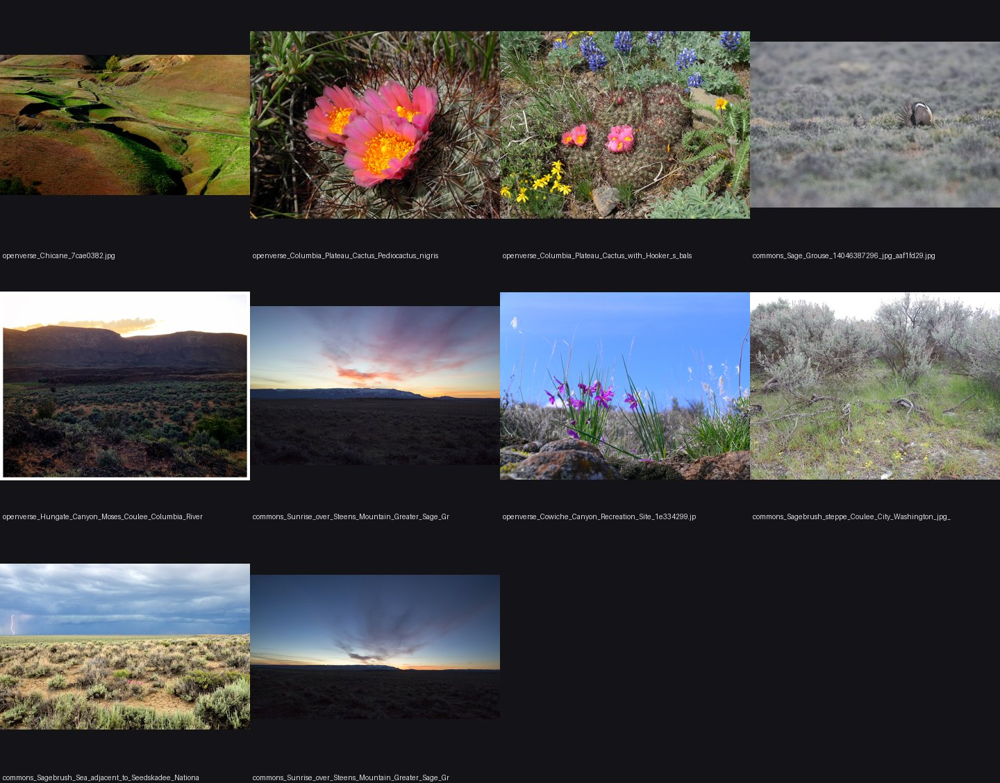
2. naturalist/plants/photos/sagebrush_steppe_Washington/_sheet.jpgRead: naturalist/plants/photos/ponderosa_pine_forest_eastern_Washington/_sheet.jpg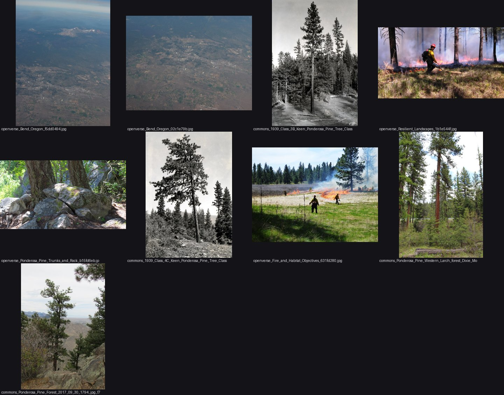
3. naturalist/plants/photos/ponderosa_pine_forest_eastern_Washington/_sheet.jpgBash: Show imgfetch usage
cd ~/work/pixelart-studies; python3 tools/imgfetch.py -h 2>&1 | head -30
# output:
usage: imgfetch.py [-h] [-f FILE] [-n N] [-o OUT] [--src SRC] [--width WIDTH]
[--sheet]
[query]
positional arguments:
query
options:
-h, --help show this help message and exit
-f FILE, --file FILE
-n N
-o OUT, --out OUT
--src SRC
--width WIDTH
--sheetBash: Fetch reference photos for steppe subjects
cd ~/work/pixelart-studies/elements/steppe/refs; T=~/work/pixelart-studies/tools/imgfetch.py for q in "big sagebrush shrub" "sagebrush steppe washington" "bluebunch wheatgrass" "bitterbrush shrub" "ponderosa pine parkland" "ponderosa pine tree open" "ponderosa pine crown needles" "shrub steppe basalt" "sagebrush winter snow" "sagebrush aerial"; do d=$(echo $q | tr ' ' '_'); python3 $T "$q" -n 12 -o $d --sheet >/dev/null 2>&1 & done; wait; ls */ | head -200 | wc -l; ls # output: 139 big_sagebrush_shrub bitterbrush_shrub bluebunch_wheatgrass ferrari_contact.png ponderosa_pine_crown_needles ponderosa_pine_parkland ponderosa_pine_tree_open sagebrush_aerial sagebrush_steppe_washington sagebrush_winter_snow shrub_steppe_basalt
Bash: List contact sheets
cd ~/work/pixelart-studies/elements/steppe/refs; ls */*sheet* # output: big_sagebrush_shrub/_sheet.jpg bitterbrush_shrub/_sheet.jpg bluebunch_wheatgrass/_sheet.jpg ponderosa_pine_crown_needles/_sheet.jpg ponderosa_pine_parkland/_sheet.jpg ponderosa_pine_tree_open/_sheet.jpg sagebrush_aerial/_sheet.jpg sagebrush_steppe_washington/_sheet.jpg sagebrush_winter_snow/_sheet.jpg shrub_steppe_basalt/_sheet.jpg
Read: elements/steppe/refs/big_sagebrush_shrub/_sheet.jpg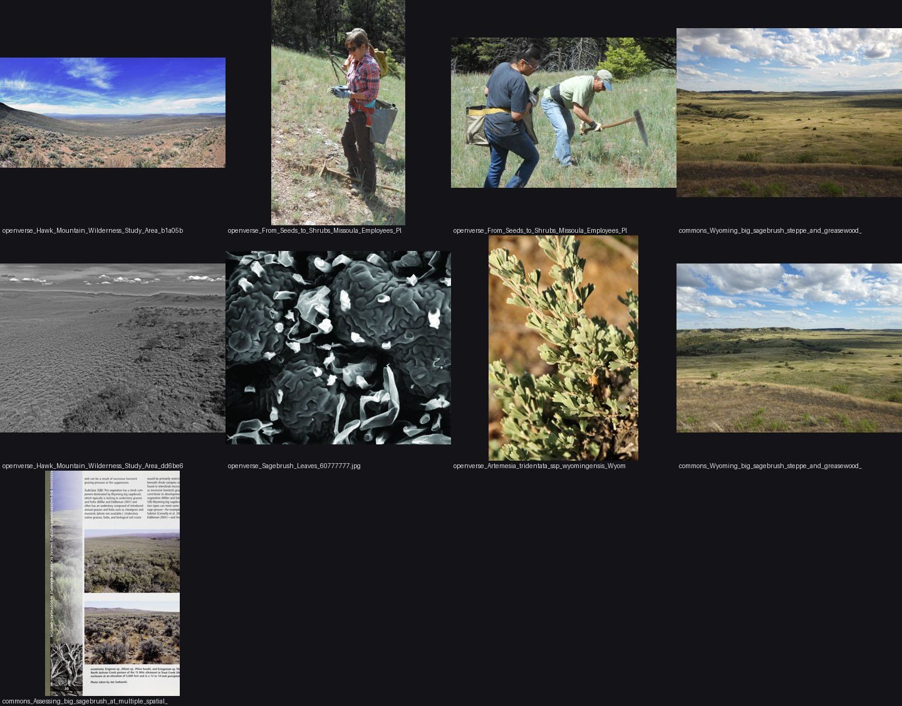
4. elements/steppe/refs/big_sagebrush_shrub/_sheet.jpgRead: elements/steppe/refs/sagebrush_steppe_washington/_sheet.jpgRead: elements/steppe/refs/ponderosa_pine_tree_open/_sheet.jpg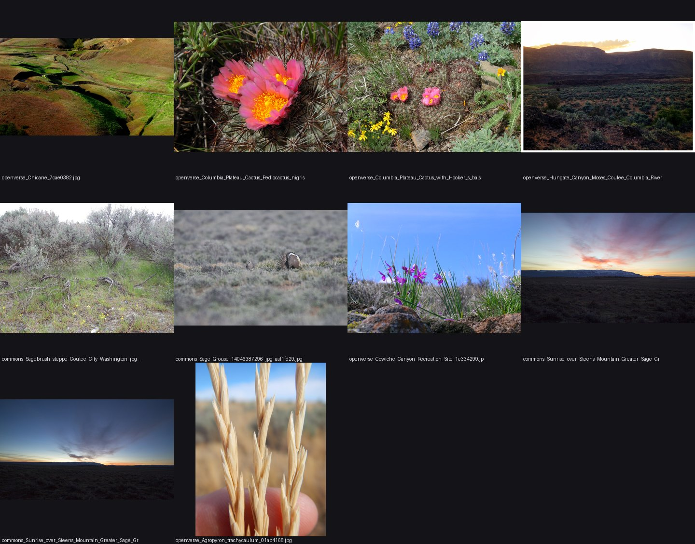
5. elements/steppe/refs/sagebrush_steppe_washington/_sheet.jpg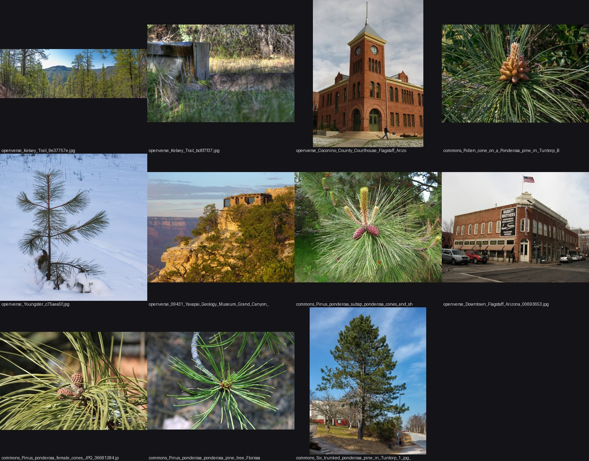
6. elements/steppe/refs/ponderosa_pine_tree_open/_sheet.jpgRead: elements/steppe/refs/ponderosa_pine_parkland/_sheet.jpg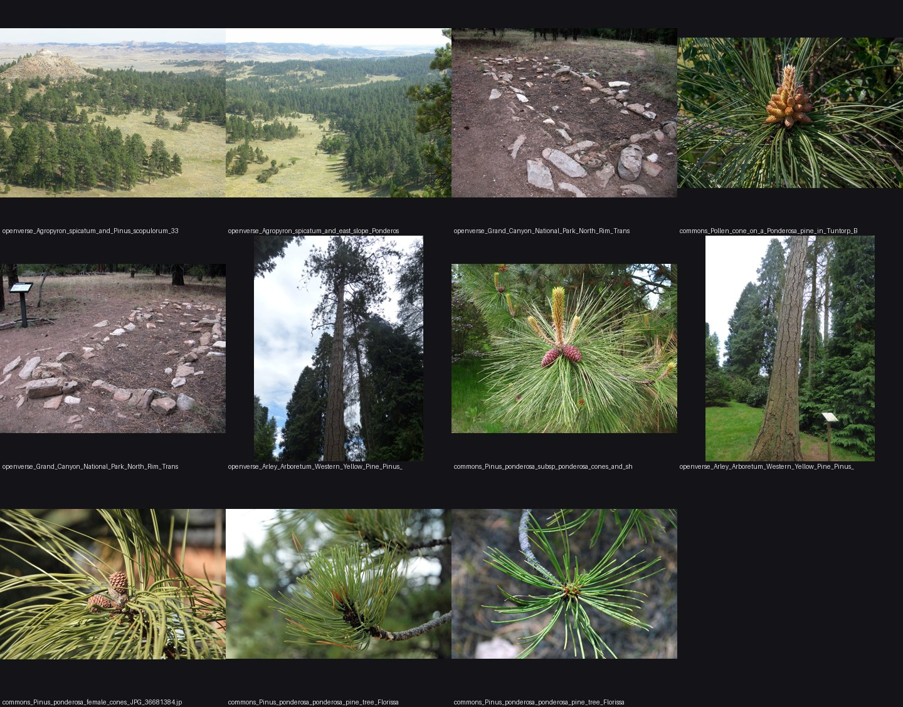
7. elements/steppe/refs/ponderosa_pine_parkland/_sheet.jpgRead: elements/steppe/refs/shrub_steppe_basalt/_sheet.jpg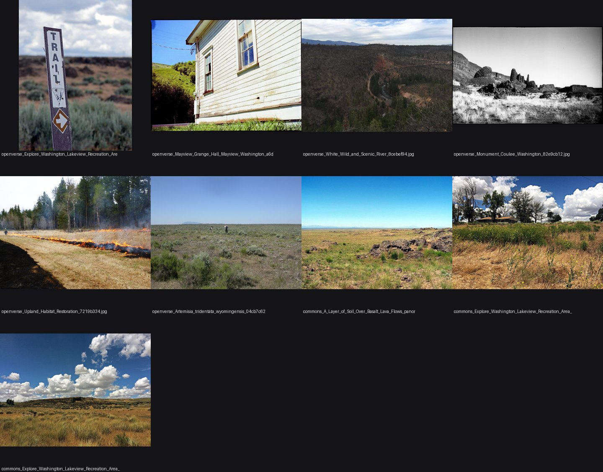
8. elements/steppe/refs/shrub_steppe_basalt/_sheet.jpgRead: elements/steppe/refs/sagebrush_winter_snow/_sheet.jpg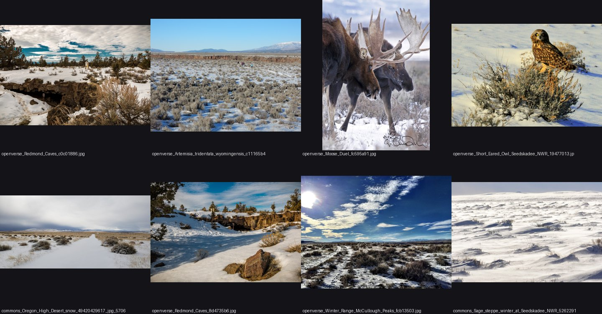
9. elements/steppe/refs/sagebrush_winter_snow/_sheet.jpgRead: elements/willow/stage5/s5_grass_edge_summer_noon_3x.png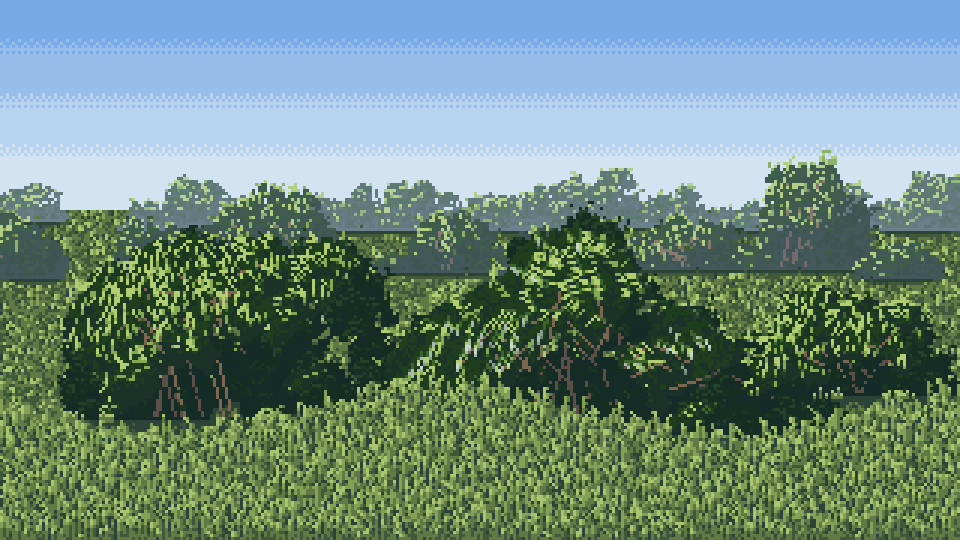
10. elements/willow/stage5/s5_grass_edge_summer_noon_3x.pngRead: elements/willow/sheets/A_season_x_hour.png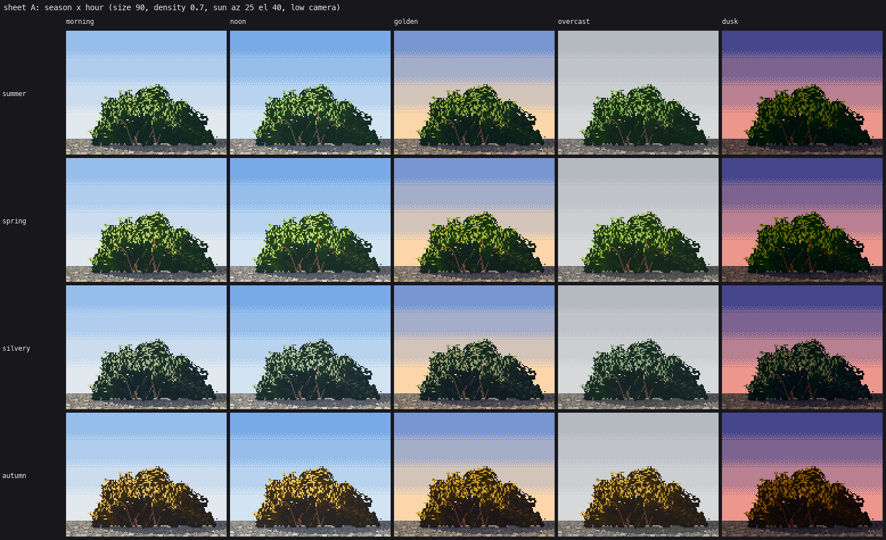
11. elements/willow/sheets/A_season_x_hour.pngBash: Read willow critique
cd ~/work/pixelart-studies/elements; sed -n 1,137p willow/CRITIQUE.md | cut -c1-400 # output: # Critique (newest first) ## Round 12 — 2026-09-25 23:39 — stage 6 sheets and "Where it stands" (finished) **My closing read: an honest ending, and I agree with it.** Judged against the willow photos for leaf form and Ferrari for craft: the willow reads as willow in colour at 60–150 px (narrow hanging leaves, arching wands, the stem fan, silver undersides, autumn gold), and `s5_water_edge` is the strongest image. (My read; your call.) Ready to use: - the palette-as-light system on one index canvas (season × hour, sheet A) - the narrow leaf stroke at willow scale, and silver undersides as pale flecks on dark - the wand-fan construction with three scales of normal (big form, clump, lobe), and lobe caps breaking the terminator - cast shadows as the ground itself two steps down, with the stones keeping their marks (sheet E) - the grass-overlap contact (stage 5 grass edge) Not ready: the shadow-side contour (smoother than his found edges); LOD below ~6 px (vanishes in sheet B; I'd fix that before the willow goes into a zoomable scene); repeated far bumps; bare-gravel contact (flat feet); an uncompressed mirror at the water edge (lights should drop); and the back-lit oblique bush, which should glow silver. ## Round 10 — 2026-09-25 23:14 — re-rendered sheets and stage 5 **The cast-shadow fix landed.** In sheet E the shadows now carry the gravel's own texture in its shadow family instead of a flat ellipse, which is exactly the Ferrari treatment, and they now read as shadow on ground. (My read; your call.) Still open: 1. **The LOD still vanishes** (sheet B, 6 px → 3 px). The 3 px column is empty in every row. 2. **The gravel bar's bushes** (`s5_gravel_bar_summer_noon_3x`) still sit on ruled flat feet with no shadow. The shadow logic from sheet E hasn't reached stage 5. The left bush also now has a straight vertical left side (x≈170–180) and a rectangular notch cut from its base (x≈300–330), which read as clipping. 3. The round-9 points on the cut-out shadow side and density stand. ## Round 9 — 2026-09-25 23:00 — sheets `sheets/A_season_x_hour.png`, `B_size_x_distance.png`, `C_density_x_seed.png`, `D_camera_x_light.png`, `E_season_x_size_oblique.png` **Sheets: REVISE.** A well-organised set: season × hour (A) is the strongest sheet, the depth palette (B, rows) recedes believably, and the oblique camera now has cast shadows. (My read; your call.) 1. **The cast shadows are flat grey ellipses** (E, all cells; D, oblique row). A single smooth-edged tone with no gravel texture in it reads as a puddle or a hole cut in the ground. A shadow on gravel is *the gravel, in its shadow family*: the same stones, darker and cooler, with the edge broken by the stones it crosses. Ferrari never lays a flat tone over textured ground. Also, sheet D "sun az 20 2. **The LOD vanishes.** Sheet B, row "distance 0.0": at 6 px the bush is a 2-pixel speck and at 3 px it's gone entirely. At 3 px a willow should still be a dab: 2–3 dark pixels with one lit one on top. Vanishing i
Bash: Peek at sibling students' outputs and critic log
cd ~/work/pixelart-studies/elements; ls conifers/stage0 conifers/stage1 grass-lod understory broadleaf | head -60; head -40 grass-lod/CRITIQUE.md | cut -c1-300; tail -30 _critic/LOG.md | cut -c1-300 # output: broadleaf: __pycache__ bark.py bl.py glyphs.py lw.py moss.py palette.py refs render.py s0_copy.py s1_clump.py stage0 stage1 tmp tree.py conifers/stage0: c1_v1.png c1_v10.png c1_v10_2x.png c1_v2.png c1_v3.png c1_v4.png c1_v5.png c1_v6.png c1_v7.png c1_v8.png c1_v9.png c1_v9_2x.png conifers/stage1: b1.png b2.png b3.png c1.png c2.png g1.png n1.png n2.png n2_zoom.png n3.png n4.png n5.png n6.png grass-lod: CRITIQUE.md cache img photos ref src understory: __pycache__ lwload.py refs stage0 work # Critique (newest first) ## Round 4 — 2026-09-25 23:50 — `img/wip.png` (V16 dusk palette), `cmp_lit.png`, `cmp_sh.png` **The palette switch fixes the acid-yellow problem.** At 30 and 8 px/m the ochre field with dark strands now sits in Ferrari's colour world, and the dark bank band with pink reflected dashes (30 px/m) is a lovely V16 echo. Still open: at 2 and 0.6 px/m the field goes to isotropic salt and pepper (se ## Round 3 — 2026-09-25 23:39 — `img/look_a.png`, `look_b.png` Nothing new to add since round 2. The zoom continuity holds, and the salt-and-pepper mid distance, acid palette, and ruled bank-shadow edge are the open items. I'll look at the next zoom run frame by frame again when it lands. ## Round 2 — 2026-09-25 23:26 — zoom runs `img/zoom_v3/` (64 frames), `zoom_v3_strip.png`, `zoom_v3_metrics.png`, `pair.png` **The handoff is smooth: I found no pops.** I looked at consecutive frames around the two small tone spikes in your metrics (frames 8→11, about 17 px/m, and 23→26, about 5 px/m) and at the far end (40→43). Viewing crops: `_critic/r11_grass_f08-11.png`, `r11_grass_f23-26.png`, `r11_grass_f40-43 What still keeps it from Ferrari's grass: 1. **Mid distance turns to salt and pepper** (frames 23–26). Around 5 px/m the marks lose their vertical direction and become isotropic single-pixel noise in four or five tones, which reads as moss or sponge. Ferrari's middle-distance grass (`ref/v16_midright_5x`) keeps short vertical ticks (2 px 2. **Too many tones, and an acid yellow** (round 1, items 1 and 3). Still the most visible difference when I put a frame next to `ref/v16_*`. 3. **The bank shadow** (`pair.png`) is a flat near-black band whose lower edge meets the water on a clean ruled diagonal. The grass fringe along its *top* is nice. At its bottom, where it meets the water, there should be the dark reflection and a stepped edge (see the channel student's stage 2). ## Round 1 — 2026-09-25 23:14 — WIP `img/wip.png`, `img/wip1x.png`, `img/cmp_wip.png` Early days, so these are notes rather than a verdict. I'm reading `cmp_wip.png` as yours on the left and Ferrari's V16 lit mound on the right; tell me if I have that backwards. What's working: at 30 px/m (top of `wip.png`) the grass reads as vertical strands with a lit field and a dark bank band, and the value structure of the whole ladder (lit field, dark bank, water) holds at every step. What I see: 1. **The stroke vocabulary is busier than his.** In `cmp_wip` his mound is a *flat* lit ochre
Bash: Crop candidate Ferrari passages at 2x
mkdir -p ~/work/pixelart-studies/elements/steppe/stage0; cd ~/work/pixelart-studies/elements/steppe; python3 -c "
from PIL import Image
R='~/work/pixelart-studies/pedagogy/master-copy/ref/lw/'
def crop(n,box,s,out):
im=Image.open(R+n+'.png').convert('RGB').crop(box); im=im.resize((im.width*s,im.height*s),Image.NEAREST); im.save('stage0/'+out)
crop('V11AM',(0,200,640,480),2,'look_v11am_low.png')
crop('V16PM',(0,250,640,480),2,'look_v16pm_low.png')
crop('V14',(0,300,640,480),2,'look_v14_low.png')
crop('V13',(0,250,640,480),2,'look_v13_low.png')
"
# output:
(Bash completed with no output)Read: elements/steppe/stage0/look_v11am_low.png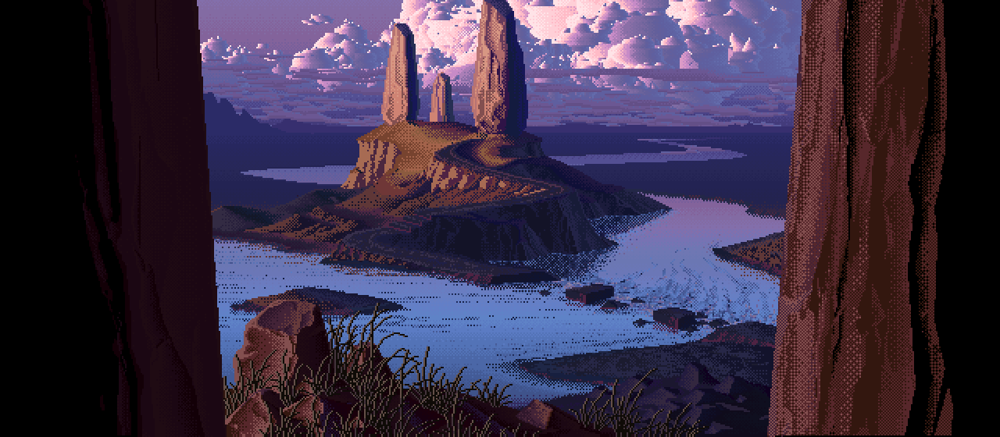
12. elements/steppe/stage0/look_v11am_low.pngRead: elements/steppe/stage0/look_v16pm_low.png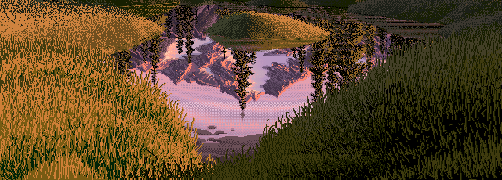
13. elements/steppe/stage0/look_v16pm_low.pngRead: elements/steppe/stage0/look_v14_low.png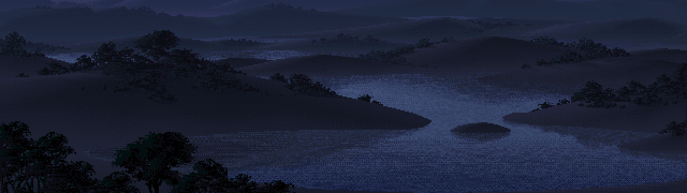
14. elements/steppe/stage0/look_v14_low.pngBash: Read willow painting infrastructure
cd ~/work/pixelart-studies/elements/willow; wc -l *.py; sed -n 1,200p wpaint.py
# output:
310 bush.py
201 context.py
102 copyharness.py
693 foliage.py
40 glyphstats.py
13 lw.py
111 palette.py
16 s1_cal.py
22 s1_form.py
56 s1_tex.py
20 s_try.py
34 search0.py
24 search_c2.py
99 sheets.py
178 stage0_copy.py
57 stage1.py
51 stage2.py
51 stage3.py
75 stage4.py
98 stage5.py
116 transfer.py
392 willow.py
213 wpaint.py
2972 total
"""wpaint: willow scrub, painted as an index canvas (material, step).
Stage by stage this file grows. Everything draws into a Canvas that holds, per pixel,
a material id and a step on that material's ramp. The palette (greys first, colour later)
turns (material, step) into RGB. Form lives in the steps; light lives in the palette.
Conventions: arrays are [y, x], y grows downward. 3-D vectors are (x right, y UP, z toward viewer).
"""
import os
os.environ.setdefault("OMP_NUM_THREADS", "1")
import numpy as np
from scipy import ndimage as ndi
from PIL import Image, ImageDraw, ImageFont
# ------------------------------------------------------------------ materials
SKY, GRAVEL, LEAF, SILVER, STEM, WATER, GRASS, EARTH, FAR = 1, 2, 3, 4, 5, 6, 7, 8, 9
NSTEP = 6 # leaf value plan: 0 core/contact | 1 shadow | 2 reflected || 3 halftone | 4 light | 5 top light
# greyscale ramps (value only), atelier spacing: big jump at the terminator
GREY6 = [0.05, 0.13, 0.22, 0.42, 0.56, 0.70]
# foliage value plan: close base pair, a gap, close mark pair (contrast lives inside the mark)
GREYF = [0.06, 0.14, 0.20, 0.26, 0.46, 0.62]
def grey_palette():
"""(mat, step) -> grey level in [0,1]. Background materials get their own local values."""
P = {}
for s in range(NSTEP):
P[(LEAF, s)] = GREYF[s]
P[(SILVER, s)] = min(1.0, GREY6[s] + 0.08)
P.update({(SKY, s): v for s, v in enumerate([0.78, 0.82, 0.86, 0.90])})
P.update({(GRAVEL, s): v for s, v in enumerate([0.10, 0.30, 0.44, 0.55, 0.63, 0.72])})
P.update({(STEM, s): v for s, v in enumerate([0.05, 0.18, 0.32, 0.50, 0.70])})
return P
class Canvas:
def __init__(self, w, h):
self.w, self.h = w, h
self.mat = np.zeros((h, w), np.uint8)
self.step = np.zeros((h, w), np.uint8)
def put(self, mask, mat, step):
self.mat[mask] = mat
self.step[mask] = np.asarray(step, np.int64)[mask] if np.ndim(step) else step
def px(self, x, y, mat, step):
if 0 <= x < self.w and 0 <= y < self.h:
self.mat[y, x] = mat
self.step[y, x] = step
def render(self, pal):
"""pal: dict (mat,step)->grey float or RGB tuple."""
out = np.zeros((self.h, self.w, 3), np.uint8)
keys = np.unique(self.mat.astype(np.int32) * 64 + self.step)
for k in keys:
m, s = divmod(int(k), 64)
v = pal.get((m, s))
if v is None:
# nearest defined step
cands = [kk for kk in pal if kk[0] == m]
Bash: Crop V11AM grass tufts and mesa slope zoomed
cd ~/work/pixelart-studies/elements/steppe; python3 -c "
from PIL import Image
R='~/work/pixelart-studies/pedagogy/master-copy/ref/lw/'
def crop(n,box,s,out):
im=Image.open(R+n+'.png').convert('RGB').crop(box); im=im.resize((im.width*s,im.height*s),Image.NEAREST); im.save('stage0/'+out)
crop('V11AM',(140,390,340,480),6,'v11am_tufts_6x.png')
crop('V11AM',(200,270,430,370),5,'v11am_mesa_5x.png')
"
# output:
(Bash completed with no output)Read: elements/steppe/stage0/v11am_tufts_6x.png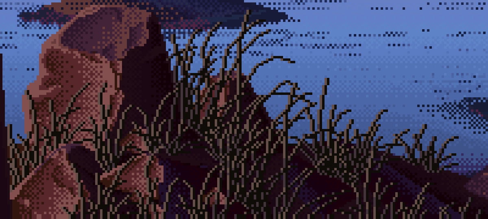
15. elements/steppe/stage0/v11am_tufts_6x.pngRead: elements/steppe/stage0/v11am_mesa_5x.png 16. elements/steppe/stage0/v11am_mesa_5x.png
16. elements/steppe/stage0/v11am_mesa_5x.png
Bash: Crop V16PM grass bank and V16 conifers
cd ~/work/pixelart-studies/elements/steppe; python3 -c "
from PIL import Image
R='~/work/pixelart-studies/pedagogy/master-copy/ref/lw/'
def crop(n,box,s,out):
im=Image.open(R+n+'.png').convert('RGB').crop(box); im=im.resize((im.width*s,im.height*s),Image.NEAREST); im.save('stage0/'+out)
crop('V16PM',(0,250,200,340),6,'v16pm_bank_6x.png')
crop('V16',(0,0,160,250),4,'v16_trees_4x.png')
"
# output:
(Bash completed with no output)Read: elements/steppe/stage0/v16pm_bank_6x.png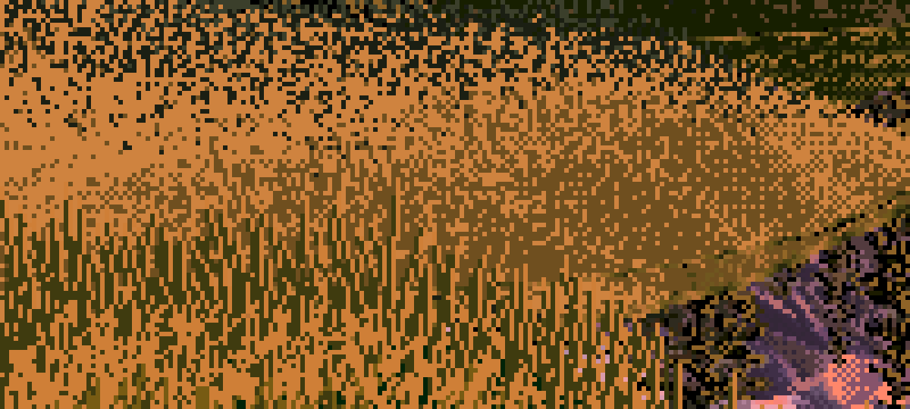
17. elements/steppe/stage0/v16pm_bank_6x.pngRead: elements/steppe/stage0/v16_trees_4x.png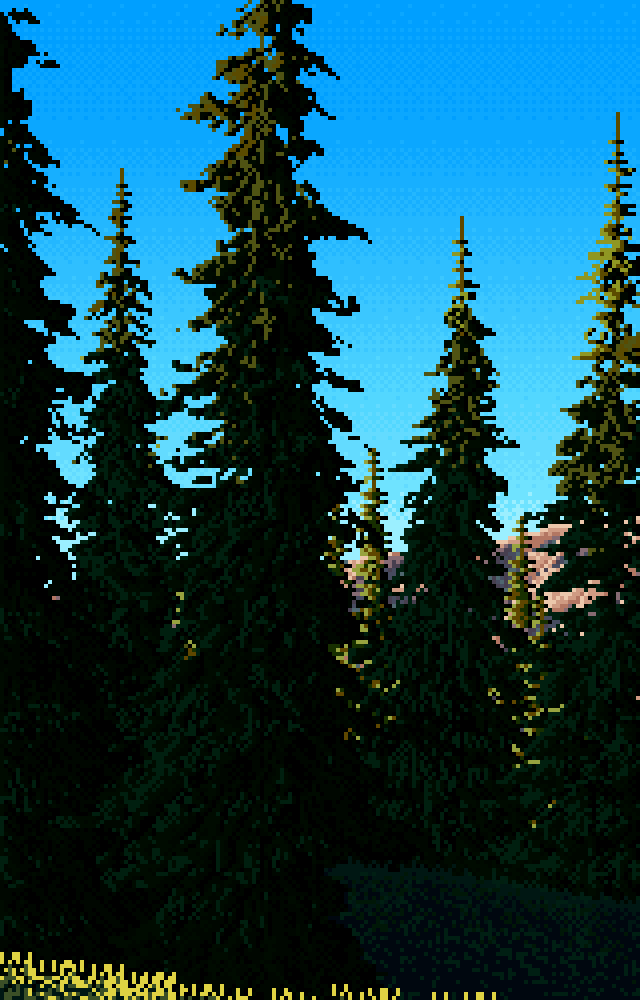
18. elements/steppe/stage0/v16_trees_4x.pngBash: Check photo sizes for close reading
cd ~/work/naturalist/plants/photos; python3 -c "
from PIL import Image; import glob
for f in glob.glob('sagebrush_steppe_Washington/*Coulee_City*')+glob.glob('sagebrush_steppe_Washington/*Seedskadee*')+glob.glob('ponderosa_pine_forest_eastern_Washington/*4C*')+glob.glob('ponderosa_pine_forest_eastern_Washington/*Dixie*'):
print(f, Image.open(f).size)
"; ls ~/work/pixelart-studies/elements/steppe/refs/ponderosa_pine_parkland/ ~/work/pixelart-studies/elements/steppe/refs/sagebrush_winter_snow/
# output:
sagebrush_steppe_Washington/commons_Sagebrush_steppe_Coulee_City_Washington_jpg_c4dfe713.jpg (1280, 960)
sagebrush_steppe_Washington/commons_Sagebrush_Sea_adjacent_to_Seedskadee_National_Wi_e3282a3f.jpg (1280, 850)
ponderosa_pine_forest_eastern_Washington/commons_1939_Class_4C_Keen_Ponderosa_Pine_Tree_Classific_2f5058e7.jpg (1280, 1869)
ponderosa_pine_forest_eastern_Washington/commons_Ponderosa_Pine_Western_Larch_forest_Dixie_Mounta_8beca028.jpg (1280, 1920)
~/work/pixelart-studies/elements/steppe/refs/ponderosa_pine_parkland/:
_sheet.jpg
commons_Pinus_ponderosa_female_cones_JPG_36681384.jpg
commons_Pinus_ponderosa_ponderosa_pine_tree_Florissant_N_486429ca.jpg
commons_Pinus_ponderosa_ponderosa_pine_tree_Florissant_N_a2c9e387.jpg
commons_Pinus_ponderosa_subsp_ponderosa_cones_and_shoots_cbc276fb.jpg
commons_Pollen_cone_on_a_Ponderosa_pine_in_Tuntorp_Brast_52c8df9a.jpg
openverse_Agropyron_spicatum_and_Pinus_scopulorum_330a2601.jpg
openverse_Agropyron_spicatum_and_east_slope_Ponderosa_pine_aa25bed0.jpg
openverse_Arley_Arboretum_Western_Yellow_Pine_Pinus_ponder_012ccf5f.jpg
openverse_Arley_Arboretum_Western_Yellow_Pine_Pinus_ponder_766bf162.jpg
openverse_Grand_Canyon_National_Park_North_Rim_Transept_Ru_052a001d.jpg
openverse_Grand_Canyon_National_Park_North_Rim_Transept_Ru_e65dd3fc.jpg
sources.tsv
~/work/pixelart-studies/elements/steppe/refs/sagebrush_winter_snow/:
_sheet.jpg
commons_Oregon_High_Desert_snow_49420429617_jpg_5706e3b1.jpg
commons_Sage_steppe_winter_at_Seedskadee_NWR_52622915332_20c6f0a8.jpg
openverse_Artemisia_tridentata_wyomingensis_c11165b4.jpg
openverse_Moose_Duel_fc595a91.jpg
openverse_Redmond_Caves_8d4735b6.jpg
openverse_Redmond_Caves_c0c01886.jpg
openverse_Short_Eared_Owl_Seedskadee_NWR_19477013.jpg
openverse_Winter_Range_McCullough_Peaks_fcb13503.jpg
sources.tsvRead: naturalist/plants/photos/sagebrush_steppe_Washington/commons_Sagebrush_Sea_adjacent_to_Seedskadee_National_Wi_e3282a3f.jpgRead: naturalist/plants/photos/sagebrush_steppe_Washington/commons_Sagebrush_steppe_Coulee_City_Washington_jpg_c4dfe713.jpg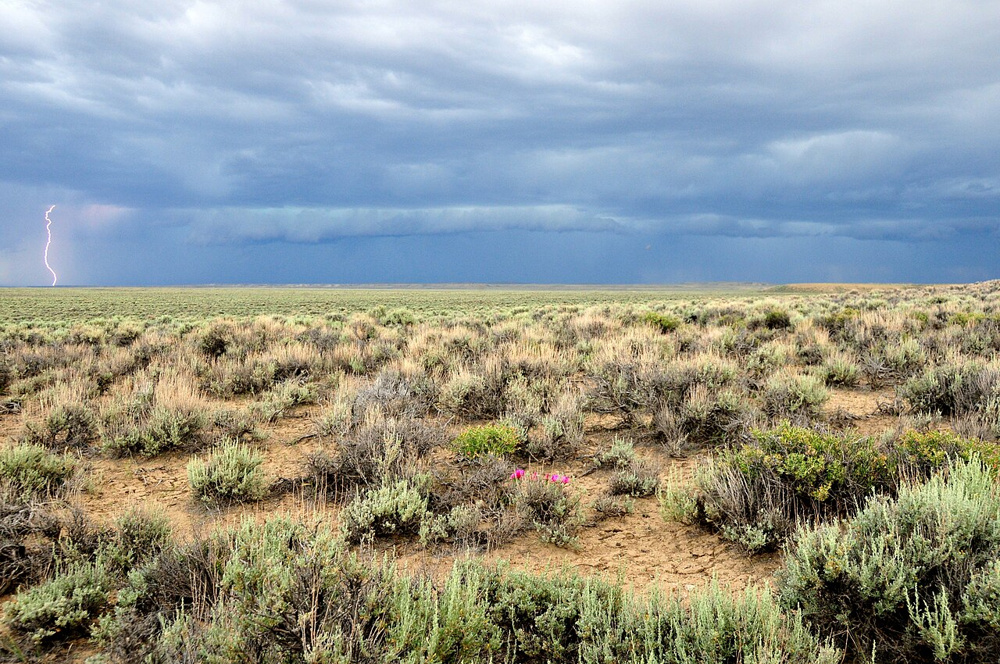
19. naturalist/plants/photos/sagebrush_steppe_Washington/commons_Sagebrush_Sea_adjacent_to_Seedskadee_National_Wi_e3282a3f.jpg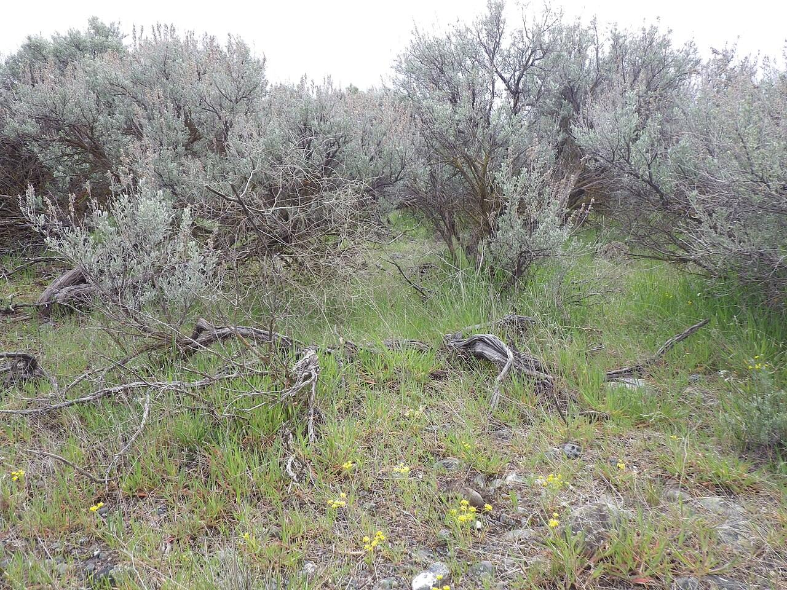
20. naturalist/plants/photos/sagebrush_steppe_Washington/commons_Sagebrush_steppe_Coulee_City_Washington_jpg_c4dfe713.jpgRead: naturalist/plants/photos/ponderosa_pine_forest_eastern_Washington/commons_1939_Class_4C_Keen_Ponderosa_Pine_Tree_Classific_2f5058e7.jpg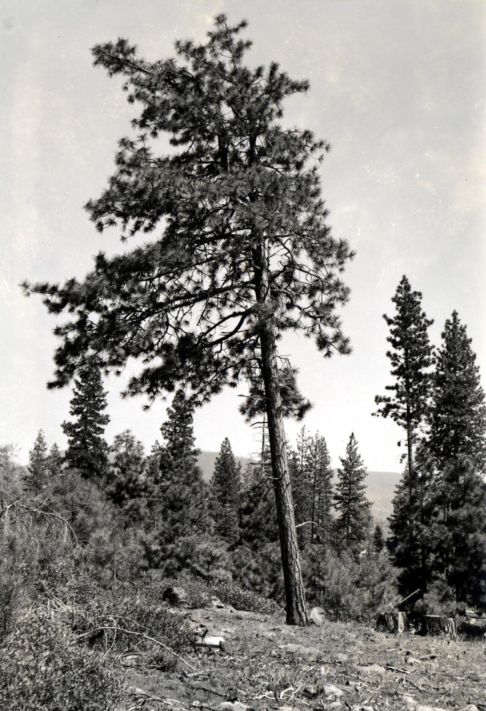
21. naturalist/plants/photos/ponderosa_pine_forest_eastern_Washington/commons_1939_Class_4C_Keen_Ponderosa_Pine_Tree_Classific_2f5058e7.jpgRead: elements/steppe/refs/ponderosa_pine_parkland/openverse_Agropyron_spicatum_and_Pinus_scopulorum_330a2601.jpg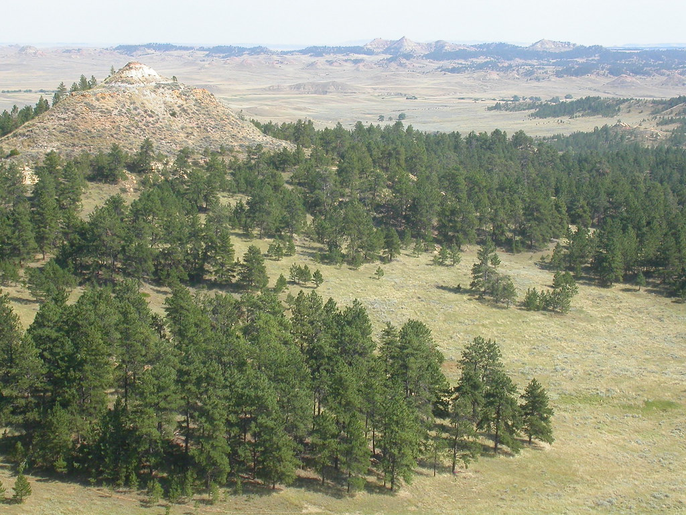
22. elements/steppe/refs/ponderosa_pine_parkland/openverse_Agropyron_spicatum_and_Pinus_scopulorum_330a2601.jpgRead: naturalist/plants/photos/ponderosa_pine_forest_eastern_Washington/commons_Ponderosa_Pine_Western_Larch_forest_Dixie_Mounta_8beca028.jpg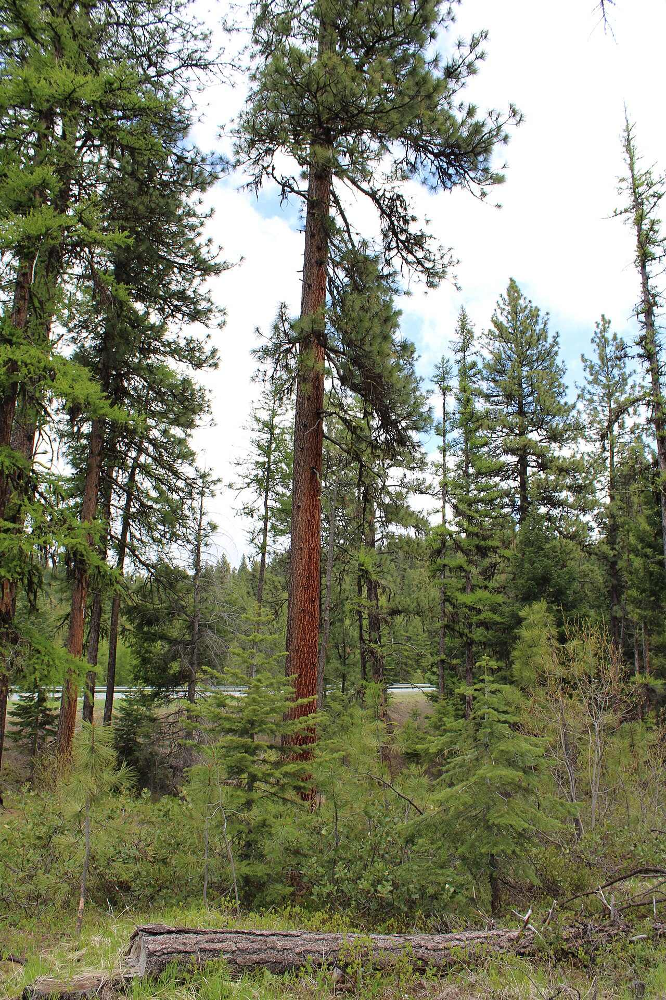
23. naturalist/plants/photos/ponderosa_pine_forest_eastern_Washington/commons_Ponderosa_Pine_Western_Larch_forest_Dixie_Mounta_8beca028.jpgBash: Analyze Ferrari index usage in tufts and cliff
cd ~/work/pixelart-studies/elements/steppe; cp ../willow/lw.py .; python3 -c "
import lw, numpy as np
d=lw.load('V11AM'); idx=d['idx']; pal=d['pal']
def rep(box,name):
x0,y0,x1,y1=box; r=idx[y0:y1,x0:x1]; u,c=np.unique(r,return_counts=True); o=np.argsort(-c)
print(name)
for i in o[:18]: print(' ',u[i],c[i],pal[u[i]], round(lw.lum(pal[u[i]]),1))
rep((140,400,340,480),'tufts')
rep((230,285,330,320),'cliff')
"
# output:
tufts
49 2634 [15 11 7] 11.6
51 1250 [99 79 71] 82.7
19 1209 [ 83 115 183] 113.1
20 1056 [ 75 103 167] 101.7
31 1048 [27 7 19] 12.1
25 984 [87 39 43] 49.5
32 896 [31 11 19] 15.8
18 895 [ 91 123 195] 121.4
17 726 [ 95 131 199] 128.3
24 703 [131 79 79] 90.1
50 620 [67 51 59] 55.0
21 516 [ 67 91 151] 90.2
26 470 [51 23 15] 28.4
34 467 [23 0 15] 6.0
30 457 [19 0 7] 4.5
22 293 [ 63 83 139] 82.8
35 283 [31 15 43] 20.4
33 268 [27 0 11] 6.5
cliff
61 391 [119 67 47] 76.6
63 340 [163 99 75] 110.9
66 320 [87 43 67] 54.1
75 319 [167 107 83] 118.0
67 305 [139 91 63] 99.2
68 253 [167 107 83] 118.0
77 248 [75 39 63] 48.4
81 241 [111 55 55] 66.9
70 182 [79 35 67] 46.7
55 165 [35 31 55] 33.6
83 143 [35 27 63] 31.3
52 128 [75 47 75] 55.0
89 108 [31 23 63] 27.6
58 92 [31 31 71] 33.9
90 68 [15 15 55] 17.9
60 38 [23 23 51] 25.0
92 36 [23 27 55] 28.2
80 21 [39 23 51] 28.4Bash: Render tuft indices as false colour at 8x
cd ~/work/pixelart-studies/elements/steppe; python3 -c "
import lw, numpy as np
from PIL import Image
d=lw.load('V11AM'); idx=d['idx']
r=idx[410:480,230:330]
out=np.zeros(r.shape+(3,),np.uint8)+[60,90,160]
out[r==49]=[0,0,0]; out[r==50]=[200,60,60]; out[r==51]=[255,230,120]
Image.fromarray(np.repeat(np.repeat(out,8,0),8,1)).save('stage0/v11am_tuft_idx_8x.png')
"
# output:
Exit code 1
Traceback (most recent call last):
File "~/miniconda3/lib/python3.12/site-packages/PIL/Image.py", line 3311, in fromarray
mode, rawmode = _fromarray_typemap[typekey]
~~~~~~~~~~~~~~~~~~^^^^^^^^^
KeyError: ((1, 1, 3), '<i8')
The above exception was the direct cause of the following exception:
Traceback (most recent call last):
File "<string>", line 8, in <module>
File "~/miniconda3/lib/python3.12/site-packages/PIL/Image.py", line 3315, in fromarray
raise TypeError(msg) from e
TypeError: Cannot handle this data type: (1, 1, 3), <i8Bash: Render tuft indices as false colour at 8x
cd ~/work/pixelart-studies/elements/steppe; python3 -c "
import lw, numpy as np
from PIL import Image
d=lw.load('V11AM'); idx=d['idx']
r=idx[410:480,230:330]
out=np.zeros(r.shape+(3,),np.uint8); out[:]=[60,90,160]
out[r==49]=[0,0,0]; out[r==50]=[200,60,60]; out[r==51]=[255,230,120]
Image.fromarray(np.repeat(np.repeat(out,8,0),8,1)).save('stage0/v11am_tuft_idx_8x.png')
"
# output:
(Bash completed with no output)Read: elements/steppe/stage0/v11am_tuft_idx_8x.png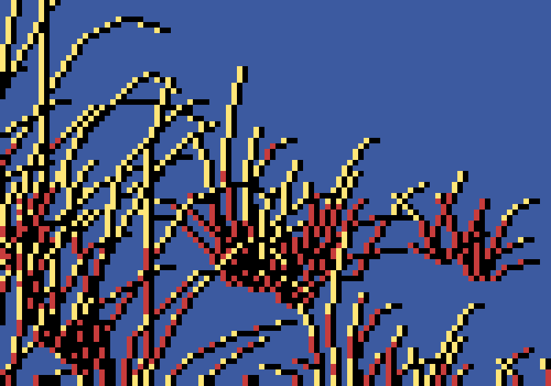
24. elements/steppe/stage0/v11am_tuft_idx_8x.pngWrite: elements/steppe/sp.py
"""sp: the steppe painter's shared core.
An index canvas (material, step). Form lives in the steps; light, season and hour live in the
palette. Narrow forms are drawn as clean runs. Everything else in this folder paints into it.
Conventions: arrays are [y, x], y grows downward.
"""
import os
os.environ.setdefault("OMP_NUM_THREADS", "1")
os.environ.setdefault("OPENBLAS_NUM_THREADS", "1")
import numpy as np
from scipy import ndimage as ndi
from PIL import Image, ImageDraw, ImageFont
HERE = os.path.dirname(os.path.abspath(__file__))
# ------------------------------------------------------------------ materials
(SKY, GROUND, CRUST, STONE, BASALT, SAGE, SAGESTEM, GRASS, BITTER, NEEDLE, BARK,
FAR, SNOW, FLOWER, SHADOWGROUND, HAZE, WATER, FORB) = range(1, 19)
NAMES = {v: k for k, v in dict(SKY=SKY, GROUND=GROUND, CRUST=CRUST, STONE=STONE, BASALT=BASALT,
SAGE=SAGE, SAGESTEM=SAGESTEM, GRASS=GRASS, BITTER=BITTER,
NEEDLE=NEEDLE, BARK=BARK, FAR=FAR, SNOW=SNOW, FLOWER=FLOWER,
HAZE=HAZE, WATER=WATER, FORB=FORB).items()}
class Canvas:
"""Per pixel: material id and step on that material's ramp. Band = depth band (0 near)."""
def __init__(self, w, h):
self.w, self.h = w, h
self.mat = np.zeros((h, w), np.uint8)
self.step = np.zeros((h, w), np.int16)
self.band = np.zeros((h, w), np.uint8)
self.depth = np.full((h, w), 1e9, np.float32) # optional z-buffer (smaller = nearer)
def px(self, x, y, mat, step, band=None, z=None):
x, y = int(x), int(y)
if 0 <= x < self.w and 0 <= y < self.h:
if z is not None:
if z > self.depth[y, x]:
return
self.depth[y, x] = z
self.mat[y, x] = mat
self.step[y, x] = step
if band is not None:
self.band[y, x] = band
def put(self, mask, mat, step, band=None):
self.mat[mask] = mat
self.step[mask] = (np.asarray(step)[mask] if np.ndim(step) else step)
if band is not None:
self.band[mask] = band
def blit(self, other, ox, oy, keep=None):
"""Paste another canvas where its material is nonzero."""
h, w = other.h, other.w
y0, x0 = max(0, oy), max(0, ox)
y1, x1 = min(self.h, oy + h), min(self.w, ox + w)
if y1 <= y0 or x1 <= x0:
return
sub = (slice(y0 - oy, y1 - oy), slice(x0 - ox, x1 - ox))
m = other.mat[sub] > 0
for a, b in ((self.mat, other.mat), (self.step, other.step), (self.band, other.band)):
a[y0:y1, x0:x1][m] = b[sub][m]
def render(self, pal):
"""pal: Palette-like: pal.rgb(mat, step, band) -> (3,) or dict {(mat,step): rgb}."""
out = np.zeros((self.h, self.w, 3), np.uint8)
key = (self.mat.astype(np.int64) * 4096 + self.band.astype(np.int64) * 256
+ np.clip(self.step, 0, 255).astype(np.int64))
for k in np.unique(key):
m, r = divmod(int(k), 4096)
b, s = divmod(r, 256)
out[key == k] = pal.rgb(m, s, b)
return out
# ------------------------------------------------------------------ helpers
def value_noise(shape, scale, rng, octaves=1):
h, w = shape
out = np.zeros(shape)
amp, tot = 1.0, 0.0
for o in range(octaves):
s = max(1.0, scale / (2 ** o))
gh, gw = int(h / s) + 4, int(w / s) + 4
g = rng.random((gh, gw))
Y, X = np.meshgrid(np.arange(h) / s, np.arange(w) / s, indexing="ij")
out += amp * ndi.map_coordinates(g, [Y, X], order=3, mode="reflect")
tot += amp
amp *= 0.5
return out / tot
def upscale(img, k):
return np.repeat(np.repeat(img, k, 0), k, 1)
def save(img, path, k=1):
os.makedirs(os.path.dirname(path) or ".", exist_ok=True)
Image.fromarray(upscale(img, k) if k > 1 else img).save(path)
BAYER2 = np.array([[0, 2], [3, 1]]) / 4.0 + 0.125
BAYER4 = np.array([[0, 8, 2, 10], [12, 4, 14, 6], [3, 11, 1, 9], [15, 7, 13, 5]]) / 16.0 + 1 / 32
def quantize(x, ordered=True, rng=None, bayer=BAYER2):
"""Continuous step coordinate -> integer steps, dithering only between adjacent steps."""
h, w = x.shape
f = np.floor(x)
frac = x - f
if ordered:
t = np.tile(bayer, (h // bayer.shape[0] + 1, w // bayer.shape[1] + 1))[:h, :w]
else:
t = (rng or np.random.default_rng(0)).random((h, w))
return (f + (frac > t)).astype(np.int16)
# ------------------------------------------------------------------ clean runs for narrow forms
RATIOS = [0, 0.25, 1 / 3, 0.5, 1.0, 2.0, 3.0, 4.0, 1e9]
def clean_line(x0, y0, x1, y1):
"""A narrow stroke as a clean run: slope snapped to 0,1:4,1:3,1:2,1:1,2:1,3:1,4:1,inf;
steps are equal-length runs."""
dx, dy = x1 - x0, y1 - y0
if max(abs(dx), abs(dy)) < 0.5:
return [(int(round(x0)), int(round(y0)))]
sx, sy = (1 if dx >= 0 else -1), (1 if dy >= 0 else -1)
r = abs(dy) / max(abs(dx), 1e-9)
r = min(RATIOS, key=lambda q: abs(np.log((q + 0.05) / (r + 0.05))))
pts = []
x, y = int(round(x0)), int(round(y0))
if r >= 1:
run = int(round(r)) if r < 1e8 else 10 ** 6
for i in range(int(round(abs(dy))) + 1):
pts.append((x, y))
y += sy
if run < 10 ** 6 and (i + 1) % run == 0:
x += sx
else:
run = int(round(1 / r)) if r > 0 else 10 ** 6
for i in range(int(round(abs(dx))) + 1):
pts.append((x, y))
x += sx
if run < 10 ** 6 and (i + 1) % run == 0:
y += sy
return pts
def polyline_clean(pts):
out = []
for a, b in zip(pts[:-1], pts[1:]):
seg = clean_line(*a, *b)
if out and seg:
# continue from where the previous segment actually ended
ex, ey = out[-1]
ddx, ddy = ex - seg[0][0], ey - seg[0][1]
seg = [(x + ddx, y + ddy) for x, y in seg][1:]
out += seg
return out
def arc_points(x0, y0, ang0, length, bend, nseg=4):
"""A curving narrow form: starts at (x0,y0) heading ang0 (radians from straight up, +right),
total length in px, bend = total change of angle over the length (radians). Returns
control points (floats)."""
pts = [(x0, y0)]
a = ang0
seg = length / nseg
x, y = x0, y0
for i in range(nseg):
a_mid = a + bend / nseg * 0.5
x += np.sin(a_mid) * seg
y -= np.cos(a_mid) * seg
a += bend / nseg
pts.append((x, y))
return pts
# ------------------------------------------------------------------ OKLab
def srgb_to_lin(c):
c = np.asarray(c, float) / 255.0
return np.where(c <= 0.04045, c / 12.92, ((c + 0.055) / 1.055) ** 2.4)
def lin_to_srgb(c):
c = np.clip(c, 0, 1)
return np.clip(np.where(c <= 0.0031308, c * 12.92, 1.055 * c ** (1 / 2.4) - 0.055) * 255, 0, 255)
def rgb2lab(rgb):
l = srgb_to_lin(rgb)
M1 = np.array([[0.4122214708, 0.5363325363, 0.0514459929],
[0.2119034982, 0.6806995451, 0.1073969566],
[0.0883024619, 0.2817188376, 0.6299787005]])
lms = np.cbrt(l @ M1.T)
M2 = np.array([[0.2104542553, 0.7936177850, -0.0040720468],
[1.9779984951, -2.4285922050, 0.4505937099],
[0.0259040371, 0.7827717662, -0.8086757660]])
return lms @ M2.T
def lab2rgb(lab):
lab = np.asarray(lab, float)
M2i = np.array([[1.0, 0.3963377774, 0.2158037573],
[1.0, -0.1055613458, -0.0638541728],
[1.0, -0.0894841775, -1.2914855480]])
lms = (lab @ M2i.T) ** 3
M1i = np.array([[4.0767416621, -3.3077115913, 0.2309699292],
[-1.2684380046, 2.6097574011, -0.3413193965],
[-0.0041960863, -0.7034186147, 1.7076147010]])
return lin_to_srgb(lms @ M1i.T)
def mix(a, b, t):
"""Mix two sRGB colours in OKLab."""
return lab2rgb(rgb2lab(a) * (1 - t) + rgb2lab(b) * t)
# ------------------------------------------------------------------ sheets
def _font(sz=12):
for p in ["/System/Library/Fonts/Menlo.ttc", "/System/Library/Fonts/Monaco.ttf"]:
if os.path.exists(p):
try:
return ImageFont.truetype(p, sz)
except Exception:
pass
return ImageFont.load_default()
def grid(cells, cols, rowlabels=None, collabels=None, title=None, labels=None, pad=6,
bg=(22, 22, 26), fg=(225, 225, 225)):
h = max(c.shape[0] for c in cells)
w = max(c.shape[1] for c in cells)
rows = (len(cells) + cols - 1) // cols
lw = 120 if rowlabels else 0
th = 20 if collabels else 0
tt = 26 if title else 0
lh = 15 if labels else 0
W = lw + cols * (w + pad) + pad
H = tt + th + rows * (h + pad + lh) + pad
im = Image.new("RGB", (W, H), bg)
d = ImageDraw.Draw(im)
f = _font(12)
if title:
d.text((pad, 5), title, fill=fg, font=_font(14))
if collabels:
for c, t in enumerate(collabels):
d.text((lw + pad + c * (w + pad), tt + 3), t, fill=fg, font=f)
for i, c in enumerate(cells):
r, k = divmod(i, cols)
x = lw + pad + k * (w + pad)
y = tt + th + pad + r * (h + pad + lh)
im.paste(Image.fromarray(c), (x, y))
if labels:
d.text((x, y + c.shape[0] + 1), labels[i], fill=fg, font=f)
if rowlabels:
for r, t in enumerate(rowlabels):
d.text((4, tt + th + pad + r * (h + pad + lh) + h // 2 - 6), t, fill=fg, font=f)
return np.array(im)
def fit(img, H):
"""Resize a photo (or anything) to height H with smooth filtering, for side-by-sides."""
im = Image.fromarray(img) if isinstance(img, np.ndarray) else img
im = im.convert("RGB")
return np.array(im.resize((max(1, int(im.width * H / im.height)), H), Image.LANCZOS))
def hstack(panels, labels=None, pad=8, bg=(22, 22, 26)):
H = max(p.shape[0] for p in panels)
W = sum(p.shape[1] for p in panels) + pad * (len(panels) + 1)
lh = 18 if labels else 0
im = Image.new("RGB", (W, H + pad * 2 + lh), bg)
d = ImageDraw.Draw(im)
x = pad
for i, p in enumerate(panels):
im.paste(Image.fromarray(p), (x, pad + lh))
if labels:
d.text((x, 3), labels[i], fill=(225, 225, 225), font=_font(12))
x += p.shape[1] + pad
return np.array(im)
Write: elements/steppe/s0_tufts.py
"""Stage 0, copy C1: Ferrari's dry grass tufts in front of the rock, Living Worlds V11AM.
The copyist's sketch: the original with every grass pixel removed (filled from its non-grass
neighbours), plus tuft centres found as maxima of the blurred dark-grass density. Everything at
pixel level (the blades) is generated by `grass.paired_blades`.
"""
import sys, numpy as np
from scipy import ndimage as ndi
import lw, sp
from grass import tuft_blades, draw_blade_pairs
X0, Y0, X1, Y1 = 140, 390, 340, 480
DARK, MID, LIT = 49, 50, 51
def sketch():
d = lw.load("V11AM")
idx = d["idx"][Y0:Y1, X0:X1].copy()
g = np.isin(idx, [DARK, MID, LIT])
# fill grass pixels from nearest non-grass pixel
_, (iy, ix) = ndi.distance_transform_edt(g, return_indices=True)
bg = idx[iy, ix]
dens = ndi.gaussian_filter((idx == DARK).astype(float), 6)
mx = (dens == ndi.maximum_filter(dens, 17)) & (dens > 0.18)
cy, cx = np.nonzero(mx)
return d, idx, bg, list(zip(cx, cy, dens[cy, cx]))
def paint(seed=0, params=None):
d, idx, bg, centres = sketch()
p = dict(n_per=14, len_mu=20, len_sd=7, spread=0.75, bend=0.9, lit_side=1, tipdark=0.25)
if params:
p.update(params)
rng = np.random.default_rng(seed)
out = bg.copy()
H, W = out.shape
for cx, cy, dn in centres:
# base sits below the density centre (tufts are fountains from the ground)
base_y = min(H + 6, cy + 14)
n = int(p["n_per"] * (0.6 + dn * 2.0))
blades = tuft_blades(cx, base_y, n, rng, len_mu=p["len_mu"], len_sd=p["len_sd"],
spread=p["spread"], bend=p["bend"])
draw_blade_pairs(out, blades, DARK, MID, LIT, lit_side=p["lit_side"],
tipdark=p["tipdark"], rng=rng)
return d, idx, out
if __name__ == "__main__":
d, idx, out = paint(int(sys.argv[1]) if len(sys.argv) > 1 else 0)
pal = d["pal"]
a, b = pal[idx], pal[out]
k = 4
top = sp.hstack([sp.upscale(a, k), sp.upscale(b, k)], ["Ferrari V11AM tufts 4x", "copy 4x"])
ya, xa = 20, 90
z = 8
bot = sp.hstack([sp.upscale(a[ya:ya + 60, xa:xa + 90], z), sp.upscale(b[ya:ya + 60, xa:xa + 90], z)],
["Ferrari 8x", "copy 8x"])
sp.save(top, "stage0/c1_tufts_4x.png")
sp.save(bot, "stage0/c1_tufts_8x.png")
Write: elements/steppe/grass.py
"""grass: bunchgrass (bluebunch wheatgrass, Idaho fescue, cheatgrass carpets) from blade to band.
The near-scale mark is Ferrari's paired blade, measured in V11AM's tufts (stage 0): each blade is
a clean-run curve of the darkest step with a 1-px lit line on its sun side (right of steep runs,
above shallow runs); the tip is dark only; low on the tuft the lit line drops to the mid step;
the base is a dense dark core with mid flecks. Only three steps.
"""
import numpy as np
import sp
def tuft_blades(cx, base_y, n, rng, len_mu=20, len_sd=7, spread=0.75, bend=0.9, width=4.0,
upright=0.0):
"""A fountain: n blades from a base `width` px wide at (cx, base_y).
Returns list of pixel lists (clean runs), base first."""
blades = []
for i in range(n):
u = rng.uniform(-1, 1)
u = np.sign(u) * abs(u) ** 0.8
ang = u * spread * (1 - upright) + rng.normal(0, 0.10)
L = max(4, rng.normal(len_mu, len_sd) * (1 - 0.35 * abs(u)))
b = np.sign(ang) * bend * (abs(ang) / max(spread, 1e-3)) ** 1.2 * rng.uniform(0.5, 1.2)
bx = cx + u * width * 0.5 + rng.normal(0, 0.6)
pts = sp.arc_points(bx, base_y, ang, L, b, nseg=max(2, int(L / 6)))
blades.append(sp.polyline_clean(pts))
# draw long upright ones last? Ferrari's front blades cross the back ones: shuffle order
rng.shuffle(blades)
return blades
def blade_roles(pix, lit_side=1, tipdark=0.25, low_mid=0.35):
"""Pixel roles for one blade: [(x,y,role)], role 0 dark, 1 mid, 2 lit."""
out = []
n = len(pix)
for i, (x, y) in enumerate(pix):
out.append((x, y, 0))
t = i / max(1, n - 1) # 0 base -> 1 tip
if t > 1 - tipdark:
continue
# local direction
j0, j1 = max(0, i - 2), min(n - 1, i + 2)
dx = pix[j1][0] - pix[j0][0]
dy = pix[j1][1] - pix[j0][1]
role = 2 if t > low_mid else 1
if abs(dy) >= abs(dx): # steep: lit on the sun side horizontally
out.append((x + lit_side, y, role))
else: # shallow: lit on top
out.append((x, y - 1, role))
return out
def draw_blade_pairs(arr, blades, dark, mid, lit, lit_side=1, tipdark=0.25, rng=None,
mask=None, core=True):
"""Draw paired blades into an index array `arr` (values dark/mid/lit). Later blades cover
earlier ones, but a lit pixel never covers another blade's dark pixel (the dark line wins),
which is what keeps the crossing strokes legible."""
H, W = arr.shape
isdark = np.zeros_like(arr, bool) if mask is None else mask
for pix in blades:
roles = blade_roles(pix, lit_side, tipdark)
for x, y, r in roles:
if 0 <= x < W and 0 <= y < H:
if r == 0:
arr[y, x] = dark
isdark[y, x] = True
else:
if isdark[y, x] and rng is not None and rng.random() < 0.7:
continue
arr[y, x] = lit if r == 2 else mid
isdark[y, x] = False
return arr
Bash: Run first tuft master copy
cd ~/work/pixelart-studies/elements/steppe; nice -n 10 python3 s0_tufts.py 0 && echo ok # output: ok
Read: elements/steppe/stage0/c1_tufts_8x.pngRead: elements/steppe/stage0/c1_tufts_4x.png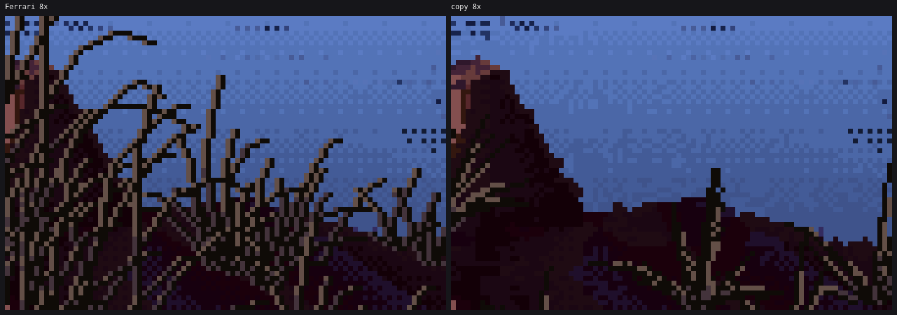
25. elements/steppe/stage0/c1_tufts_8x.png 26. elements/steppe/stage0/c1_tufts_4x.png
26. elements/steppe/stage0/c1_tufts_4x.png
Bash: Inspect detected tuft centres
cd ~/work/pixelart-studies/elements/steppe; python3 -c " import s0_tufts as s d,idx,bg,c=s.sketch(); print(len(c)); print(c)" # output: 9 [(85, 50, 0.4946704614567702), (21, 55, 0.3001639828855807), (44, 60, 0.31424775151036316), (175, 64, 0.2795292442856554), (139, 65, 0.5307319047278728), (104, 81, 0.4980358089323444), (43, 89, 0.4154735468040554), (84, 89, 0.37333632199321326), (156, 89, 0.32696326164839234)]
Bash: Try denser, longer tuft parameters
cd ~/work/pixelart-studies/elements/steppe; python3 - <<'EOF'
import s0_tufts as s, sp, numpy as np
for i,p in enumerate([dict(n_per=40,len_mu=32,len_sd=10,spread=0.9,bend=1.3),
dict(n_per=55,len_mu=36,len_sd=12,spread=1.0,bend=1.6,tipdark=0.18)]):
d,idx,out=s.paint(1,p); pal=d['pal']
a,b=pal[idx],pal[out]
sp.save(sp.hstack([sp.upscale(a,4),sp.upscale(b,4)],['Ferrari 4x',f'copy v{i+2} 4x']),f'stage0/c1_tufts_v{i+2}_4x.png')
EOF
# output:
(Bash completed with no output)Read: elements/steppe/stage0/c1_tufts_v3_4x.png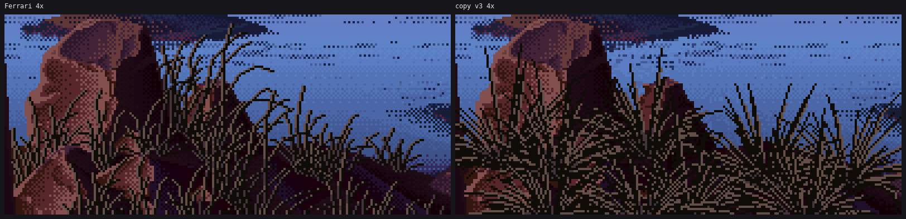
27. elements/steppe/stage0/c1_tufts_v3_4x.pngBash: Rework blade model and render three variants
cd ~/work/pixelart-studies/elements/steppe; python3 - <<'EOF'
import re
s=open('grass.py').read()
s=s.replace(''' b = np.sign(ang) * bend * (abs(ang) / max(spread, 1e-3)) ** 1.2 * rng.uniform(0.5, 1.2)
bx = cx + u * width * 0.5 + rng.normal(0, 0.6)
pts = sp.arc_points(bx, base_y, ang, L, b, nseg=max(2, int(L / 6)))''',''' sgn = np.sign(ang) if rng.random() < wander else -np.sign(ang)
b = sgn * bend * (0.3 + abs(ang) / max(spread, 1e-3)) * rng.uniform(0.4, 1.2)
bx = cx + u * width * 0.5 + rng.normal(0, 0.6)
pts = tip_arc(bx, base_y, ang, L, b, nseg=max(3, int(L / 5)))''')
s=s.replace("width=4.0,\n upright=0.0):","width=4.0,\n upright=0.0, wander=0.8):")
s=s.replace('''def blade_roles(pix, lit_side=1, tipdark=0.25, low_mid=0.35):''','''def tip_arc(x0, y0, ang0, length, bend, nseg=4, power=2.2):
"""Like sp.arc_points, but the bend gathers toward the tip (a grass blade is stiff at the
base and droops at the end)."""
pts = [(x0, y0)]
x, y = x0, y0
seg = length / nseg
for i in range(nseg):
t = (i + 0.5) / nseg
a = ang0 + bend * t ** power
x += np.sin(a) * seg
y -= np.cos(a) * seg
pts.append((x, y))
return pts
def blade_roles(pix, lit_side=1, tipdark=0.25, low_mid=0.35, low_dark=0.0):''')
s=s.replace(''' if t > 1 - tipdark:
continue''',''' if t > 1 - tipdark or t < low_dark:
continue''')
s=s.replace('''def draw_blade_pairs(arr, blades, dark, mid, lit, lit_side=1, tipdark=0.25, rng=None,
mask=None, core=True):''','''def draw_blade_pairs(arr, blades, dark, mid, lit, lit_side=1, tipdark=0.25, rng=None,
mask=None, core=True, low_mid=0.35, low_dark=0.0):''')
s=s.replace("roles = blade_roles(pix, lit_side, tipdark)","roles = blade_roles(pix, lit_side, tipdark, low_mid, low_dark)")
open('grass.py','w').write(s)
t=open('s0_tufts.py').read()
t=t.replace(''' blades = tuft_blades(cx, base_y, n, rng, len_mu=p["len_mu"], len_sd=p["len_sd"],
spread=p["spread"], bend=p["bend"])
draw_blade_pairs(out, blades, DARK, MID, LIT, lit_side=p["lit_side"],
tipdark=p["tipdark"], rng=rng)''',''' blades = tuft_blades(cx, base_y, n, rng, len_mu=p["len_mu"], len_sd=p["len_sd"],
spread=p["spread"], bend=p["bend"], width=p["width"],
wander=p["wander"])
draw_blade_pairs(out, blades, DARK, MID, LIT, lit_side=p["lit_side"],
tipdark=p["tipdark"], rng=rng, low_mid=p["low_mid"],
low_dark=p["low_dark"])''')
t=t.replace('p = dict(n_per=14, len_mu=20, len_sd=7, spread=0.75, bend=0.9, lit_side=1, tipdark=0.25)',
'p = dict(n_per=34, len_mu=34, len_sd=11, spread=0.45, bend=1.4, lit_side=1, tipdark=0.15,\n width=22, wander=0.6, low_mid=0.45, low_dark=0.25)')
open('s0_tufts.py','w').write(t)
EOF
python3 - <<'EOF'
import sys; sys.path.insert(0,'.')
import s0_tufts as s, sp
for i,p in enumerate([{}, dict(bend=2.0,spread=0.55), dict(n_per=26,len_mu=40,wander=0.4)]):
d,idx,out=s.paint(2,p); pal=d['pal']
sp.save(sp.hstack([sp.upscale(pal[idx],4),sp.upscale(pal[out],4)],['Ferrari 4x',f'copy v4{"abc"[i]} 4x']),f'stage0/c1_tufts_v4{"abc"[i]}_4x.png')
EOF
cd stage0; python3 -c "
from PIL import Image; ims=[Image.open(f'c1_tufts_v4{c}_4x.png') for c in 'abc']
W=Image.new('RGB',(ims[0].width,sum(i.height for i in ims))); y=0
for i in ims: W.paste(i,(0,y)); y+=i.height
W.save('(tmp))"
# output:
(Bash completed with no output)Read: (tmp)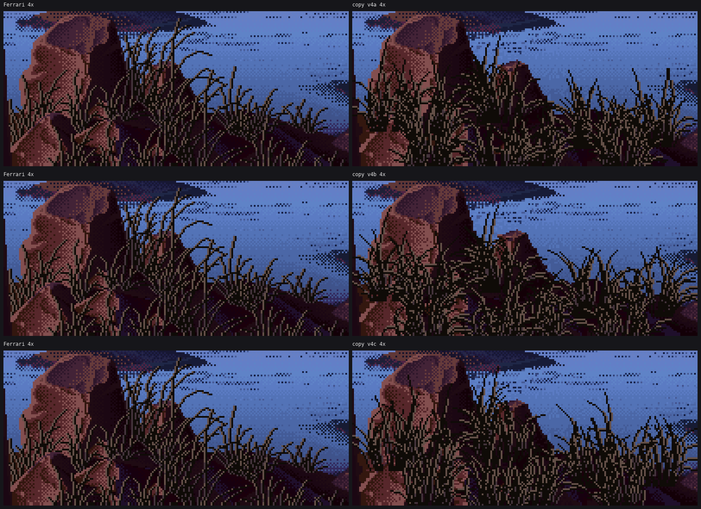
28. (tmp)Bash: Measure grass coverage stats and try sparser variants
cd ~/work/pixelart-studies/elements/steppe; python3 - <<'EOF'
import s0_tufts as s, sp, numpy as np
def stats(a):
g=np.isin(a,[49,50,51]); return g.mean(), (a==51).sum()/max(1,g.sum()), (a==50).sum()/max(1,g.sum())
d,idx,_=s.paint(0)
print('ferrari', stats(idx))
cells=[]
for i,p in enumerate([dict(n_per=18,len_mu=42,len_sd=16,wander=0.4,low_dark=0.35),
dict(n_per=14,len_mu=46,len_sd=18,wander=0.5,low_dark=0.4,bend=1.8)]):
d,idx,out=s.paint(3,p); pal=d['pal']; print(i,stats(out))
sp.save(sp.hstack([sp.upscale(pal[idx],4),sp.upscale(pal[out],4)],['Ferrari 4x',f'copy v5{"ab"[i]} 4x']),f'stage0/c1_tufts_v5{"ab"[i]}_4x.png')
EOF
# output:
ferrari (0.2513888888888889, 0.278232044198895, 0.13701657458563535)
0 (0.30544444444444446, 0.2530010913059294, 0.04638050200072754)
1 (0.3091111111111111, 0.2785765636232926, 0.026779295470884257)Read: elements/steppe/stage0/c1_tufts_v5b_4x.png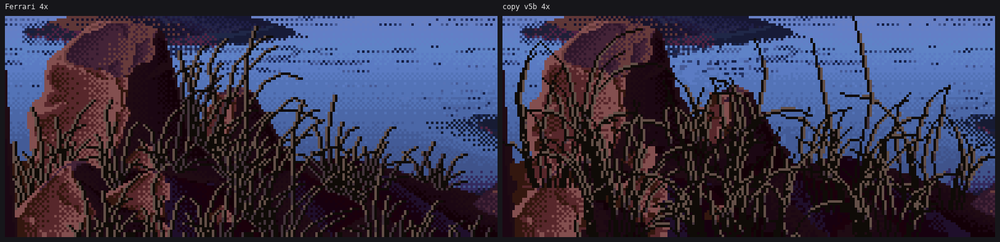
29. elements/steppe/stage0/c1_tufts_v5b_4x.pngBash: Read photo index and seasons guide for dry east
cd ~/work/naturalist/plants; grep -n -i -B1 -A4 "steppe\|sage\|ponderosa\|palouse\|coulee\|bunch\|balsam\|larch" photos/INDEX.md | head -120; echo ====; grep -n -i -A3 "east\|steppe\|sage\|ponderosa\|cheat\|bunch" 10-seasons.md | head -100; ls data/ | head # output: Exit code 1 60-| `krummholz_treeline/` | `openverse_pruned_by_the_wind_at_treeline...`, `openverse_Krummholz_Formation...` | 61:| `larch_autumn_North_Cascades/`, `subalpine_larch_Enchantments/` | all the Ingalls/Liberty Bell frames: gold larch on granite | 62-| `Mima_mounds_prairie_camas/` | `commons_Mound_side...` (reindeer lichen on a mound), `commons_Open_mounds...` (golden-hour mounds), `commons_Mima_mounds_at_Rocky_Prairie...` (broom yellow); **ignore `Mimas_Cassini`** (a moon of Saturn) | 63- 64-## Coast and Salish Sea 65- -- 83-|---|---| 84:| `ponderosa_pine_forest_eastern_Washington/` | `commons_Ponderosa_Pine_Western_Larch_forest...`, the prescribed-fire frames (open pine on grass), the 1939 B/W tree-class photos | 85:| `ponderosa_pine_bark_orange/` | the three close bark frames (jigsaw plates) | 86:| `sagebrush_steppe_Washington/` | `commons_Sagebrush_steppe_Coulee_City_Washington...`, `openverse_Hungate_Canyon_Moses_Coulee...`, `openverse_Cowiche_Canyon...` (grass widows), `openverse_Columbia_Plateau_Cactus_with_Hooker_s_balsamroot...` | 87:| `cheatgrass_purple_spring/` | `openverse_Bromus_tectorum...` (the plant), the steppe-with-butte frame | 88-| `bitterroot_Lewisia_rediviva/` | all good | 89:| `Palouse_Steptoe_Butte_view/`, `Palouse_hills_wheat/` | all the Steptoe Butte frames (green and gold bands on the loess hills); the ASTER false-colour image is not a photo | 90:| `Dry_Falls_coulee_Washington/`, `Moses_Coulee_basalt/` | `commons_Grand_coulee_below_dry_falls...`, `openverse_Umatilla_Rock_Trail...`, the Moses Coulee cliff and colonnade frames | (eval):1: === not found
Bash: Read seasons guide east-side entries
cd ~/work/naturalist/plants; grep -n -i -A2 "east\|steppe\|sage\|ponderosa\|cheat\|bunch" 10-seasons.md | head -80; ls data/; ls photos | grep -i -E "moses|dry_falls|cheat|bitter|palouse" # output: 1:# A year of plants: seasonal change in western Washington (and how it shifts east and uphill) 2- 3-*Plant ecology desk. Field guide 10. Written 2026-09-25. Calendar for the lower Skokomish and -- 9: big colour swings of an eastern-US or European broadleaf forest don't happen. Seasonal change 10- is carried by **the broadleaf minority** (alder, maple, cottonwood, willow, vine maple), **the 11- understory**, **the grass**, **moss**, **snow on the hills**, and **light**. -- 37:| **October** | **bigleaf maple butter-yellow** (peak mid to late October in the lowland), **cottonwood clear yellow**, **vine maple red-orange**, bracken rust; larches gold on the east side (early to mid October); mushrooms everywhere; rains green the grass again; salmon runs (animals desk) | yellow strips along rivers and yellow clouds of maple on slopes against black-green conifers: the most painterly month | 38-| **November** | storms strip the maples; **alder leaves drop green-brown** without turning; floods begin; moss revives | wet, dark, grey; bare branches; leaf mats on roads | 39-| **December** | the darkest weeks; winter storms; snow line moving up and down the hills | low-contrast grey-blue light, mist in the valleys, dark forest | -- 49:| east of the Cascades | cold winters (snow cover December to February), hot dry summers; steppe green March to May and straw by July; ponderosa pine needles stay; larch gold in October, aspen gold in late September to October (guide 09) | 50- 51-## 3. For the sim -- 83: hollows, red vine maple in the understory, gold larch on the east slope. 84-- **November:** everything wet and dark, leaf litter plastered on the ground, rivers high and 85- brown. LF2024_EVC.csv LF2024_EVH.csv LF2024_EVT.csv crop_cushman_south_2m.png crop_cushman_south_2m_q.png crop_skok_valley_2m.png crop_skok_valley_2m_q.png ext_chm2.npy ext_dem10.npy ext_lf_EVC.tif ext_lf_EVH.tif ext_lf_EVT.tif ext_standclass.png lf_EVC.tif lf_EVC_rat.json lf_EVH.tif lf_EVH_rat.json lf_EVT.tif lf_EVT_rat.json oly_evt.tif tile_chm10max.npy tile_chm2.npy tile_chm_10m.png tile_dem10.npy tile_slope10.npy tile_standclass.png tile_wc10.npy transect_evt.tif wa_transect_47_6N.png Dry_Falls_coulee_Washington Moses_Coulee_basalt Palouse_Steptoe_Butte_view Palouse_hills_wheat bitterroot_Lewisia_rediviva cheatgrass_purple_spring
Read: naturalist/plants/photos/Moses_Coulee_basalt/_sheet.jpg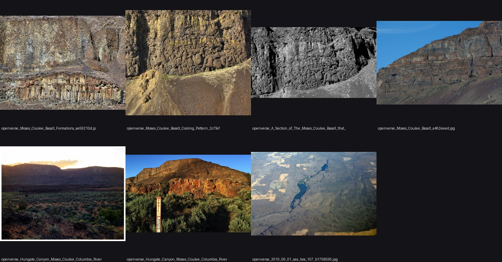
30. naturalist/plants/photos/Moses_Coulee_basalt/_sheet.jpgRead: naturalist/plants/photos/cheatgrass_purple_spring/_sheet.jpg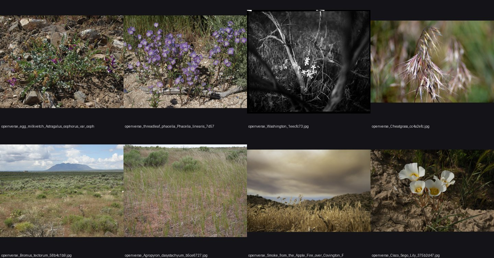
31. naturalist/plants/photos/cheatgrass_purple_spring/_sheet.jpgBash: List Moses Coulee photos
ls ~/work/naturalist/plants/photos/Moses_Coulee_basalt/ ~/work/naturalist/plants/photos/Palouse_hills_wheat | head -30 # output: ~/work/naturalist/plants/photos/Moses_Coulee_basalt/: _sheet.jpg openverse_2010_09_01_sea_bos_107_b1758595.jpg openverse_A_Section_of_The_Moses_Coulee_Basalt_that_reveal_63270b7e.jpg openverse_Hungate_Canyon_Moses_Coulee_Columbia_River_Plate_2a4bea96.jpg openverse_Hungate_Canyon_Moses_Coulee_Columbia_River_Plate_35216bab.jpg openverse_Moses_Coulee_Basalt_Cooling_Pattern_2c7fefe6.jpg openverse_Moses_Coulee_Basalt_Formations_ae59210d.jpg openverse_Moses_Coulee_Basalt_a462eeed.jpg sources.tsv ~/work/naturalist/plants/photos/Palouse_hills_wheat: _sheet.jpg commons_Old_Barn_in_the_Palouse_Hills_circa_1960s_Moscow_fb48efa9.jpg commons_Palouse_WA_ASTER_jpg_674e4919.jpg commons_Palouse_hills_northeast_of_Walla_Walla_jpg_d3d1157f.jpg openverse_Church_Wheat_Fields_4069_A_19646158.jpg openverse_Dene_s_Tree_08a4e1f9.jpg openverse_Of_Lights_and_Shadows_1090f978.jpg openverse_Sea_Of_Wheat_33c54e9f.jpg openverse_The_Red_Barn_in_Palouse_9c8a6a76.jpg sources.tsv
Read: naturalist/plants/photos/Moses_Coulee_basalt/openverse_Hungate_Canyon_Moses_Coulee_Columbia_River_Plate_35216bab.jpg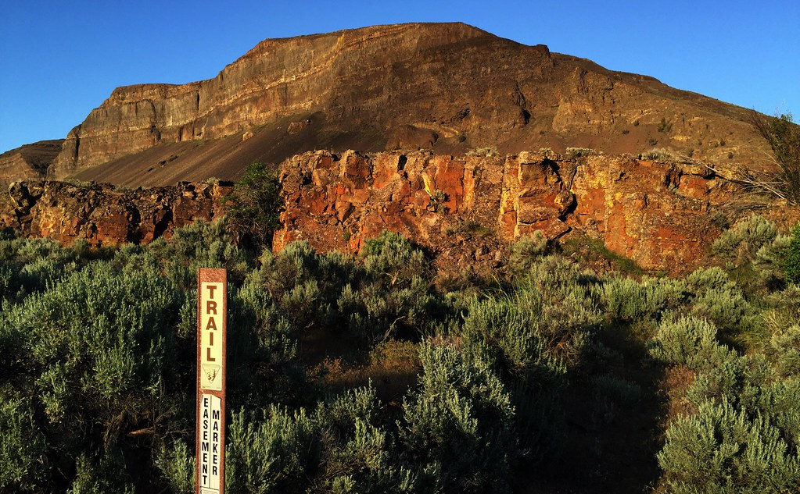
32. naturalist/plants/photos/Moses_Coulee_basalt/openverse_Hungate_Canyon_Moses_Coulee_Columbia_River_Plate_35216bab.jpgWrite: elements/steppe/sage.py
"""sage: big sagebrush (Artemisia tridentata), and bitterbrush as a variant.
A sage bush, read from the photos (Coulee City, Hungate Canyon, Seedskadee):
- a few thick, twisted, shreddy grey trunks splay from one root crown and fork upward;
- the leaves are tiny and grey, massed at the branch ends into soft rounded lobes; the lobes
crowd at the top and thin out below, so the trunks show through near the ground;
- the silhouette is lumpy (the lobes), and each lobe's top is feathered by upright twig tips
(and, from August, by upright flower stalks);
- lit lobes are pale and warm, shadowed lobes a cool blue-grey; the grain is upright.
Construction (index canvas, material SAGE steps 0..5, SAGESTEM steps 0..3):
1. trunks: twisted clean-run lines from the crown to each lobe;
2. lobes: ellipses, top-heavy, painted back to front; light per pixel = lobe normal blended
with the whole-bush normal, minus an occlusion band under each lobe (the clump grammar);
3. marks: upright grain (anisotropic noise) added in step space, quantized stochastically;
4. fringe: upright 1x2-1x3 ticks along each lobe's top, lit on the sun side.
"""
import numpy as np
from scipy import ndimage as ndi
import sp
from sp import SAGE, SAGESTEM
NS = 6 # SAGE steps: 0 core | 1 shadow | 2 reflected || 3 halftone | 4 light | 5 top light
def sun_vec(az, el):
"""az: 0 = sun on the LEFT, 90 = behind viewer, 180 = right, 270 = behind the subject.
Returns (x right, y up, z toward viewer)."""
a, e = np.radians(az), np.radians(el)
v = np.array([-np.cos(a) * np.cos(e), np.sin(e), np.sin(a) * np.cos(e)])
return v / np.linalg.norm(v)
class SageParams(dict):
DEFAULT = dict(
w=48, h=36, # bush size in px (envelope)
lobes=None, # number of lobes (None: from size)
lobe_r=0.20, # lobe radius as a fraction of width
density=0.8, # 0..1: how full the crown is (fewer lobes, more trunk when low)
base_open=0.35, # fraction of height at the bottom where lobes thin out
trunks=3,
grain=0.9, # amplitude of upright grain in steps
fringe=0.55, # probability of an upright tick per lobe-top pixel
stalks=0.0, # autumn flower stalks: 0..1
big_form=0.45, # weight of the whole-bush normal against the lobe normal
ambient=0.18,
occl=1.3, # depth of the dark band under each lobe (steps)
az=35, el=40,
kind="sage", # "sage" | "bitter" (bitterbrush: darker, greener, more open, twiggier)
winter_snow=0.0, # snow caps on lobe tops: 0..1
)
def __init__(self, **kw):
super().__init__(self.DEFAULT)
self.update(kw)
def paint_bush(p, rng, pad=6):
"""Paint one bush into its own canvas. Returns (canvas, base_x, base_y) where base is the
root crown pixel (for placing on the ground)."""
w, h = p["w"], p["h"]
W, H = int(w + 2 * pad + 4), int(h + 2 * pad + 6)
cv = sp.Canvas(W, H)
cx, gy = W / 2.0 + rng.normal(0, w * 0.03), H - pad # root crown and ground line
L = sun_vec(p["az"], p["el"])
bitter = p["kind"] == "bitter"
# --- lobes: sample centres inside a lumpy dome
area = w * h
r0 = max(1.5, p["lobe_r"] * w)
n = p["lobes"] or int(np.clip(area / (np.pi * r0 * r0) * 1.7 * (0.35 + 0.65 * p["density"]), 3, 90))
lobes = []
tries = 0
while len(lobes) < n and tries < n * 60:
tries += 1
u = rng.uniform(-1, 1)
v = rng.uniform(0, 1) # 0 ground .. 1 top
env = np.sqrt(max(0.0, 1 - u * u)) ** 0.7 # dome height at u
if v > env:
continue
# thin out low lobes (the trunks show) and in the middle-low interior
if v < p["base_open"] and rng.random() > (v / p["base_open"]) ** 1.5 * p["density"]:
continue
r = r0 * rng.uniform(0.65, 1.25) * (0.75 + 0.35 * v)
x = cx + u * (w / 2 - r * 0.6)
y = gy - v * (h - r * 0.8) - r * 0.35
z = np.sqrt(max(0.0, 1 - u * u - (1 - v) ** 2 * 0.3)) + rng.normal(0, 0.15)
lobes.append([x, y, r, z, u, v])
lobes.sort(key=lambda l: l[3]) # back to front
# --- trunks: from the crown, forking toward the lobes; drawn first (behind lobes)
trunk_tops = []
nt = p["trunks"] + (1 if bitter else 0)
for t in range(nt):
ang = (t - (nt - 1) / 2) * 0.45 + rng.normal(0, 0.12)
ln = h * rng.uniform(0.35, 0.6)
pts = sp.arc_points(cx + rng.normal(0, 1.0), gy, ang, ln, rng.normal(0, 0.5), nseg=3)
trunk_tops.append(pts[-1])
pix = sp.polyline_clean(pts)
for i, (x, y) in enumerate(pix):
thick = 2 if i < len(pix) * 0.45 and w > 26 else 1
for k in range(thick):
cv.px(x + k, y, SAGESTEM, 1 if k == 0 else 2)
# twigs from trunk tops to lobe centres
for lb in lobes:
if rng.random() > 0.8:
continue
tx, ty = min(trunk_tops, key=lambda q: (q[0] - lb[0]) ** 2 + (q[1] - lb[1]) ** 2)
if ty < lb[1]:
continue
pix = sp.polyline_clean([(tx, ty), ((tx + lb[0]) / 2 + rng.normal(0, 1.5), (ty + lb[1]) / 2),
(lb[0], lb[1])])
for x, y in pix:
cv.px(x, y, SAGESTEM, 1 if rng.random() < 0.7 else 0)
# --- light field for the lobes
Y, X = np.mgrid[0:H, 0:W].astype(float)
step_f = np.full((H, W), -1.0)
owner = np.full((H, W), -1, int)
grain = sp.value_noise((H, W), 1.0, rng) * 0.5 + 0.5 * _aniso(H, W, rng)
for i, (x, y, r, z, u, v) in enumerate(lobes):
ry = r * (0.78 if not bitter else 0.9)
dx, dy = (X - x) / r, (Y - y) / ry
# lumpy edge: radius modulated by angle noise
ang = np.arctan2(dy, dx)
lump = 1 + 0.16 * np.sin(3 * ang + rng.uniform(0, 6.28)) + 0.10 * np.sin(5 * ang + rng.uniform(0, 6.28))
d2 = dx * dx + dy * dy
inside = d2 <= lump ** 2
if not inside.any():
continue
nz = np.sqrt(np.clip(1 - d2 / lump ** 2, 0, 1))
nloc = np.stack([dx / lump, -dy / lump, nz], -1)
# big-form normal of the whole bush (a dome)
bu = (X - cx) / (w / 2)
bv = (gy - Y) / h
nbig = np.stack([bu, np.clip(bv * 1.2 - 0.1, -0.2, 1.2), 0.6 + 0 * bu], -1)
nbig /= np.linalg.norm(nbig, axis=-1, keepdims=True)
nn = nloc * (1 - p["big_form"]) + nbig * p["big_form"]
nn /= np.linalg.norm(nn, axis=-1, keepdims=True)
lit = np.clip(nn @ L, 0, 1)
# self shadow / occlusion: lower lobes are in the shade of the ones above
occ = 0.25 * (1 - v)
val = p["ambient"] + (1 - p["ambient"]) * lit - occ
s = 0.3 + val * (NS - 0.6)
# the clump grammar: a dark band along the lobe's lower edge
band = np.clip((dy - 0.35) / 0.65, 0, 1) * p["occl"]
s = s - band
s = s + p["grain"] * (grain - 0.5) * 2
step_f[inside] = s[inside]
owner[inside] = i
lobe_mask = owner >= 0
# quantize with a stochastic dither: organic material
q = np.clip(sp.quantize(step_f, ordered=False, rng=rng), 0, NS - 1)
if bitter:
q = np.clip(q - (rng.random(q.shape) < 0.25), 0, NS - 1)
cv.put(lobe_mask, SAGE, q)
# --- holes: bitterbrush and sparse sage let the stems show inside the crown
hole_p = (0.10 if bitter else 0.03) + 0.10 * (1 - p["density"])
holes = lobe_mask & (rng.random((H, W)) < hole_p) & (q <= 2)
holes = ndi.binary_dilation(holes, [[0, 1, 0], [0, 1, 0], [0, 1, 0]]) & lobe_mask
cv.mat[holes] = 0
# --- fringe: upright ticks on lobe tops (the feathery sage edge)
top_edge = lobe_mask & ~np.roll(lobe_mask, 1, 0)
ys, xs = np.nonzero(top_edge)
sun_right = L[0] > 0
for y, x in zip(ys, xs):
if rng.random() > p["fringe"]:
continue
ln = 1 + (rng.random() < 0.45) + (rng.random() < 0.12)
side = (x - cx) * (1 if sun_right else -1)
stp = int(np.clip(q[y, x] + (1 if side > 0 else 0), 1, NS - 1))
for k in range(1, ln + 1):
cv.px(x, y - k, SAGE, stp if k < ln else max(1, stp - 1))
# --- flower stalks (Aug-Oct): upright pale spikes rising from the crown top
if p["stalks"] > 0:
ns = int(p["stalks"] * w * 0.5)
for _ in range(ns):
lb = lobes[int(rng.integers(len(lobes)))] if lobes else None
if lb is None or lb[5] < 0.5:
continue
x0 = int(lb[0] + rng.normal(0, lb[2] * 0.5))
col = lobe_mask[:, x0] if 0 <= x0 < W else None
if col is None or not col.any():
continue
y0 = int(np.argmax(col))
ln = int(rng.integers(2, 5 + int(w / 20)))
for k in range(ln):
cv.px(x0 + (1 if k > ln * 0.7 and rng.random() < 0.3 else 0), y0 - k,
sp.FLOWER, 1 if k % 2 == 0 else 0)
# --- snow on lobe tops
if p["winter_snow"] > 0:
for y, x in zip(ys, xs):
if rng.random() < p["winter_snow"]:
for k in range(0, 1 + (rng.random() < 0.5)):
if 0 <= y + k < H and lobe_mask[y + k, x]:
cv.mat[y + k, x] = sp.SNOW
cv.step[y + k, x] = 2 if q[y + k, x] >= 3 else 1
return cv, int(round(cx)), int(gy), lobes
def _aniso(H, W, rng):
"""Upright grain: noise stretched vertically (sage twigs and leaf clusters point up)."""
n = rng.random((H // 3 + 3, W + 2))
Yi = np.arange(H) / 3.0
Xi = np.arange(W).astype(float)
YY, XX = np.meshgrid(Yi, Xi, indexing="ij")
return ndi.map_coordinates(n, [YY, XX], order=1, mode="reflect")
Write: elements/steppe/s1_sage.py
"""Stage 1: one sagebrush in greyscale. Photo | ours 4x | ours 1x."""
import sys, numpy as np
from PIL import Image
import sp, sage
GREY = {
sp.SAGE: [0.07, 0.15, 0.24, 0.43, 0.57, 0.70],
sp.SAGESTEM: [0.04, 0.13, 0.25, 0.38],
sp.GROUND: [0.30, 0.40, 0.50, 0.58, 0.66],
sp.SKY: [0.86],
sp.FLOWER: [0.5, 0.65],
sp.SNOW: [0.8, 0.9, 0.97],
}
class Grey:
def rgb(self, m, s, b):
r = GREY.get(m, [0.86])
v = r[min(s, len(r) - 1)]
return (int(v * 255),) * 3
def bush_on_ground(p, seed, W=None, H=None):
rng = np.random.default_rng(seed)
cv, bx, by, _ = sage.paint_bush(p, rng)
W = W or cv.w + 10
H = H or cv.h + 6
out = sp.Canvas(W, H)
out.mat[:] = sp.SKY
gy = H - 5
out.mat[gy:] = sp.GROUND
out.step[gy:] = 3
out.step[gy] = 1
out.blit(cv, W // 2 - bx, gy - by)
return out
if __name__ == "__main__":
tag = sys.argv[1] if len(sys.argv) > 1 else "a"
cells = []
for seed in range(4):
p = sage.SageParams(w=56, h=40)
cv = bush_on_ground(p, seed)
cells.append(sp.upscale(cv.render(Grey()), 4))
sp.save(sp.grid(cells, 4, title="stage 1: one sagebrush, greyscale, 4x (seeds 0-3)"),
f"stage1/s1_sage_{tag}.png")
Bash: Render first greyscale sagebrush
cd ~/work/pixelart-studies/elements/steppe; mkdir -p stage1; nice -n 10 python3 s1_sage.py a && echo ok # output: ok
Read: elements/steppe/stage1/s1_sage_a.png 33. elements/steppe/stage1/s1_sage_a.png
33. elements/steppe/stage1/s1_sage_a.png
Bash: Adjust skirt, trunk length, grain; rerender
cd ~/work/pixelart-studies/elements/steppe; python3 - <<'EOF'
s=open('sage.py').read()
s=s.replace(''' if v < p["base_open"] and rng.random() > (v / p["base_open"]) ** 1.5 * p["density"]:
continue''',''' # the skirt: low lobes survive at the sides, thin out in the middle (trunks show)
low = p["base_open"] * (1 - 0.8 * abs(u))
if v < low and rng.random() > (v / low) ** 1.5 * p["density"]:
continue''')
s=s.replace('ln = h * rng.uniform(0.35, 0.6)','ln = h * rng.uniform(0.25, 0.45)')
s=s.replace(''' holes = ndi.binary_dilation(holes, [[0, 1, 0], [0, 1, 0], [0, 1, 0]]) & lobe_mask''',''' holes = ndi.binary_dilation(holes, [[0, 0, 0], [0, 1, 0], [0, 1, 0]]) & lobe_mask''')
s=s.replace('n = rng.random((H // 3 + 3, W + 2))\n Yi = np.arange(H) / 3.0','n = rng.random((H // 2 + 3, W + 2))\n Yi = np.arange(H) / 2.0')
open('sage.py','w').write(s)
EOF
sed -i '' 's/p = sage.SageParams(w=56, h=40)/p = sage.SageParams(w=56, h=38, lobe_r=0.16, base_open=0.25)/' s1_sage.py
nice -n 10 python3 s1_sage.py b
# output:
(Bash completed with no output)Read: elements/steppe/stage1/s1_sage_b.png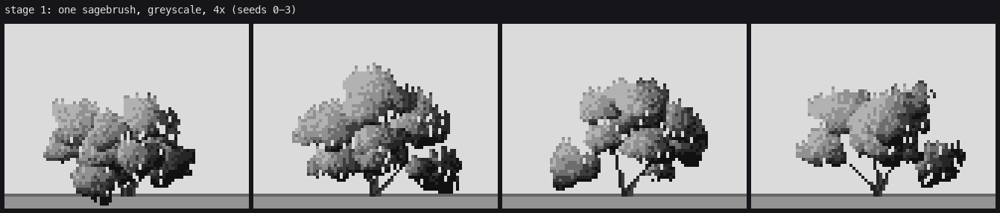
34. elements/steppe/stage1/s1_sage_b.pngBash: Downsample single sage photos to pixel scale
cd ~/work/pixelart-studies/elements/steppe; python3 - <<'EOF'
from PIL import Image
import numpy as np, sp
P='~/work/naturalist/plants/photos/'
crops=[(P+'Moses_Coulee_basalt/openverse_Hungate_Canyon_Moses_Coulee_Columbia_River_Plate_35216bab.jpg',(830,380,1023,600)),
(P+'Moses_Coulee_basalt/openverse_Hungate_Canyon_Moses_Coulee_Columbia_River_Plate_35216bab.jpg',(430,290,700,520)),
(P+'sagebrush_steppe_Washington/commons_Sagebrush_Sea_adjacent_to_Seedskadee_National_Wi_e3282a3f.jpg',(230,555,350,645)),
(P+'sagebrush_steppe_Washington/commons_Sagebrush_Sea_adjacent_to_Seedskadee_National_Wi_e3282a3f.jpg',(430,600,560,700)),
(P+'sagebrush_steppe_Washington/commons_Sagebrush_steppe_Coulee_City_Washington_jpg_c4dfe713.jpg',(620,0,1280,480))]
cells=[]
for f,b in crops:
im=Image.open(f).convert('RGB').crop(b)
s=im.resize((64,int(64*im.height/im.width)),Image.BOX)
a=np.array(s); a=sp.upscale(a,4)
big=np.array(im.resize((256,int(256*im.height/im.width)),Image.LANCZOS))
cells.append(sp.hstack([big,a],['photo','64px box-downsampled, 4x']))
for i,c in enumerate(cells): sp.save(c,f'refs/sage_ds_{i}.png')
EOF
echo done
# output:
doneBash: Stack downsampled sage references
cd ~/work/pixelart-studies/elements/steppe/refs; python3 -c "
from PIL import Image
ims=[Image.open(f'sage_ds_{i}.png') for i in range(5)]
W=max(i.width for i in ims); H=sum(i.height for i in ims)
o=Image.new('RGB',(W,H)); y=0
for i in ims: o.paste(i,(0,y)); y+=i.height
o.save('sage_ds_all.png'); print(o.size)"
# output:
(536, 1253)Read: elements/steppe/refs/sage_ds_all.png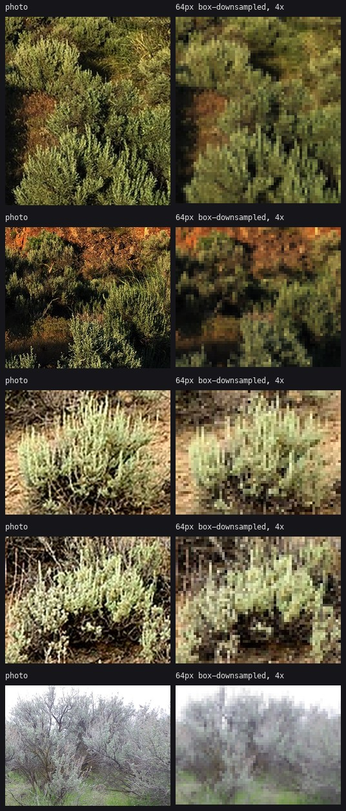
35. elements/steppe/refs/sage_ds_all.pngBash: View rest of sage.py
cd ~/work/pixelart-studies/elements/steppe; sed -n 160,215p sage.py
# output:
# --- holes: bitterbrush and sparse sage let the stems show inside the crown
hole_p = (0.10 if bitter else 0.03) + 0.10 * (1 - p["density"])
holes = lobe_mask & (rng.random((H, W)) < hole_p) & (q <= 2)
holes = ndi.binary_dilation(holes, [[0, 0, 0], [0, 1, 0], [0, 1, 0]]) & lobe_mask
cv.mat[holes] = 0
# --- fringe: upright ticks on lobe tops (the feathery sage edge)
top_edge = lobe_mask & ~np.roll(lobe_mask, 1, 0)
ys, xs = np.nonzero(top_edge)
sun_right = L[0] > 0
for y, x in zip(ys, xs):
if rng.random() > p["fringe"]:
continue
ln = 1 + (rng.random() < 0.45) + (rng.random() < 0.12)
side = (x - cx) * (1 if sun_right else -1)
stp = int(np.clip(q[y, x] + (1 if side > 0 else 0), 1, NS - 1))
for k in range(1, ln + 1):
cv.px(x, y - k, SAGE, stp if k < ln else max(1, stp - 1))
# --- flower stalks (Aug-Oct): upright pale spikes rising from the crown top
if p["stalks"] > 0:
ns = int(p["stalks"] * w * 0.5)
for _ in range(ns):
lb = lobes[int(rng.integers(len(lobes)))] if lobes else None
if lb is None or lb[5] < 0.5:
continue
x0 = int(lb[0] + rng.normal(0, lb[2] * 0.5))
col = lobe_mask[:, x0] if 0 <= x0 < W else None
if col is None or not col.any():
continue
y0 = int(np.argmax(col))
ln = int(rng.integers(2, 5 + int(w / 20)))
for k in range(ln):
cv.px(x0 + (1 if k > ln * 0.7 and rng.random() < 0.3 else 0), y0 - k,
sp.FLOWER, 1 if k % 2 == 0 else 0)
# --- snow on lobe tops
if p["winter_snow"] > 0:
for y, x in zip(ys, xs):
if rng.random() < p["winter_snow"]:
for k in range(0, 1 + (rng.random() < 0.5)):
if 0 <= y + k < H and lobe_mask[y + k, x]:
cv.mat[y + k, x] = sp.SNOW
cv.step[y + k, x] = 2 if q[y + k, x] >= 3 else 1
return cv, int(round(cx)), int(gy), lobes
def _aniso(H, W, rng):
"""Upright grain: noise stretched vertically (sage twigs and leaf clusters point up)."""
n = rng.random((H // 2 + 3, W + 2))
Yi = np.arange(H) / 2.0
Xi = np.arange(W).astype(float)
YY, XX = np.meshgrid(Yi, Xi, indexing="ij")
return ndi.map_coordinates(n, [YY, XX], order=1, mode="reflect")Write: elements/steppe/sage.py
"""sage: big sagebrush (Artemisia tridentata), and bitterbrush as a variant.
A sage bush, read from the photos (Coulee City, Hungate Canyon, Seedskadee), and from those photos
box-downsampled to 64 px (refs/sage_ds_all.png), which is the scale we paint at:
- a few thick, twisted, shreddy grey trunks splay from one root crown and fork upward;
- the leaves are tiny and grey, massed at the twig ends into UPRIGHT SPRAYS: at 64 px a bush is a
packed row of pale vertical tongues (2-3 px wide, rounded tops) with dark slots between them;
- the sprays gather into 3-7 clumps, so the silhouette is lumpy; each clump's crown is a row
of rounded finger tips; lower down the sprays thin and the dark stem tangle shows;
- lit sprays are pale and warm, shadowed ones a cool blue-grey.
Construction (index canvas; SAGE steps 0..5, SAGESTEM steps 0..3):
1. trunks: twisted clean-run lines from the crown to each clump (behind everything);
2. clump bodies: dark fill (steps 0-1) that shows in the slots between sprays;
3. sprays: upright capsules, painted far to near; each is lit on its cap and sun side and
darkens toward its base (the clump grammar at the spray scale); their light comes from the
clump normal blended with the whole-bush normal (the big form);
4. twig tips, autumn flower stalks and snow sit on the spray caps.
"""
import numpy as np
from scipy import ndimage as ndi
import sp
from sp import SAGE, SAGESTEM
NS = 6 # SAGE steps: 0 core | 1 shadow | 2 reflected || 3 halftone | 4 light | 5 top light
def sun_vec(az, el):
"""az: 0 = sun on the LEFT, 90 = behind viewer (front light), 180 = right,
270 = behind the subject (back light). Returns (x right, y up, z toward viewer)."""
a, e = np.radians(az), np.radians(el)
v = np.array([-np.cos(a) * np.cos(e), np.sin(e), np.sin(a) * np.cos(e)])
return v / np.linalg.norm(v)
class SageParams(dict):
DEFAULT = dict(
w=48, h=36, # bush size in px (envelope)
clumps=None, # number of clumps (None: from width)
density=0.8, # 0..1: spray fill (low: more slots, more stems)
spray_w=None, # spray width px (None: from size)
spray_h=0.45, # typical spray height as a fraction of clump height
base_open=0.28, # fraction of height at the bottom where sprays thin out
trunks=3,
big_form=0.55, # weight of the whole-bush normal against the clump normal
ambient=0.16,
fall=2.2, # steps a spray darkens from cap to base
noise=0.55, # step noise per pixel
tips=0.35, # 1-px twig tips above caps
stalks=0.0, # Aug-Oct flower stalks: 0..1
az=35, el=40,
kind="sage", # "sage" | "bitter"
snow=0.0, # snow on caps: 0..1
lean=0.35, # sprays fan outward
)
def __init__(self, **kw):
super().__init__(self.DEFAULT)
self.update(kw)
def _ellipse_top(cx, cy, rx, ry, x):
d = 1 - ((x - cx) / rx) ** 2
return cy - ry * np.sqrt(d) if d > 0 else None
def paint_bush(p, rng, pad=6):
"""Paint one bush into its own canvas. Returns (canvas, base_x, base_y, info) where base is
the root-crown pixel (for placing on the ground)."""
w, h = float(p["w"]), float(p["h"])
W, H = int(w + 2 * pad + 6), int(h + 2 * pad + 8)
cv = sp.Canvas(W, H)
cx, gy = W / 2.0 + rng.normal(0, w * 0.02), H - pad
L = sun_vec(p["az"], p["el"])
bitter = p["kind"] == "bitter"
sw = p["spray_w"] or (1 if w < 20 else 2 if w < 70 else 3)
# --- clumps: lumps of the dome
k = p["clumps"] or int(np.clip(round(w / 13 + rng.normal(0, 0.7)), 2, 8))
clumps = []
for i in range(k):
u = -0.78 + 1.56 * (i + rng.uniform(0.25, 0.75)) / k
env = np.sqrt(max(0.05, 1 - u * u)) ** 0.8
rx = w / k * rng.uniform(0.75, 1.05) + w * 0.08
top = gy - h * env * rng.uniform(0.82, 1.0)
bot = gy - h * (p["base_open"] * (1 - 0.6 * abs(u))) * rng.uniform(0.6, 1.1)
ry = (bot - top) / 2
clumps.append(dict(x=cx + u * w / 2 * 0.95, y=(top + bot) / 2, rx=rx * 0.62, ry=ry, u=u))
# a centre crown clump over them, if tall enough
if k >= 3 and rng.random() < 0.8:
clumps.append(dict(x=cx + rng.normal(0, w * 0.06), y=gy - h * 0.62, rx=w * 0.22,
ry=h * 0.36, u=0.0))
# --- trunks (behind)
for c in clumps:
pts = [(cx + rng.normal(0, 0.8), gy),
(cx + (c["x"] - cx) * 0.35 + rng.normal(0, 1.2), gy - (gy - c["y"]) * 0.45),
(c["x"] + rng.normal(0, 1.0), c["y"] + c["ry"] * 0.2)]
pix = sp.polyline_clean(pts)
for i, (x, y) in enumerate(pix):
thick = 2 if (i < len(pix) * 0.4 and w > 30) else 1
for t in range(thick):
cv.px(x + t, y, SAGESTEM, 1 + t)
# a few side twigs to the clump's lower edge (the tangle)
for _ in range(2 if not bitter else 4):
x0, y0 = pix[int(rng.integers(len(pix) // 3, len(pix)))]
ang = rng.normal(0, 0.8)
tw = sp.polyline_clean(sp.arc_points(x0, y0, ang, rng.uniform(3, 3 + w * 0.12),
rng.normal(0, 0.4), 2))
for x, y in tw:
cv.px(x, y, SAGESTEM, 0 if rng.random() < 0.5 else 1)
# --- clump bodies: the dark that shows between sprays
Y, X = np.mgrid[0:H, 0:W].astype(float)
body = np.zeros((H, W), bool)
for c in clumps:
ang = np.arctan2(Y - c["y"], X - c["x"])
lump = 1 + 0.10 * np.sin(4 * ang + rng.uniform(0, 6.28))
d = ((X - c["x"]) / c["rx"]) ** 2 + ((Y - c["y"]) / c["ry"]) ** 2
body |= d <= (0.86 * lump) ** 2
dark_step = np.where(Y > gy - h * 0.35, 0, 1)
cv.put(body, SAGE, dark_step)
# --- sprays
sprays = []
for ci, c in enumerate(clumps):
area = np.pi * c["rx"] * c["ry"]
n = int(area / (sw * max(3, c["ry"] * p["spray_h"] * 2)) * 2.4 * p["density"]) + 2
for _ in range(n):
x = c["x"] + rng.uniform(-1, 1) * c["rx"] * 0.95
top = _ellipse_top(c["x"], c["y"], c["rx"], c["ry"], x)
if top is None:
continue
top += abs(rng.normal(0, max(1.0, c["ry"] * 0.12)))
ln = max(2.0, c["ry"] * 2 * p["spray_h"] * rng.uniform(0.6, 1.4))
base = min(top + ln, c["y"] + c["ry"] * 0.9)
if base - top < 2:
base = top + 2
sprays.append((base, x, top, ci))
sprays.sort(key=lambda s: s[0]) # higher base = farther: paint first
for base, x, top, ci in sprays:
c = clumps[ci]
# normal at the spray cap: clump ellipsoid blended with the bush dome
nx = (x - c["x"]) / c["rx"]
ny = (c["y"] - top) / c["ry"]
nloc = np.array([nx, max(ny, 0.1), np.sqrt(max(0.0, 1 - nx * nx - ny * ny)) + 0.2])
bu = (x - cx) / (w / 2)
bv = (gy - top) / h
nbig = np.array([bu, bv * 1.3 - 0.15, 0.55])
nn = nloc / np.linalg.norm(nloc) * (1 - p["big_form"]) + nbig / np.linalg.norm(nbig) * p["big_form"]
nn /= np.linalg.norm(nn)
lit = max(0.0, float(nn @ L))
val = p["ambient"] + (1 - p["ambient"]) * lit
cap = 0.6 + val * (NS - 0.4) # continuous step at the cap
lean = p["lean"] * bu + rng.normal(0, 0.12)
ys = np.arange(int(round(top)), int(round(base)) + 1)
sunside = 1 if L[0] > 0 else -1
for j, y in enumerate(ys):
t = j / max(1, len(ys) - 1)
xx = x + lean * (base - y) * 0.35
wid = sw if j > 0 or sw == 1 else max(1, sw - 1) # rounded cap
s0 = cap - p["fall"] * t ** 1.2
for q in range(wid):
px = int(round(xx - (wid - 1) / 2 + q))
side = (q - (wid - 1) / 2) * sunside
s = s0 + (0.6 if side > 0 else -0.5 if side < 0 else 0) + (0.5 if j == 0 else 0)
s += rng.normal(0, p["noise"])
cv.px(px, y, SAGE, int(np.clip(np.floor(s + rng.random()), 0, NS - 1)))
# the slot: a dark pixel on the shadow side of the spray keeps it separate
if rng.random() < 0.55 and t > 0.15:
sx = int(round(xx - sunside * ((wid + 1) / 2)))
if 0 <= sx < W and cv.mat[y, sx] == SAGE:
cv.step[y, sx] = min(cv.step[y, sx], 1 if t < 0.6 else 0)
# --- bitterbrush: more open (holes onto the stems), spiky twig ends
if bitter:
m = cv.mat == SAGE
holes = m & (rng.random((H, W)) < 0.12) & (cv.step <= 2)
holes = ndi.binary_dilation(holes, [[0, 1, 0], [0, 1, 0], [0, 0, 0]]) & m
cv.mat[holes] = 0
# --- twig tips, stalks, snow on the caps
m = cv.mat == SAGE
capmask = m & ~np.vstack([np.zeros((1, W), bool), m[:-1]])
ys, xs = np.nonzero(capmask)
for y, x in zip(ys, xs):
if rng.random() < p["tips"] * (1.8 if bitter else 1.0):
ln = 1 + (rng.random() < (0.5 if bitter else 0.25))
dx = int(np.sign(x - cx)) if (bitter and rng.random() < 0.5) else 0
for kk in range(1, ln + 1):
cv.px(x + (dx if kk == ln else 0), y - kk,
SAGESTEM if (bitter and kk == ln) else SAGE,
int(max(1, cv.step[y, x] - 1)) if not bitter else 1)
if p["stalks"] > 0:
for y, x in zip(ys, xs):
if y < gy - h * 0.5 and rng.random() < p["stalks"] * 0.18:
ln = int(rng.integers(2, 4 + int(w / 16)))
for kk in range(1, ln + 1):
cv.px(x, y - kk, sp.FLOWER, 1 if (kk % 2 == 1) else 0)
if p["snow"] > 0:
for y, x in zip(ys, xs):
if rng.random() < p["snow"]:
for kk in range(0, 1 + (rng.random() < 0.4 * p["snow"])):
if 0 <= y + kk < H and cv.mat[y + kk, x] == SAGE:
lit_here = cv.step[y + kk, x] >= 3
cv.mat[y + kk, x] = sp.SNOW
cv.step[y + kk, x] = 2 if lit_here else 1
return cv, int(round(cx)), int(gy), dict(clumps=clumps, sprays=len(sprays))
Bash: Render spray-model sagebrush
cd ~/work/pixelart-studies/elements/steppe; sed -i '' 's/p = sage.SageParams(w=56, h=38, lobe_r=0.16, base_open=0.25)/p = sage.SageParams(w=56, h=38)/' s1_sage.py; nice -n 10 python3 s1_sage.py c # output: (Bash completed with no output)
Read: elements/steppe/stage1/s1_sage_c.png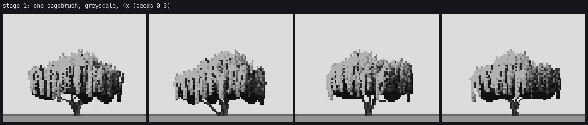
36. elements/steppe/stage1/s1_sage_c.pngBash: Distribute spray caps through clump depth
cd ~/work/pixelart-studies/elements/steppe; python3 - <<'EOF'
s=open('sage.py').read()
s=s.replace(''' top += abs(rng.normal(0, max(1.0, c["ry"] * 0.12)))''',''' # sprays nearer the viewer have their caps lower down the clump
bot = c["y"] + c["ry"] * np.sqrt(max(0.0, 1 - ((x - c["x"]) / c["rx"]) ** 2))
top += (bot - top) * rng.random() ** p["cap_bias"] * 0.8''')
s=s.replace(''' sprays.append((base, x, top, ci))
sprays.sort(key=lambda s: s[0]) # higher base = farther: paint first''',''' sprays.append((base, x, top, ci))
sprays.sort(key=lambda s: s[2]) # higher cap = farther: paint first''')
s=s.replace(''' base_open=0.28,''',''' base_open=0.16,
cap_bias=1.8, # >1: caps crowd toward the clump tops''')
s=s.replace(''' base = min(top + ln, c["y"] + c["ry"] * 0.9)''',''' base = min(top + ln, bot)''')
open('sage.py','w').write(s)
EOF
nice -n 10 python3 s1_sage.py d
# output:
(Bash completed with no output)Read: elements/steppe/stage1/s1_sage_d.png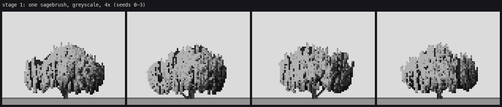
37. elements/steppe/stage1/s1_sage_d.pngBash: Add 8x photo comparison; reduce spray noise
cd ~/work/pixelart-studies/elements/steppe; python3 - <<'EOF'
s=open('s1_sage.py').read()
s=s.replace(''' sp.save(sp.grid(cells, 4, title="stage 1: one sagebrush, greyscale, 4x (seeds 0-3)"),
f"stage1/s1_sage_{tag}.png")''',''' sp.save(sp.grid(cells, 4, title="stage 1: one sagebrush, greyscale, 4x (seeds 0-3)"),
f"stage1/s1_sage_{tag}.png")
# photo (box-downsampled to the same scale, greyscale) | ours, 8x
from PIL import Image
ph = Image.open(sp.HERE + "/refs/sage_ds_2.png").convert("L")
ph = np.array(ph)[26:, 264:]
ph = np.stack([ph] * 3, -1)[:, :, :]
ph = ph[::4, ::4]
p = sage.SageParams(w=56, h=38)
ours = bush_on_ground(p, 0).render(Grey())
sp.save(sp.hstack([sp.upscale(ph, 8), sp.upscale(ours, 8)], ["photo, 64px box, grey, 8x", "ours 8x"]),
f"stage1/s1_sage_{tag}_8x.png")''')
open('s1_sage.py','w').write(s)
EOF
python3 - <<'EOF'
s=open('~/work/pixelart-studies/elements/steppe/sage.py').read()
s=s.replace("noise=0.55,","noise=0.25,")
open('~/work/pixelart-studies/elements/steppe/sage.py','w').write(s)
EOF
nice python3 s1_sage.py e
# output:
(Bash completed with no output)Read: elements/steppe/stage1/s1_sage_e_8x.png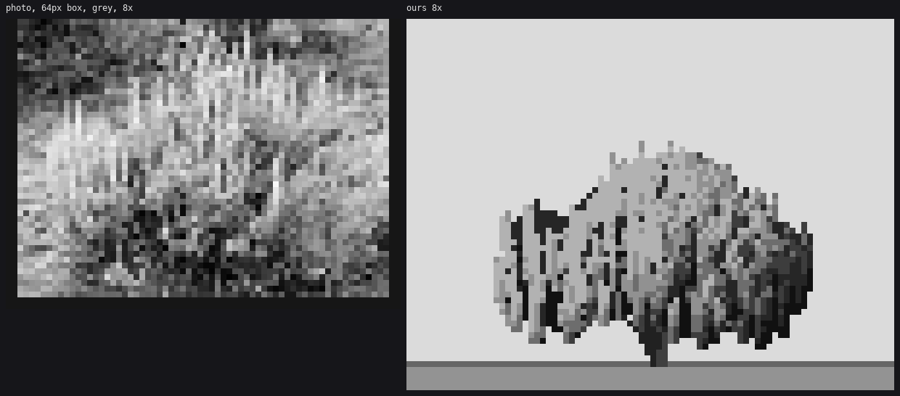
38. elements/steppe/stage1/s1_sage_e_8x.pngBash: Locate body fill code
cd ~/work/pixelart-studies/elements/steppe; grep -n "dark_step" sage.py # output: 122: dark_step = np.where(Y > gy - h * 0.35, 0, 1) 123: cv.put(body, SAGE, dark_step)
Bash: Shade body by big form; shorter sprays
cd ~/work/pixelart-studies/elements/steppe; python3 - <<'EOF'
s=open('sage.py').read()
s=s.replace(''' dark_step = np.where(Y > gy - h * 0.35, 0, 1)
cv.put(body, SAGE, dark_step)''',''' # the body carries the big form in the low steps (0..body_max); the sprays carry the light
bu = (X - cx) / (w / 2)
bv = (gy - Y) / h
nb = np.stack([bu, bv * 1.3 - 0.15, 0.55 + 0 * bu], -1)
nb /= np.linalg.norm(nb, axis=-1, keepdims=True)
val = p["ambient"] + (1 - p["ambient"]) * np.clip(nb @ L, 0, 1)
bs = val * (p["body_max"] + 0.9) - np.clip((0.3 - bv) / 0.3, 0, 1) * 1.2
bq = np.clip(sp.quantize(bs, ordered=False, rng=rng), 0, p["body_max"])
cv.put(body, SAGE, bq)''')
s=s.replace(" lean=0.35, # sprays fan outward"," lean=0.35, # sprays fan outward\n body_max=2, # highest step the body (between sprays) reaches")
s=s.replace("spray_h=0.45,","spray_h=0.20,")
s=s.replace("* 2.4 * p[\"density\"]) + 2","* 1.6 * p[\"density\"]) + 2")
open('sage.py','w').write(s)
EOF
nice python3 s1_sage.py f
# output:
(Bash completed with no output)Read: elements/steppe/stage1/s1_sage_f.png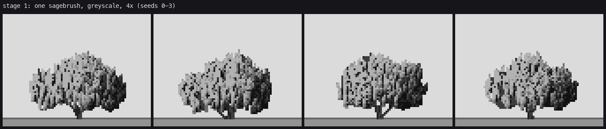
39. elements/steppe/stage1/s1_sage_f.pngBash: Add terminator value families to sprays
cd ~/work/pixelart-studies/elements/steppe; python3 - <<'EOF'
s=open('sage.py').read()
s=s.replace(''' val = p["ambient"] + (1 - p["ambient"]) * lit
cap = 0.6 + val * (NS - 0.4) # continuous step at the cap''',''' # two light families that never touch: shadow sprays live in steps 1-2, lit in 3-5
if lit < p["term"]:
cap = 1.0 + 1.6 * (lit / p["term"]) + p["ambient"]
else:
cap = 3.2 + 2.3 * (lit - p["term"]) / (1 - p["term"])''')
s=s.replace(" body_max=2,"," body_max=2,\n term=0.28, # terminator: light below this is the shadow family")
s=s.replace("density=0.8,","density=0.6,").replace("cap_bias=1.8,","cap_bias=2.6,")
open('sage.py','w').write(s)
EOF
nice python3 s1_sage.py g
# output:
(Bash completed with no output)Read: elements/steppe/stage1/s1_sage_g.png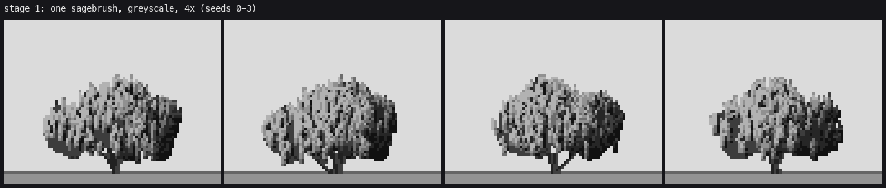
40. elements/steppe/stage1/s1_sage_g.pngBash: Put bush on ground with cast shadow and contact
cd ~/work/pixelart-studies/elements/steppe; python3 - <<'EOF'
s=open('s1_sage.py').read()
s=s.replace(''' out.mat[:] = sp.SKY
gy = H - 5
out.mat[gy:] = sp.GROUND
out.step[gy:] = 3
out.step[gy] = 1
out.blit(cv, W // 2 - bx, gy - by)
return out''',''' out.mat[:] = sp.GROUND
rng2 = np.random.default_rng(seed + 100)
out.step[:] = np.where(rng2.random((H, W)) < 0.12, 2, 3)
gy = H - 5
ox, oy = W // 2 - bx, gy - by
# cast shadow: the bush mask, flattened onto the ground away from the sun, ground 2 steps down
m = cv.mat > 0
ys, xs = np.nonzero(m)
sx = 1 if p["az"] < 90 else -1
for y, x in zip(ys, xs):
hgt = by - y
X = x + ox + sx * int(hgt * 0.9) + sx * 2
Y = gy - int(hgt * 0.22)
for dx in (0, 1):
if 0 <= Y < H and 0 <= X + dx < W and out.mat[Y, X + dx] == sp.GROUND:
out.step[Y, X + dx] = min(out.step[Y, X + dx], 1)
out.blit(cv, ox, oy)
# contact: darkest line along the foot
for x in range(W):
col = np.nonzero(cv.mat[:, x - ox] > 0)[0] if 0 <= x - ox < cv.w else []
if len(col) and col.max() + oy >= gy - 3:
out.px(x, gy + 1, sp.GROUND, 0)
return out''')
s=s.replace("sp.SKY: [0.86],","sp.SKY: [0.86],")
s=s.replace("sp.GROUND: [0.30, 0.40, 0.50, 0.58, 0.66],","sp.GROUND: [0.18, 0.30, 0.52, 0.60, 0.66],")
open('s1_sage.py','w').write(s)
EOF
nice python3 s1_sage.py h
# output:
(Bash completed with no output)Read: elements/steppe/stage1/s1_sage_h.png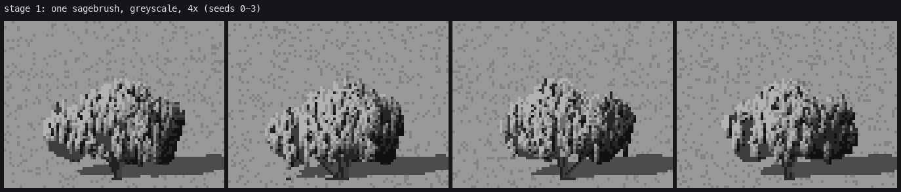
41. elements/steppe/stage1/s1_sage_h.pngBash: Render one bush at 8x
cd ~/work/pixelart-studies/elements/steppe; python3 -c " import s1_sage as s, sage, sp cv=s.bush_on_ground(sage.SageParams(w=56,h=38),1) sp.save(cv.render(s.Grey()),'stage1/s1_sage_h_one_8x.png',8)" # output: (Bash completed with no output)
Read: elements/steppe/stage1/s1_sage_h_one_8x.png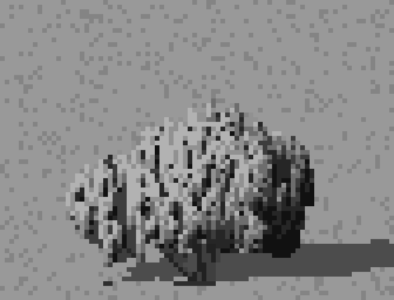
42. elements/steppe/stage1/s1_sage_h_one_8x.pngBash: Find spray section boundaries
cd ~/work/pixelart-studies/elements/steppe; grep -n "# --- sprays" sage.py; grep -n "# --- bitterbrush" sage.py # output: 134: # --- sprays 191: # --- bitterbrush: more open (holes onto the stems), spiky twig ends
Bash: Add field-mode sage marks and render
cd ~/work/pixelart-studies/elements/steppe; python3 - <<'EOF'
s=open('sage.py').read()
a=s.index(" # --- clump bodies: the dark that shows between sprays")
b=s.index(" # --- bitterbrush: more open")
body=s[a:b]
s=s[:a]+''' if p["mode"] == "field":
_field_marks(cv, clumps, p, rng, cx, gy, w, h, L, sw)
sprays = []
else:
sprays = _spray_marks(cv, clumps, p, rng, cx, gy, w, h, L, sw, W, H)
'''+s[b:]
# make old code a function
body=body.replace("\n ","\n ")
fn='''
def _spray_marks(cv, clumps, p, rng, cx, gy, w, h, L, sw, W, H):
if True:
'''+" "+body.lstrip()+" return sprays\n"
s=s+fn+'''
def _field_marks(cv, clumps, p, rng, cx, gy, w, h, L, sw):
"""Form field + marks (Ferrari's way): a continuous step field from the clumps (lit caps,
dark bands where one clump tucks under the next), quantized; then upright marks: dark slots
in the light, pale flecks in the shadow; then finger tips along the crest."""
H, W = cv.h, cv.w
Y, X = np.mgrid[0:H, 0:W].astype(float)
f = np.full((H, W), -9.0)
bu = (X - cx) / (w / 2)
bv = (gy - Y) / h
nb = np.stack([bu, bv * 1.3 - 0.15, 0.55 + 0 * bu], -1)
nb /= np.linalg.norm(nb, axis=-1, keepdims=True)
order = sorted(range(len(clumps)), key=lambda i: clumps[i]["y"] - clumps[i]["ry"])
for i in order: # high clumps first; lower ones overlap them
c = clumps[i]
ang = np.arctan2(Y - c["y"], X - c["x"])
lump = 1 + 0.08 * np.sin(5 * ang + rng.uniform(0, 6.28)) + 0.06 * np.sin(9 * ang + rng.uniform(0, 6.28))
dx, dy = (X - c["x"]) / c["rx"], (Y - c["y"]) / c["ry"]
d2 = (dx * dx + dy * dy) / lump ** 2
inside = d2 <= 1
nz = np.sqrt(np.clip(1 - d2, 0, 1))
nl = np.stack([dx / lump, -dy / lump, nz + 0.15], -1)
nl /= np.linalg.norm(nl, axis=-1, keepdims=True)
nn = nl * (1 - p["big_form"]) + nb * p["big_form"]
nn /= np.linalg.norm(nn, axis=-1, keepdims=True)
lit = np.clip(nn @ L, 0, 1)
s = np.where(lit < p["term"], 0.9 + 1.6 * lit / p["term"] + p["ambient"],
3.1 + 2.4 * (lit - p["term"]) / (1 - p["term"]))
s = s - np.clip((dy - 0.25) / 0.75, 0, 1) * p["fall"] # dark band under the clump
s = s - np.clip((0.3 - bv) / 0.3, 0, 1) * 1.0 # the dark foot of the bush
f[inside] = s[inside]
m = f > -9
q = np.clip(sp.quantize(f + rng.normal(0, p["noise"], f.shape), ordered=False, rng=rng), 0, NS - 1)
# upright marks
sunside = 1 if L[0] > 0 else -1
ys, xs = np.nonzero(m)
for y, x in zip(ys, xs):
s0 = q[y, x]
r = rng.random()
if s0 >= 3 and r < p["slots"] * (1.4 if s0 == 3 else 0.7):
ln = int(rng.integers(2, 4 + sw))
for k in range(ln):
if 0 <= y + k < H and m[y + k, x]:
q[y + k, x] = max(0, min(q[y + k, x], s0 - 2))
elif s0 <= 2 and r < p["flecks"]:
ln = int(rng.integers(1, 3 + sw // 2))
for k in range(ln):
if 0 <= y - k < H and m[y - k, x]:
q[y - k, x] = min(NS - 1, s0 + (2 if k == 0 else 1))
cv.put(m, SAGE, q)
# finger tips along the crest: short upright columns with gaps
top = m & ~np.vstack([np.zeros((1, W), bool), m[:-1]])
ys, xs = np.nonzero(top)
for y, x in zip(ys, xs):
if rng.random() < p["fingers"]:
ln = 1 + (rng.random() < 0.5) + (rng.random() < 0.2 and sw > 1)
s0 = q[y, x]
for k in range(1, ln + 1):
cv.px(x, y - k, SAGE, int(min(NS - 1, s0 + (1 if k == ln and s0 >= 3 else 0))))
# gap beside the finger: the pixel on its shadow side stays open
'''
s=s.replace(" term=0.28, # terminator: light below this is the shadow family",
" term=0.28, # terminator: light below this is the shadow family\n mode=\"field\", # \"field\" (form field + marks) | \"spray\" (upright capsules)\n slots=0.05, # field mode: dark upright slots in the light, per px\n flecks=0.05, # field mode: pale flecks in the shadow, per px\n fingers=0.5, # field mode: finger tips on the crest, per top px")
open('sage.py','w').write(s)
EOF
python3 -c "import ast;ast.parse(open('~/work/pixelart-studies/elements/steppe/sage.py').read())" && nice python3 s1_sage.py i && python3 -c "
import s1_sage as s, sage, sp
cv=s.bush_on_ground(sage.SageParams(w=56,h=38),1)
sp.save(cv.render(s.Grey()),'stage1/s1_sage_i_one_8x.png',8)"
# output:
(Bash completed with no output)Read: elements/steppe/stage1/s1_sage_i_one_8x.png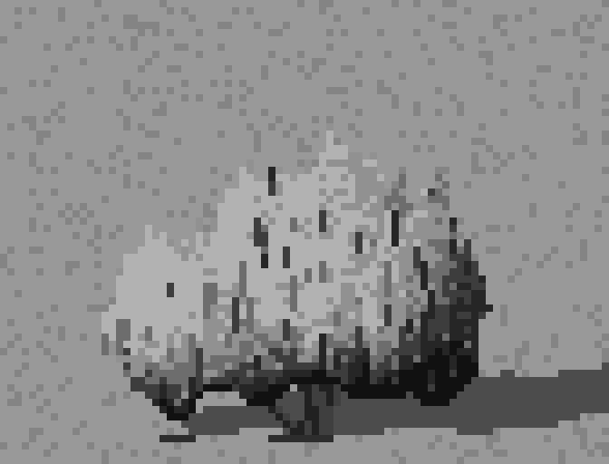
43. elements/steppe/stage1/s1_sage_i_one_8x.pngRead: elements/steppe/stage1/s1_sage_i.png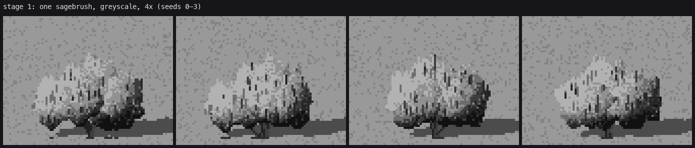
44. elements/steppe/stage1/s1_sage_i.pngBash: Add lit cap dabs and smaller clumps
cd ~/work/pixelart-studies/elements/steppe; python3 - <<'EOF'
s=open('sage.py').read()
s=s.replace(''' ln = int(rng.integers(2, 4 + sw))
for k in range(ln):''',''' ln = int(rng.integers(1, 3 + sw // 2))
for k in range(ln):''')
s=s.replace(''' cv.put(m, SAGE, q)
# finger tips along the crest''',''' # caps: upright lit dabs over a dark tuck, thickest in the halftone (the turn)
ys, xs = np.nonzero(m)
for y, x in zip(ys, xs):
s0 = q[y, x]
pc = p["caps"] * (1.0 if s0 in (2, 3) else 0.35 if s0 == 4 else 0.12)
if rng.random() < pc:
hi = int(min(NS - 1, max(s0 + 1, 3 if s0 >= 2 else s0 + 1)))
for k in range(1 + (rng.random() < 0.5)):
for dx in range(sw):
if 0 <= y - k < H and 0 <= x + dx < W and m[y - k, x + dx]:
q[y - k, x + dx] = hi
for dx in range(sw):
if 0 <= y + 1 < H and 0 <= x + dx < W and m[y + 1, x + dx]:
q[y + 1, x + dx] = max(0, s0 - 1)
cv.put(m, SAGE, q)
# finger tips along the crest''')
s=s.replace(" fingers=0.5, # field mode: finger tips on the crest, per top px",
" fingers=0.5, # field mode: finger tips on the crest, per top px\n caps=0.10, # field mode: upright lit dabs over a dark tuck, per px")
s=s.replace("k = p[\"clumps\"] or int(np.clip(round(w / 13 + rng.normal(0, 0.7)), 2, 8))","k = p[\"clumps\"] or int(np.clip(round(w / p[\"clump_px\"] + rng.normal(0, 0.7)), 2, 10))")
s=s.replace(" clumps=None, # number of clumps (None: from width)"," clumps=None, # number of clumps (None: from width)\n clump_px=9.0, # one clump per this many px of width")
open('sage.py','w').write(s)
EOF
nice python3 s1_sage.py j && python3 -c "
import s1_sage as s, sage, sp
cv=s.bush_on_ground(sage.SageParams(w=56,h=38),1)
sp.save(cv.render(s.Grey()),'stage1/s1_sage_j_one_8x.png',8)"
# output:
(Bash completed with no output)Read: elements/steppe/stage1/s1_sage_j_one_8x.png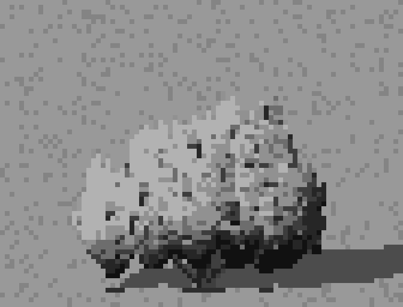
45. elements/steppe/stage1/s1_sage_j_one_8x.pngBash: Make marks 1px upright strokes
cd ~/work/pixelart-studies/elements/steppe; python3 - <<'EOF'
s=open('sage.py').read()
s=s.replace(''' for k in range(1 + (rng.random() < 0.5)):
for dx in range(sw):''',''' for k in range(1 + (rng.random() < 0.6) + (rng.random() < 0.3 * (sw - 1))):
for dx in range(max(1, sw - 1)):''')
s=s.replace(''' for dx in range(sw):
if 0 <= y + 1 < H and 0 <= x + dx < W and m[y + 1, x + dx]:
q[y + 1, x + dx] = max(0, s0 - 1)''',''' for dx in range(max(1, sw - 1)):
if 0 <= y + 1 < H and 0 <= x + dx < W and m[y + 1, x + dx]:
q[y + 1, x + dx] = max(0, s0 - 1)''')
s=s.replace(''' ln = int(rng.integers(1, 3 + sw // 2))
for k in range(ln):
if 0 <= y + k < H and m[y + k, x]:''',''' ln = int(rng.integers(2, 4 + sw // 2))
for k in range(ln):
if 0 <= y + k < H and m[y + k, x]:''')
open('sage.py','w').write(s)
EOF
nice python3 s1_sage.py k && python3 -c "
import s1_sage as s, sage, sp
cv=s.bush_on_ground(sage.SageParams(w=56,h=38,caps=0.16,slots=0.035),1)
sp.save(cv.render(s.Grey()),'stage1/s1_sage_k_one_8x.png',8)"
# output:
(Bash completed with no output)Read: elements/steppe/stage1/s1_sage_k_one_8x.png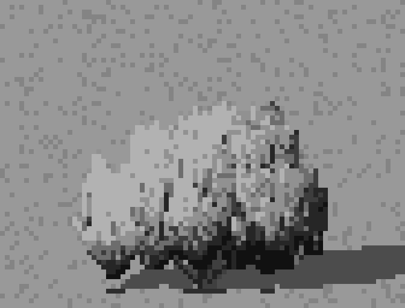
46. elements/steppe/stage1/s1_sage_k_one_8x.pngWrite: elements/steppe/palette.py
"""palette: the light. (material, step, depth band) -> sRGB, for a season and an hour.
A ramp is built physically-ish in linear RGB and then pushed toward Ferrari's habits:
colour(step) = albedo * (ambient(step) * sky + sunlit(step) * sun)
- steps below the terminator get only sky light, scaled by occlusion (cool, violet at dusk);
- steps above it add the sun (warm at golden hour);
- depth bands lift the black point and pull everything toward the haze colour; the lit colour
moves least (measured by the master-copy student: lit stays, shadow changes with depth).
Seasons change albedos (the steppe greens in spring, cures to straw in July, goes grey-tan and
snowy in winter); hours change sun/sky colours and strength.
"""
import numpy as np
import sp
from sp import (SKY, GROUND, CRUST, STONE, BASALT, SAGE, SAGESTEM, GRASS, BITTER, NEEDLE, BARK,
FAR, SNOW, FLOWER, HAZE, WATER, FORB)
# ---- step light plans (ambient occlusion, sun fraction) per ramp length
PLAN = {
6: ([0.22, 0.45, 0.72, 0.95, 1.0, 1.0], [0.0, 0.0, 0.0, 0.42, 0.70, 1.0]),
5: ([0.25, 0.55, 0.9, 1.0, 1.0], [0.0, 0.0, 0.0, 0.62, 1.0]),
4: ([0.3, 0.7, 1.0, 1.0], [0.0, 0.0, 0.55, 1.0]),
3: ([0.35, 1.0, 1.0], [0.0, 0.5, 1.0]),
2: ([0.5, 1.0], [0.0, 1.0]),
1: ([1.0], [0.8]),
}
# ---- hours: sun colour (linear-ish multiplier), sky/ambient colour, haze colour, sky gradient
HOURS = {
"morning": dict(sun=(1.00, 0.93, 0.80), sky=(0.34, 0.40, 0.55), haze=(196, 206, 222),
zenith=(92, 142, 205), horizon=(214, 222, 228), k=1.0),
"noon": dict(sun=(1.00, 0.98, 0.92), sky=(0.36, 0.42, 0.56), haze=(190, 205, 225),
zenith=(70, 130, 210), horizon=(190, 212, 232), k=1.08),
"golden": dict(sun=(1.05, 0.78, 0.50), sky=(0.28, 0.30, 0.46), haze=(214, 186, 170),
zenith=(96, 120, 180), horizon=(240, 196, 140), k=1.0),
"dusk": dict(sun=(0.80, 0.42, 0.34), sky=(0.24, 0.20, 0.38), haze=(150, 118, 150),
zenith=(58, 58, 118), horizon=(236, 140, 118), k=0.85),
"overcast": dict(sun=(0.30, 0.30, 0.30), sky=(0.66, 0.68, 0.72), haze=(186, 188, 192),
zenith=(160, 164, 172), horizon=(206, 208, 210), k=0.95),
}
# ---- albedos by season: lit albedo (sRGB, as if under white light) per material
BASE = {
GROUND: (206, 178, 136), # loess / sandy loam, warm tan
CRUST: (116, 100, 82), # biological soil crust: dark lumpy skin
STONE: (150, 140, 128),
BASALT: (104, 86, 76), # weathered basalt, brown-black; rust in the light
SAGE: (182, 190, 168), # grey-green, silver
SAGESTEM: (122, 108, 92),
GRASS: (214, 188, 128), # cured bunchgrass (summer)
BITTER: (120, 136, 88), # bitterbrush: darker, greener
NEEDLE: (84, 118, 64), # ponderosa needles
BARK: (196, 112, 62), # cinnamon-orange plates
FLOWER: (190, 168, 120), # sage bloom (tan)
SNOW: (240, 242, 246),
FORB: (232, 196, 40), # balsamroot yellow
FAR: (170, 164, 140),
}
SEASONS = {
"spring": {GRASS: (132, 164, 88), SAGE: (170, 188, 150), GROUND: (184, 160, 124),
BITTER: (112, 144, 76), FLOWER: (236, 200, 50), NEEDLE: (92, 128, 66),
FAR: (140, 158, 112)},
"summer": {},
"autumn": {GRASS: (206, 178, 124), FLOWER: (214, 188, 120), SAGE: (178, 184, 162),
BITTER: (132, 132, 90), FAR: (176, 160, 130)},
"winter": {GRASS: (170, 150, 118), SAGE: (150, 160, 150), GROUND: (160, 140, 118),
BITTER: (110, 106, 88), NEEDLE: (70, 98, 60), FAR: (150, 146, 136)},
}
NSTEPS = {SKY: 6, GROUND: 5, CRUST: 3, STONE: 4, BASALT: 5, SAGE: 6, SAGESTEM: 4, GRASS: 5,
BITTER: 6, NEEDLE: 6, BARK: 5, FAR: 4, SNOW: 3, FLOWER: 2, HAZE: 3, WATER: 4, FORB: 2}
# per-material hue shifts of the shadow end (OKLab a, b offsets): Ferrari's cool shadows
SHADOW_SHIFT = {SAGE: (-0.012, -0.030), GROUND: (0.004, -0.030), GRASS: (0.0, -0.035),
NEEDLE: (-0.010, -0.020), BARK: (0.020, -0.040), BASALT: (0.012, -0.036),
SAGESTEM: (0.010, -0.030), BITTER: (-0.008, -0.022), STONE: (0.0, -0.03)}
class Palette:
def __init__(self, season="summer", hour="noon", bands=4, grey=False):
self.season, self.hour, self.grey = season, hour, grey
self.h = HOURS[hour]
self.alb = dict(BASE)
self.alb.update(SEASONS[season])
self.bands = bands
self.cache = {}
def ramp(self, m, band=0):
key = (m, band)
if key in self.cache:
return self.cache[key]
if m == SKY:
r = self._sky(NSTEPS[SKY])
else:
n = NSTEPS.get(m, 4)
occ, sunf = PLAN[n]
alb = sp.srgb_to_lin(self.alb.get(m, (128, 128, 128)))
sun = np.array(self.h["sun"]) * self.h["k"]
sky = np.array(self.h["sky"])
cols = []
for i in range(n):
lin = alb * (occ[i] * sky + sunf[i] * sun)
if m == SNOW:
lin = alb * (occ[i] * sky * 1.25 + sunf[i] * sun)
cols.append(sp.lin_to_srgb(lin))
cols = np.array(cols)
lab = sp.rgb2lab(cols)
sh = SHADOW_SHIFT.get(m, (0.0, -0.02))
for i in range(n):
t = 1 - i / max(1, n - 1)
lab[i, 1] += sh[0] * t
lab[i, 2] += sh[1] * t
# value contrast: Ferrari keys darks deep
lab[:, 0] = np.clip(lab[:, 0] ** 1.06, 0, 1)
r = sp.lab2rgb(lab)
if band > 0:
haze = np.array(self.h["haze"], float)
t = min(0.85, band / (self.bands + 0.5))
lab = sp.rgb2lab(r)
hl = sp.rgb2lab(haze)
n = len(r)
for i in range(n):
# darks move a lot, lights little
wgt = t * (1.0 - 0.55 * i / max(1, n - 1))
lab[i] = lab[i] * (1 - wgt) + hl * wgt
r = sp.lab2rgb(lab)
if self.grey:
lab = sp.rgb2lab(r)
lab[:, 1:] = 0
r = sp.lab2rgb(lab)
r = np.clip(np.round(r), 0, 255).astype(np.uint8)
self.cache[key] = r
return r
def _sky(self, n):
z, hz = np.array(self.h["zenith"], float), np.array(self.h["horizon"], float)
return np.array([sp.mix(z, hz, i / (n - 1)) for i in range(n)])
def rgb(self, m, s, b=0):
if m == 0:
return (255, 0, 255)
r = self.ramp(m, b)
return tuple(int(v) for v in r[int(np.clip(s, 0, len(r) - 1))])
def swatch(self, mats=None, k=12):
mats = mats or [SKY, GROUND, CRUST, BASALT, SAGE, SAGESTEM, GRASS, BITTER, NEEDLE, BARK,
SNOW, FLOWER, FORB]
rows = []
for m in mats:
r = self.ramp(m)
row = np.zeros((k, 6 * k, 3), np.uint8)
for i, c in enumerate(r):
row[:, i * k:(i + 1) * k] = c
rows.append(row)
return np.vstack(rows)
Bash: Add tussock painter to grass module
cd ~/work/pixelart-studies/elements/steppe; cat >> grass.py <<'EOF'
# ====================================================================== tussocks on the canvas
class TussockParams(dict):
DEFAULT = dict(
w=14, h=16, # px
blades=None, # None: from size
spread=0.55, # fan half-angle (rad)
bend=0.9, # tip droop
stalks=0.3, # seed stalks rising above (bluebunch: many in summer)
az=35, el=40,
season="summer",
kind="bluebunch", # "bluebunch" | "fescue" (finer, denser, lower) | "cheat" (carpet)
dark_step=0, mid_step=2, lit_step=4, top_step=4,
)
def __init__(self, **kw):
super().__init__(self.DEFAULT)
self.update(kw)
def paint_tussock(p, rng, pad=4):
"""One bunchgrass tussock. Near (h >= 10 px): paired blades from a dense base, the Ferrari
stroke; mid (4-10 px): a fan of 1-px strands, lit on the sun side, dark core; far (< 4 px):
a dab (dark foot, lit top pixel). Returns (canvas, base_x, base_y)."""
w, h = p["w"], p["h"]
W, H = int(w + 2 * pad + 8), int(h + 2 * pad + 4)
cv = sp.Canvas(W, H)
cx, gy = W // 2, H - pad
sun_right = np.cos(np.radians(p["az"])) < 0
ls = 1 if sun_right else -1
fine = p["kind"] == "fescue"
if h >= 10:
n = p["blades"] or int(w * h / (14 if not fine else 8)) + 6
blades = tuft_blades(cx, gy, n, rng, len_mu=h * 0.85, len_sd=h * 0.22,
spread=p["spread"], bend=p["bend"], width=w * 0.35, wander=0.7)
# the dense base: a dark mound with mid flecks
by0 = int(gy - max(2, h * 0.22))
for y in range(by0, gy + 1):
half = (w * 0.30) * (0.6 + 0.4 * (y - by0) / max(1, gy - by0))
for x in range(int(cx - half), int(cx + half) + 1):
s = p["dark_step"] if rng.random() < 0.7 else p["mid_step"]
cv.px(x, y, sp.GRASS, s)
arr = np.full((H, W), -1, int)
# paired blades: blade body lit, the gap beside it dark (front light);
# low on the tuft the lit side drops to mid
draw_blade_pairs(arr, blades, 100, 101, 102, lit_side=ls, tipdark=0.12, rng=rng,
low_mid=0.4, low_dark=0.0)
# map roles: 100 = the blade's dark line; 101/102 its lit pair
m = arr >= 0
st = np.where(arr == 100, p["dark_step"] + 1, np.where(arr == 101, p["mid_step"], p["lit_step"]))
# height shading: tips catch more light
cv.put(m, sp.GRASS, st)
# seed stalks: thin straight lines rising above with a 1-2 px lit head
ns = int(p["stalks"] * n * 0.35)
for _ in range(ns):
x0 = cx + rng.normal(0, w * 0.15)
ang = rng.normal(0, 0.18)
ln = h * rng.uniform(1.0, 1.35)
pix = sp.polyline_clean([(x0, gy - 2), (x0 + np.sin(ang) * ln, gy - 2 - np.cos(ang) * ln)])
for i, (x, y) in enumerate(pix):
if i > len(pix) * 0.3:
cv.px(x, y, sp.GRASS, p["mid_step"] if i < len(pix) - 3 else p["top_step"])
elif h >= 4:
n = int(w * 1.3) + 3
for i in range(n):
u = rng.uniform(-1, 1)
ln = h * rng.uniform(0.6, 1.05) * (1 - 0.3 * abs(u))
x0 = cx + u * w * 0.25
ang = u * p["spread"] * 0.8
pix = sp.polyline_clean(sp.arc_points(x0, gy, ang, ln, np.sign(u) * p["bend"] * 0.5, 2))
lit = (u * ls) > -0.2
for j, (x, y) in enumerate(pix):
t = j / max(1, len(pix) - 1)
s = p["dark_step"] if t < 0.3 else (p["lit_step"] if (lit and t > 0.5) else p["mid_step"])
cv.px(x, y, sp.GRASS, s)
else:
# dab: dark foot, lit top pixel on the sun side
hw = max(1, int(round(w / 2)))
for x in range(cx - hw + 1, cx + hw):
cv.px(x, gy, sp.GRASS, p["dark_step"])
for y in range(gy - max(0, int(h) - 1), gy):
cv.px(cx, y, sp.GRASS, p["mid_step"])
cv.px(cx + (ls if w > 2 else 0), gy - max(1, int(h) - 1), sp.GRASS, p["lit_step"])
return cv, cx, gy
EOF
echo ok
# output:
okWrite: elements/steppe/world.py
"""world: cameras, the ground (loess, soil crust, basalt pebbles, small grasses), placement of
plants in the world, cast shadows, and depth bands.
World units are metres. X runs right, Z runs away from the viewer, heights are up.
Two cameras:
Iso(el, ppm): orthographic, looking down at `el` degrees (30 = the game's iso view).
Persp(eye, f, horizon_y): a standing viewer; ground at distance Z lands at y = hy + f*eye/Z.
Every mark size is decided in PIXELS from the local pixels-per-metre, so the same world paints
at any zoom, and the ground texture is a function of world position (it does not swim).
"""
import numpy as np
import sp
from sp import GROUND, CRUST, STONE, GRASS, SAGE, SAGESTEM, BITTER, SNOW, FORB
# ---------------------------------------------------------------- hashed value noise (world space)
def _hash(ix, iz, seed):
h = (ix.astype(np.int64) * 374761393 + iz.astype(np.int64) * 668265263 + seed * 1442695041) & 0xFFFFFFFF
h = ((h ^ (h >> 13)) * 1274126177) & 0xFFFFFFFF
return ((h ^ (h >> 16)) & 0xFFFFFF) / float(0xFFFFFF)
def vnoise(x, z, scale, seed):
"""Smooth value noise at world points (arrays), feature size `scale` metres, in [0,1]."""
u, v = x / scale, z / scale
iu, iv = np.floor(u), np.floor(v)
fu, fv = u - iu, v - iv
fu, fv = fu * fu * (3 - 2 * fu), fv * fv * (3 - 2 * fv)
a = _hash(iu, iv, seed)
b = _hash(iu + 1, iv, seed)
c = _hash(iu, iv + 1, seed)
d = _hash(iu + 1, iv + 1, seed)
return (a * (1 - fu) + b * fu) * (1 - fv) + (c * (1 - fu) + d * fu) * fv
def fbm(x, z, scale, seed, oct=3):
t, amp, s = 0.0, 1.0, 0.0
for o in range(oct):
t = t + amp * vnoise(x, z, scale / 2 ** o, seed + 17 * o)
s += amp
amp *= 0.5
return t / s
# ---------------------------------------------------------------- cameras
class Iso:
"""Orthographic, elevation `el` degrees, `ppm` pixels per metre, world origin at screen
(x0, y0) (the front-left corner of the ground patch)."""
kind = "iso"
def __init__(self, W, H, el=30.0, ppm=12.0):
self.W, self.H, self.el, self.ppm = W, H, el, ppm
self.s, self.c = np.sin(np.radians(el)), np.cos(np.radians(el))
def ground_xz(self, xs, ys):
X = xs / self.ppm
Z = (self.H - ys) / (self.ppm * self.s)
return X, Z
def project(self, X, Z, hgt=0.0):
return X * self.ppm, self.H - Z * self.ppm * self.s - hgt * self.ppm * self.c
def ppm_at(self, Z):
return self.ppm
def band(self, Z):
return 0
def zrange(self):
return 0.0, self.H / (self.ppm * self.s) + 4.0
class Persp:
"""A standing viewer: eye height `eye` m, focal length f px, horizon at screen row hy."""
kind = "persp"
def __init__(self, W, H, eye=1.7, f=400.0, hy=None, bands=(12, 30, 80, 200), zfar=2000.0):
self.W, self.H, self.eye, self.f = W, H, eye, f
self.hy = H * 0.35 if hy is None else hy
self.el = np.degrees(np.arctan2(eye, f * eye / max(1, H - self.hy)))
self.bands = bands
self.zfar = zfar
def ground_xz(self, xs, ys):
dy = np.maximum(ys - self.hy, 1e-3)
Z = self.f * self.eye / dy
X = (xs - self.W / 2) * Z / self.f
return X, Z
def project(self, X, Z, hgt=0.0):
k = self.f / Z
return self.W / 2 + X * k, self.hy + (self.eye - hgt) * k
def ppm_at(self, Z):
return self.f / Z
def band(self, Z):
return int(np.searchsorted(self.bands, Z))
def zrange(self):
return self.f * self.eye / (self.H - self.hy), self.zfar
# ---------------------------------------------------------------- the ground
class GroundParams(dict):
DEFAULT = dict(
crust=0.35, # share of bare ground under soil crust
stones=0.25, # basalt pebble cover (0..1)
litter=0.5, # tiny grasses (Sandberg bluegrass, cheatgrass) between the plants
undulation=0.8, # low-frequency value variation, steps
snow=0.0, # 0..1 snow cover
season="summer",
seed=0,
)
def __init__(self, **kw):
super().__init__(self.DEFAULT)
self.update(kw)
def paint_ground(cv, cam, gp, sun_dx=1):
"""Fill ground pixels (rows below the horizon) with the loess/crust/pebble texture."""
H, W = cv.h, cv.w
ys, xs = np.mgrid[0:H, 0:W].astype(float)
if cam.kind == "persp":
below = ys > cam.hy + 0.5
else:
below = np.ones((H, W), bool)
X, Z = cam.ground_xz(xs + 0.5, ys + 0.5)
seed = gp["seed"]
ppm = cam.ppm_at(Z)
# base: lit loess, undulating
und = (fbm(X, Z, 6.0, seed + 1) - 0.5) * 2 * gp["undulation"]
fine = vnoise(X, Z, np.maximum(0.03, 1.2 / ppm), seed + 2) - 0.5 # ~1px grain
base = 3.0 + und + fine * 0.9 * np.clip(ppm / 8, 0.2, 1.0)
step = np.clip(sp.quantize(base, ordered=False, rng=np.random.default_rng(seed)), 1, 4)
mat = np.full((H, W), GROUND, np.uint8)
# soil crust: dark lumpy patches between plants
cr = fbm(X, Z, 0.9, seed + 3)
crust = cr < gp["crust"] * 0.62
lump = vnoise(X, Z, np.maximum(0.025, 1.0 / ppm), seed + 4)
cstep = np.where(lump > 0.62, 2, np.where(lump > 0.3, 1, 0))
mat[crust] = CRUST
step[crust] = cstep[crust]
# snow
if gp["snow"] > 0:
sn = fbm(X, Z, 1.4, seed + 9) + 0.25 * (vnoise(X, Z, 0.2, seed + 10) - 0.5)
snow = sn < gp["snow"] * 1.05
mat[snow] = SNOW
step[snow] = np.where(vnoise(X[snow], Z[snow], 0.5, seed + 11) > 0.25, 2, 1)
cv.mat[below] = mat[below]
cv.step[below] = step[below]
if cam.kind == "persp":
cv.band[below] = np.searchsorted(cam.bands, Z[below]).astype(np.uint8)
# pebbles and small grasses: sites on a world grid, drawn only where they are >= 1 px
_pebbles(cv, cam, gp, sun_dx)
_litter(cv, cam, gp, sun_dx)
return X, Z
def _sites(cam, cell, density, seed):
z0, z1 = cam.zrange()
if cam.kind == "iso":
x0, x1 = 0.0, cam.W / cam.ppm
else:
x0, x1 = -z1 * cam.W / cam.f / 2, z1 * cam.W / cam.f / 2
out = []
# iterate rows of cells by depth, skipping those whose cells are sub-pixel
zs = np.arange(np.floor(z0 / cell), np.ceil(min(z1, 400.0) / cell) + 1)
for iz in zs:
Zc = (iz + 0.5) * cell
if cam.kind == "persp":
xa, xb = -Zc * cam.W / cam.f / 2 - cell, Zc * cam.W / cam.f / 2 + cell
if cam.ppm_at(Zc) * cell < 0.6:
break
else:
xa, xb = x0 - cell, x1 + cell
ix = np.arange(np.floor(xa / cell), np.ceil(xb / cell) + 1)
izs = np.full_like(ix, iz)
r = _hash(ix, izs, seed)
keep = r < density
if keep.any():
jx = _hash(ix, izs, seed + 5)[keep]
jz = _hash(ix, izs, seed + 6)[keep]
sz = _hash(ix, izs, seed + 7)[keep]
for a, b, c, d in zip(ix[keep], jx, jz, sz):
out.append(((a + b) * cell, (iz + jz_) * cell if False else (iz + c) * cell, d))
return out
def _pebbles(cv, cam, gp, sun_dx):
if gp["stones"] <= 0:
return
for X, Z, s in _sites(cam, 0.35, gp["stones"] * 0.6, gp["seed"] + 21):
r_m = 0.025 + 0.09 * s ** 2
ppm = cam.ppm_at(Z)
r = r_m * ppm
if r < 0.5:
continue
x, y = cam.project(X, Z)
x, y = int(round(x)), int(round(y))
if not (0 <= x < cv.w and 0 <= y < cv.h) or cv.mat[y, x] not in (GROUND, CRUST):
continue
band = cam.band(Z)
sq = cam.s if cam.kind == "iso" else max(0.25, cam.eye / Z)
ry = max(0.5, r * max(0.45, sq + 0.3))
rr = int(np.ceil(r))
for dy in range(-int(np.ceil(ry)), int(np.ceil(ry)) + 1):
for dx in range(-rr, rr + 1):
if (dx / max(r, 0.5)) ** 2 + (dy / ry) ** 2 <= 1.0:
t = (dy + ry) / (2 * ry) # 0 top .. 1 bottom
side = dx * sun_dx
st = 3 if t < 0.4 else 2 if t < 0.75 else 1
if side < 0 and t > 0.3:
st -= 1
cv.px(x + dx, y + dy, STONE, max(0, st), band)
# cast shadow pixel on the ground, away from the sun, and the dark foot
for dx in range(-rr, rr + 1):
cv.px(x + dx + sun_dx, y + int(np.ceil(ry)) + 0, GROUND, 0, band) if False else None
sx = x + sun_dx * (rr + 1)
if 0 <= sx < cv.w and 0 <= y < cv.h and cv.mat[y, sx] in (GROUND, CRUST):
cv.step[y, sx] = max(0, cv.step[y, sx] - 2)
def _litter(cv, cam, gp, sun_dx):
"""Tiny grasses between the plants: at near scale 1-3 px upright ticks (lit top), else nothing
(their colour is already in the ground ramp)."""
if gp["litter"] <= 0:
return
for X, Z, s in _sites(cam, 0.12, gp["litter"] * 0.5, gp["seed"] + 31):
ppm = cam.ppm_at(Z)
hpx = (0.04 + 0.1 * s) * ppm * (cam.c if cam.kind == "iso" else 1.0)
if hpx < 1.0:
continue
x, y = cam.project(X, Z)
x, y = int(round(x)), int(round(y))
if not (0 <= x < cv.w and 0 <= y < cv.h) or cv.mat[y, x] not in (GROUND, CRUST):
continue
band = cam.band(Z)
n = int(min(4, hpx))
for k in range(n):
cv.px(x, y - k, GRASS, 1 if k == 0 else (3 if k == n - 1 else 2), band)
if hpx > 2.5:
cv.px(x + 1, y - 1, GRASS, 2, band)
cv.px(x - 1, y, GRASS, 1, band)
Bash: Clean leftover junk in world.py
cd ~/work/pixelart-studies/elements/steppe; python3 - <<'EOF'
s=open('world.py').read()
s=s.replace("out.append(((a + b) * cell, (iz + jz_) * cell if False else (iz + c) * cell, d))","out.append(((a + b) * cell, (iz + c) * cell, d))")
s=s.replace(" jz = _hash(ix, izs, seed + 6)[keep]\n","")
s=s.replace("for a, b, c, d in zip(ix[keep], jx, jz, sz):","for a, b, c, d in zip(ix[keep], jx, _hash(ix, izs, seed + 6)[keep], sz):")
s=s.replace(''' for dx in range(-rr, rr + 1):
cv.px(x + dx + sun_dx, y + int(np.ceil(ry)) + 0, GROUND, 0, band) if False else None
''','')
open('world.py','w').write(s)
EOF
grep -n "if False" world.py; echo
# output:
(Bash completed with no output)Bash: Allow view-space light override in sage
cd ~/work/pixelart-studies/elements/steppe; python3 - <<'EOF'
s=open('sage.py').read()
s=s.replace(' L = sun_vec(p["az"], p["el"])\n bitter',' L = np.asarray(p["L"]) if p.get("L") is not None else sun_vec(p["az"], p["el"])\n bitter')
s=s.replace(' az=35, el=40,\n kind="sage",',' az=35, el=40,\n L=None, # light vector in view space (overrides az/el; set by the camera)\n kind="sage",')
open('sage.py','w').write(s)
EOF
grep -n '"L"' sage.py
# output:
84: L = np.asarray(p["L"]) if p.get("L") is not None else sun_vec(p["az"], p["el"])Write: elements/steppe/scene.py
"""scene: plants placed in the world, painted far to near with cast shadows, under a camera.
paint_scene(W, H, cam, season, hour, plants, ground, sun_az, sun_el, seed) -> Canvas
`plants` is a dict of densities (plants per 100 m^2) and sizes; see DEFAULT_PLANTS.
Level of detail is chosen per plant from its width in pixels (see sage_sprite / grass_sprite).
"""
import numpy as np
import sp, sage, grass, world
from sp import SAGE, SAGESTEM, GRASS, GROUND, CRUST, STONE, SNOW, SKY, FLOWER, BITTER
DEFAULT_PLANTS = dict(
sage=18.0, # big sagebrush per 100 m^2 (Wyoming big sage steppe: 10-40)
sage_size=(0.7, 1.3), # width range, m
bitter=0.0, # bitterbrush per 100 m^2
grass=60.0, # bunchgrass tussocks per 100 m^2
grass_size=(0.25, 0.45),
pine=0.0, # ponderosa per 100 m^2 (parkland: 0.5-1.5)
pine_size=(14.0, 28.0),
)
SEASON_PARAMS = {
# grass colour lives in the palette; these are shape/state changes
"spring": dict(stalks=0.0, sage_stalks=0.0, snow=0.0, forbs=0.25),
"summer": dict(stalks=0.5, sage_stalks=0.0, snow=0.0, forbs=0.0),
"autumn": dict(stalks=0.35, sage_stalks=0.8, snow=0.0, forbs=0.0),
"winter": dict(stalks=0.15, sage_stalks=0.15, snow=0.55, forbs=0.0),
}
def sun_world(az, el):
"""World sun direction (x right, y up, z toward viewer), same convention as sage.sun_vec."""
return sage.sun_vec(az, el)
def view_light(L, cam_el):
"""Light in the sprite's view space for a camera looking down at cam_el degrees."""
e = np.radians(cam_el)
u = np.array([0, np.cos(e), -np.sin(e)]) # screen up in world
v = np.array([0, np.sin(e), np.cos(e)]) # toward viewer in world
out = np.array([L[0], L @ u, L @ v])
return out / np.linalg.norm(out)
# ------------------------------------------------------------------ sprites by LOD
def sage_sprite(w_px, h_px, rng, L, kind="sage", season="summer", density=0.7):
sp_ = SEASON_PARAMS[season]
if w_px >= 5:
p = sage.SageParams(w=w_px, h=h_px, L=L, kind=kind, density=density,
stalks=sp_["sage_stalks"] if kind == "sage" else 0,
snow=sp_["snow"] * 0.8)
if w_px < 14:
p.update(clump_px=max(6.0, w_px / 2.2), fingers=0.35, caps=0.06, slots=0.02,
flecks=0.03, tips=0.15, trunks=1)
cv, bx, by, _ = sage.paint_bush(p, rng, pad=3)
return cv, bx, by
# micro: a dab
W, H = int(w_px) + 4, int(h_px) + 4
cv = sp.Canvas(W, H)
bx, by = W // 2, H - 2
mat = SAGE if kind == "sage" else BITTER
hw = max(0.5, w_px / 2)
sun_r = L[0] > 0
for y in range(by - max(0, int(round(h_px)) - 1), by + 1):
t = (by - y) / max(1, h_px) # 0 foot .. 1 top
half = hw * np.sqrt(max(0.05, 1 - t * t)) if h_px > 1.5 else hw
for x in range(int(np.floor(bx - half + 0.5)), int(np.ceil(bx + half - 0.5)) + 1):
side = (x - bx) * (1 if sun_r else -1)
s = 1 if t < 0.34 else (3 if side >= 0 else 2)
if t >= 0.66 and side >= 0:
s = 4
cv.px(x, y, mat, s)
if w_px < 2.2:
cv.mat[:] = 0
cv.px(bx, by, mat, 1)
if h_px >= 1.5:
cv.px(bx, by - 1, mat, 3)
return cv, bx, by
def grass_sprite(w_px, h_px, rng, L, season="summer"):
sp_ = SEASON_PARAMS[season]
az = 0 if L[0] < 0 else 180
p = grass.TussockParams(w=w_px, h=h_px, stalks=sp_["stalks"], az=az)
cv, bx, by = grass.paint_tussock(p, rng, pad=2)
return cv, bx, by
# ------------------------------------------------------------------ placement
def scatter(cam, density_per100, seed, zmax=None, xpad=2.0):
"""Poisson-ish (jittered grid) placement over the visible ground. Returns [(X,Z,r)]."""
if density_per100 <= 0:
return []
cell = np.sqrt(100.0 / density_per100)
z0, z1 = cam.zrange()
z1 = min(z1, zmax or z1)
out = []
iz0, iz1 = int(np.floor(z0 / cell)) - 1, int(np.ceil(z1 / cell)) + 1
for iz in range(iz0, iz1):
Zc = (iz + 0.5) * cell
if cam.kind == "iso":
xa, xb = -xpad, cam.W / cam.ppm + xpad
else:
half = max(Zc, 0.5) * cam.W / cam.f / 2 + xpad
xa, xb = -half, half
ixs = np.arange(int(np.floor(xa / cell)), int(np.ceil(xb / cell)) + 1)
izs = np.full_like(ixs, iz)
jx = world._hash(ixs, izs, seed)
jz = world._hash(ixs, izs, seed + 1)
rr = world._hash(ixs, izs, seed + 2)
keep = world._hash(ixs, izs, seed + 3) < 0.85
for ix, a, b, r, k in zip(ixs, jx, jz, rr, keep):
if k:
Z = (iz + b) * cell
if z0 * 0.8 <= Z <= z1:
out.append(((ix + a) * cell, Z, r))
return out
def _cast_shadow(cv, cam, spr, ox, oy, X, Z, ppm, Lw, band):
"""Project the sprite silhouette onto the ground: ground pixels there go two steps down
(they keep their texture: the shadow is the ground in its shadow family)."""
if Lw[1] <= 0.05:
return
m = spr.mat > 0
ys, xs = np.nonzero(m)
if len(ys) == 0:
return
by = ys.max()
cz = cam.c if cam.kind == "iso" else 1.0
# horizontal shadow direction in world (away from the sun); shadow length per metre height
dxw, dzw = -Lw[0], Lw[2] # toward-viewer light means shadow goes AWAY (+Z)
k = 1.0 / max(0.12, Lw[1])
hgt = (by - ys) / (ppm * cz)
Xs = X + (xs - (ox if False else 0)) * 0 # placeholder to keep shapes clear
lat = (xs + ox - cam.project(X, Z)[0]) / ppm
SX = X + lat + hgt * k * dxw
SZ = Z + hgt * k * dzw
px, py = cam.project(SX, SZ)
px = np.round(px).astype(int)
py = np.round(py).astype(int)
H, W = cv.h, cv.w
for dx in (0, 1):
for dy in (0, 1):
qx, qy = px + dx, py + dy
ok = (qx >= 0) & (qx < W) & (qy >= 0) & (qy < H)
qx, qy = qx[ok], qy[ok]
g = np.isin(cv.mat[qy, qx], (GROUND, CRUST, STONE, SNOW))
qx, qy = qx[g], qy[g]
mark = np.zeros((H, W), bool)
mark[qy, qx] = True
sel = mark & ~_shadow_done
cv.step[sel] = np.maximum(0, cv.step[sel] - 2)
_shadow_done[sel] = True
_shadow_done = None
def paint_scene(W, H, cam, season="summer", hour="noon", plants=None, ground=None, sun_az=35,
sun_el=40, seed=0, sky=True):
global _shadow_done
pl = dict(DEFAULT_PLANTS)
pl.update(plants or {})
gp = world.GroundParams(seed=seed, season=season)
gp["snow"] = SEASON_PARAMS[season]["snow"]
gp.update(ground or {})
cv = sp.Canvas(W, H)
Lw = sun_world(sun_az, sun_el)
sun_dx = 1 if Lw[0] < 0 else -1 # shadows fall to +x when the sun is on the left
world.paint_ground(cv, cam, gp, sun_dx)
if cam.kind == "persp" and sky:
_sky(cv, cam)
L = view_light(Lw, cam.el if cam.kind == "iso" else 4.0)
_shadow_done = np.zeros((H, W), bool)
rng = np.random.default_rng(seed)
items = []
for X, Z, r in scatter(cam, pl["sage"], seed + 101):
items.append(("sage", X, Z, r))
for X, Z, r in scatter(cam, pl["bitter"], seed + 202):
items.append(("bitter", X, Z, r))
for X, Z, r in scatter(cam, pl["grass"], seed + 303):
items.append(("grass", X, Z, r))
items.sort(key=lambda t: -t[2])
shadows = []
sprites = []
for kind, X, Z, r in items:
ppm = cam.ppm_at(Z)
band = cam.band(Z)
if kind in ("sage", "bitter"):
lo, hi = pl["sage_size"] if kind == "sage" else (1.0, 1.8)
wm = lo + (hi - lo) * r
hm = wm * (0.72 if kind == "sage" else 0.8)
else:
lo, hi = pl["grass_size"]
wm = lo + (hi - lo) * r
hm = wm * 1.3
wpx = wm * ppm
if cam.kind == "iso":
hpx = hm * ppm * cam.c + wm * 0.5 * ppm * cam.s
else:
hpx = hm * ppm
if wpx < 1.0:
continue
srng = np.random.default_rng(int(abs(X * 1000 + Z * 7919)) % (2 ** 31) + seed)
if kind == "grass":
spr, bx, by = grass_sprite(wpx, hpx, srng, L, season)
else:
spr, bx, by = sage_sprite(wpx, hpx, srng, L, kind, season)
if kind == "bitter":
spr.mat[spr.mat == SAGE] = BITTER
x, y = cam.project(X, Z)
ox, oy = int(round(x)) - bx, int(round(y)) - by
spr.band[:] = band
sprites.append((Z, spr, ox, oy, X, ppm, band))
# shadows first (on the ground), then sprites far to near
for Z, spr, ox, oy, X, ppm, band in sprites:
if spr.w > 3:
_cast_shadow(cv, cam, spr, ox, oy, X, Z, ppm, Lw, band)
for Z, spr, ox, oy, X, ppm, band in sorted(sprites, key=lambda t: -t[0]):
# contact: darken the ground right under the foot
cv.blit(spr, ox, oy)
m = spr.mat > 0
if m.any() and spr.w > 6:
ys, xs = np.nonzero(m)
by = ys.max()
for xx in np.unique(xs[ys >= by - 1]):
gx, gy = xx + ox, by + oy + 1
if 0 <= gx < W and 0 <= gy < H and cv.mat[gy, gx] in (GROUND, CRUST, STONE):
cv.step[gy, gx] = 0
return cv
def _sky(cv, cam):
hy = int(cam.hy)
for y in range(0, hy + 1):
t = y / max(1, hy)
s = t * 5.0
f = np.floor(s)
row = np.full(cv.w, f)
frac = s - f
# dither only at the seams between bands
if frac > 0.75:
row[(np.arange(cv.w) + y) % 2 == 0] = f + 1
cv.mat[y] = SKY
cv.step[y] = np.clip(row, 0, 5).astype(np.int16)
Bash: First iso and perspective steppe scenes
cd ~/work/pixelart-studies/elements/steppe; python3 - <<'EOF'
s=open('scene.py').read()
s=s.replace(" Xs = X + (xs - (ox if False else 0)) * 0 # placeholder to keep shapes clear\n","")
open('scene.py','w').write(s)
EOF
mkdir -p stage2; cat > s2_try.py <<'EOF'
import sys, numpy as np, sp, world, scene, palette
tag = sys.argv[1] if len(sys.argv) > 1 else "a"
W, H = 320, 200
cam = world.Iso(W, H, el=30, ppm=24)
cv = scene.paint_scene(W, H, cam, "summer", "noon", seed=1)
pal = palette.Palette("summer", "noon")
img = cv.render(pal)
sp.save(img, f"stage2/iso_{tag}_3x.png", 3)
cam = world.Persp(W, H, eye=1.6, f=260, hy=60)
cv = scene.paint_scene(W, H, cam, "summer", "golden", seed=2, sun_az=20, sun_el=18)
img = cv.render(palette.Palette("summer", "golden"))
sp.save(img, f"stage2/persp_{tag}_3x.png", 3)
EOF
time nice python3 s2_try.py a
# output:
nice python3 s2_try.py a 18.21s user 1.35s system 37% cpu 52.116 totalRead: elements/steppe/stage2/iso_a_3x.pngRead: elements/steppe/stage2/persp_a_3x.png 47. elements/steppe/stage2/iso_a_3x.png
47. elements/steppe/stage2/iso_a_3x.png
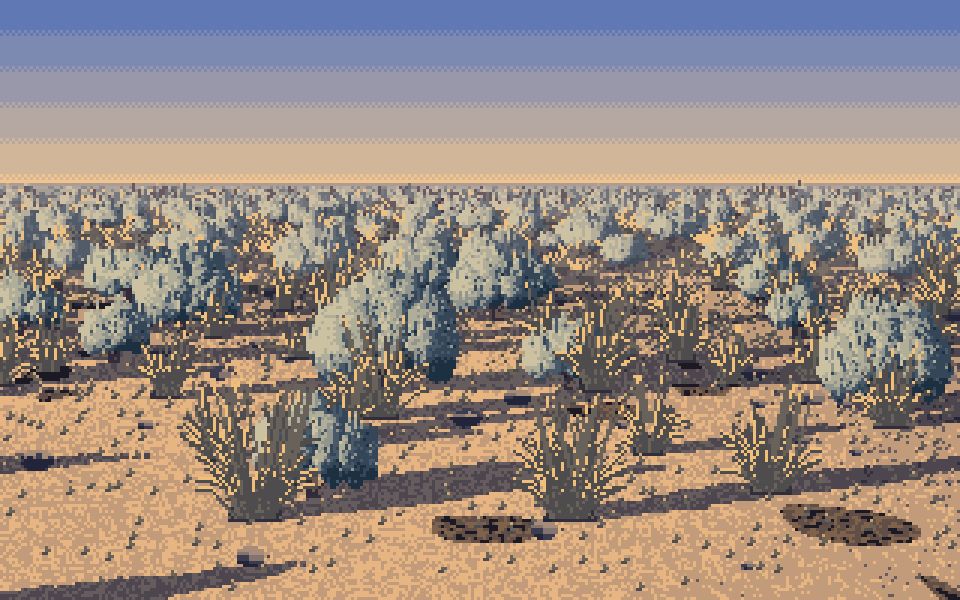
48. elements/steppe/stage2/persp_a_3x.pngBash: Render palette swatches per hour
cd ~/work/pixelart-studies/elements/steppe; python3 - <<'EOF'
import palette, sp, numpy as np
cells=[]
for h in ["morning","noon","golden","dusk","overcast"]:
cells.append(palette.Palette("summer",h).swatch())
sp.save(sp.grid(cells,5,collabels=["morning","noon","golden","dusk","overcast"],title="rows: SKY GROUND CRUST BASALT SAGE STEM GRASS BITTER NEEDLE BARK SNOW FLOWER FORB"),"stage2/swatch_a.png",2)
p=palette.Palette("summer","noon")
for m in [palette.SAGE, palette.GROUND, palette.GRASS]: print(m, p.ramp(m).tolist())
EOF
# output:
6 [[34, 58, 73], [60, 84, 97], [83, 105, 116], [154, 173, 168], [185, 201, 187], [212, 224, 203]]
2 [[57, 55, 63], [89, 84, 86], [116, 108, 103], [204, 180, 149], [240, 210, 164]]
8 [[57, 60, 64], [90, 90, 84], [119, 116, 99], [211, 191, 142], [250, 222, 155]]Read: elements/steppe/stage2/swatch_a.png 49. elements/steppe/stage2/swatch_a.png
49. elements/steppe/stage2/swatch_a.png
Bash: Soften terminator jump, retune sage albedo
cd ~/work/pixelart-studies/elements/steppe; python3 - <<'EOF'
s=open('palette.py').read()
s=s.replace("6: ([0.22, 0.45, 0.72, 0.95, 1.0, 1.0], [0.0, 0.0, 0.0, 0.42, 0.70, 1.0]),","6: ([0.28, 0.55, 0.85, 1.0, 1.0, 1.0], [0.0, 0.0, 0.0, 0.40, 0.66, 0.92]),")
s=s.replace("5: ([0.25, 0.55, 0.9, 1.0, 1.0], [0.0, 0.0, 0.0, 0.62, 1.0]),","5: ([0.32, 0.62, 0.95, 1.0, 1.0], [0.0, 0.0, 0.0, 0.58, 0.9]),")
s=s.replace('"noon": dict(sun=(1.00, 0.98, 0.92), sky=(0.36, 0.42, 0.56),','"noon": dict(sun=(1.00, 0.97, 0.90), sky=(0.46, 0.52, 0.66),')
s=s.replace('"morning": dict(sun=(1.00, 0.93, 0.80), sky=(0.34, 0.40, 0.55),','"morning": dict(sun=(1.00, 0.92, 0.80), sky=(0.42, 0.48, 0.64),')
s=s.replace('"golden": dict(sun=(1.05, 0.78, 0.50), sky=(0.28, 0.30, 0.46),','"golden": dict(sun=(1.05, 0.78, 0.50), sky=(0.34, 0.36, 0.54),')
s=s.replace('"dusk": dict(sun=(0.80, 0.42, 0.34), sky=(0.24, 0.20, 0.38),','"dusk": dict(sun=(0.80, 0.42, 0.34), sky=(0.28, 0.24, 0.44),')
s=s.replace("SAGE: (182, 190, 168), # grey-green, silver","SAGE: (160, 166, 142), # grey-green, silver")
s=s.replace("SHADOW_SHIFT = {SAGE: (-0.012, -0.030),","SHADOW_SHIFT = {SAGE: (-0.006, -0.016),")
s=s.replace('"spring": {GRASS: (132, 164, 88), SAGE: (170, 188, 150),','"spring": {GRASS: (132, 164, 88), SAGE: (150, 166, 130),')
s=s.replace("SAGE: (178, 184, 162),\n","SAGE: (160, 162, 140),\n")
s=s.replace("GRASS: (170, 150, 118), SAGE: (150, 160, 150),","GRASS: (170, 150, 118), SAGE: (140, 148, 136),")
open('palette.py','w').write(s)
EOF
grep -n "SAGE:" palette.py
# output:
48: SAGE: (160, 166, 142), # grey-green, silver
61: "spring": {GRASS: (132, 164, 88), SAGE: (150, 166, 130), GROUND: (184, 160, 124),
65: "autumn": {GRASS: (206, 178, 124), FLOWER: (214, 188, 120), SAGE: (160, 162, 140),
67: "winter": {GRASS: (170, 150, 118), SAGE: (140, 148, 136), GROUND: (160, 140, 118),
71:NSTEPS = {SKY: 6, GROUND: 5, CRUST: 3, STONE: 4, BASALT: 5, SAGE: 6, SAGESTEM: 4, GRASS: 5,
75:SHADOW_SHIFT = {SAGE: (-0.006, -0.016), GROUND: (0.004, -0.030), GRASS: (0.0, -0.035),Bash: Front-light grass pairs; rerender scenes
cd ~/work/pixelart-studies/elements/steppe; python3 - <<'EOF'
s=open('grass.py').read()
old=s[s.index(" arr = np.full((H, W), -1, int)"):s.index(" # seed stalks")]
new=''' arr = np.full((H, W), -1, int)
# paired blades in front light: the blade itself is the lit line, its partner pixel on
# the shadow side is the dark gap (V11AM's stroke with the light reversed)
draw_blade_pairs(arr, blades, 100, 101, 102, lit_side=-ls, tipdark=0.10, rng=rng,
low_mid=0.45, low_dark=0.0)
m = arr >= 0
yy, xx = np.mgrid[0:H, 0:W]
t = (gy - yy) / max(1.0, h) # 0 foot .. 1 top
sunward = (xx - cx) * ls > -1
blade = np.where(t > 0.45, np.where(sunward, p["lit_step"], p["lit_step"] - 1),
np.where(t > 0.2, p["lit_step"] - 1, p["mid_step"]))
gap = np.where(t > 0.35, p["dark_step"] + 1, p["dark_step"])
st = np.where(arr == 100, blade, gap)
cv.put(m, sp.GRASS, st)
'''
s=s.replace(old,new)
s=s.replace(''' s = p["dark_step"] if rng.random() < 0.7 else p["mid_step"]''',''' s = p["dark_step"] if rng.random() < 0.55 else p["mid_step"]''')
s=s.replace("n = p[\"blades\"] or int(w * h / (14 if not fine else 8)) + 6","n = p[\"blades\"] or int(w * h / (22 if not fine else 12)) + 5")
open('grass.py','w').write(s)
EOF
time nice python3 s2_try.py b
# output:
Exit code 1
Traceback (most recent call last):
File "~/work/pixelart-studies/elements/steppe/s2_try.py", line 1, in <module>
import sys, numpy as np, sp, world, scene, palette
File "~/work/pixelart-studies/elements/steppe/scene.py", line 9, in <module>
import sp, sage, grass, world
File "~/work/pixelart-studies/elements/steppe/grass.py", line 1
arr = np.full((H, W), -1, int)
IndentationError: unexpected indent
nice python3 s2_try.py b 1.00s user 0.09s system 70% cpu 1.545 totalBash: Inspect damaged grass.py
cd ~/work/pixelart-studies/elements/steppe; wc -c grass.py; head -c 600 grass.py
# output:
6576861 grass.py
arr = np.full((H, W), -1, int)
# paired blades in front light: the blade itself is the lit line, its partner pixel on
# the shadow side is the dark gap (V11AM's stroke with the light reversed)
draw_blade_pairs(arr, blades, 100, 101, 102, lit_side=-ls, tipdark=0.10, rng=rng,
low_mid=0.45, low_dark=0.0)
m = arr >= 0
yy, xx = np.mgrid[0:H, 0:W]
t = (gy - yy) / max(1.0, h) # 0 foot .. 1 top
sunward = (xx - cx) * ls > -1
blade = np.where(t > 0.45, np.where(sunward, p["lit_step"], p["lBash: Recover original grass.py from corruption
cd ~/work/pixelart-studies/elements/steppe; python3 - <<'EOF'
s=open('grass.py').read()
new=''' arr = np.full((H, W), -1, int)
# paired blades in front light: the blade itself is the lit line, its partner pixel on
# the shadow side is the dark gap (V11AM's stroke with the light reversed)
draw_blade_pairs(arr, blades, 100, 101, 102, lit_side=-ls, tipdark=0.10, rng=rng,
low_mid=0.45, low_dark=0.0)
m = arr >= 0
yy, xx = np.mgrid[0:H, 0:W]
t = (gy - yy) / max(1.0, h) # 0 foot .. 1 top
sunward = (xx - cx) * ls > -1
blade = np.where(t > 0.45, np.where(sunward, p["lit_step"], p["lit_step"] - 1),
np.where(t > 0.2, p["lit_step"] - 1, p["mid_step"]))
gap = np.where(t > 0.35, p["dark_step"] + 1, p["dark_step"])
st = np.where(arr == 100, blade, gap)
cv.put(m, sp.GRASS, st)
'''
o=s.replace(new,'')
print(len(o)); open('grass.py','w').write(o)
EOF
grep -n "arr = np.full\|# seed stalks\|def " grass.py
# output:
7810
12:def tuft_blades(cx, base_y, n, rng, len_mu=20, len_sd=7, spread=0.75, bend=0.9, width=4.0,
32:def tip_arc(x0, y0, ang0, length, bend, nseg=4, power=2.2):
47:def blade_roles(pix, lit_side=1, tipdark=0.25, low_mid=0.35, low_dark=0.0):
68:def draw_blade_pairs(arr, blades, dark, mid, lit, lit_side=1, tipdark=0.25, rng=None,
97: stalks=0.3, # seed stalks rising above (bluebunch: many in summer)
104: def __init__(self, **kw):
109:def paint_tussock(p, rng, pad=4):
131: arr = np.full((H, W), -1, int)
141: # seed stalks: thin straight lines rising above with a 1-2 px lit headRead: elements/steppe/grass.pyEdit: elements/steppe/grass.py
- n = p["blades"] or int(w * h / (14 if not fine else 8)) + 6 - blades = tuft_blades(cx, gy, n, rng, len_mu=h * 0.85, len_sd=h * 0.22, - spread=p["spread"], bend=p["bend"], width=w * 0.35, wander=0.7) - # the dense base: a dark mound with mid flecks - by0 = int(gy - max(2, h * 0.22)) - for y in range(by0, gy + 1): - half = (w * 0.30) * (0.6 + 0.4 * (y - by0) / max(1, gy - by0)) - for x in range(int(cx - half), int(cx + half) + 1): - s = p["dark_step"] if rng.random() < 0.7 else p["mid_step"] - cv.px(x, y, sp.GRASS, s) - arr = np.full((H, W), -1, int) - # paired blades: blade body lit, the gap beside it dark (front light); - # low on the tuft the lit side drops to mid - draw_blade_pairs(arr, blades, 100, 101, 102, lit_side=ls, tipdark=0.12, rng=rng, - low_mid=0.4, low_dark=0.0) - # map roles: 100 = the blade's dark line; 101/102 its lit pair - m = arr >= 0 - st = np.where(arr == 100, p["dark_step"] + 1, np.where(arr == 101, p["mid_step"], p["lit_step"])) - # height shading: tips catch more light - cv.put(m, sp.GRASS, st) + n = p["blades"] or int(w * h / (22 if not fine else 12)) + 5 + blades = tuft_blades(cx, gy, n, rng, len_mu=h * 0.85, len_sd=h * 0.22, + spread=p["spread"], bend=p["bend"], width=w * 0.35, wander=0.7) + # the dense base: a dark mound with mid flecks + by0 = int(gy - max(2, h * 0.22)) + for y in range(by0, gy + 1): + half = (w * 0.30) * (0.6 + 0.4 * (y - by0) / max(1, gy - by0)) + for x in range(int(cx - half), int(cx + half) + 1): + s = p["dark_step"] if rng.random() < 0.55 else p["mid_step"] + cv.px(x, y, sp.GRASS, s) + arr = np.full((H, W), -1, int) + # paired blades in front light: the blade itself is the lit line, its partner pixel on + # the shadow side is the dark gap (V11AM's stroke with the light reversed) + draw_blade_pairs(arr, blades, 100, 101, 102, lit_side=-ls, tipdark=0.10, rng=rng, + low_mid=0.45, low_dark=0.0) + m = arr >= 0 + yy, xx = np.mgrid[0:H, 0:W] + t = (gy - yy) / max(1.0, h) # 0 foot .. 1 top + sunward = (xx - cx) * ls > -1 + blade = np.where(t > 0.45, np.where(sunward, p["lit_step"], p["lit_step"] - 1), + np.where(t > 0.2, p["lit_step"] - 1, p["mid_step"])) + gap = np.where(t > 0.35, p["dark_step"] + 1, p["dark_step"]) + st = np.where(arr == 100, blade, gap) + cv.put(m, sp.GRASS, st)
Bash: Rerender scenes after grass/palette changes
cd ~/work/pixelart-studies/elements/steppe; time nice python3 s2_try.py b # output: nice python3 s2_try.py b 16.81s user 1.66s system 27% cpu 1:06.04 total
Read: elements/steppe/stage2/persp_b_3x.png 50. elements/steppe/stage2/persp_b_3x.png
50. elements/steppe/stage2/persp_b_3x.png
Read: elements/steppe/stage2/iso_b_3x.png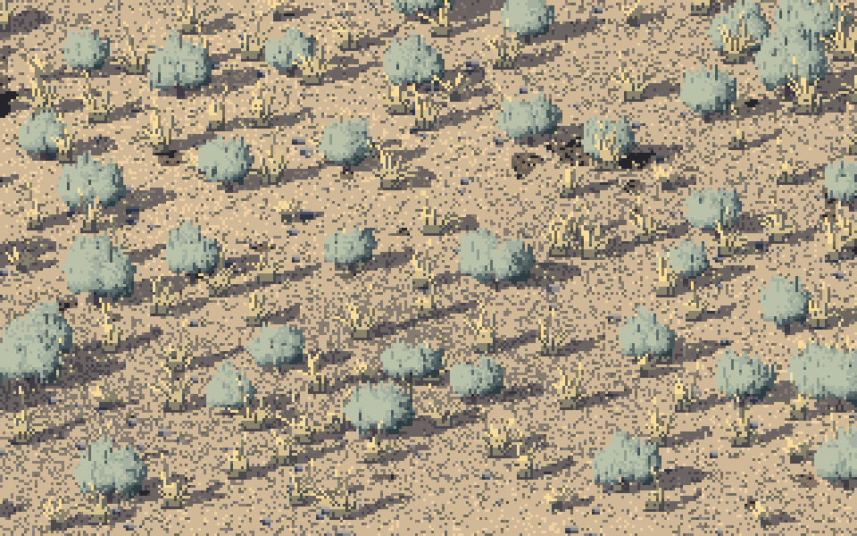
51. elements/steppe/stage2/iso_b_3x.pngRead: elements/steppe/refs/sagebrush_aerial/_sheet.jpg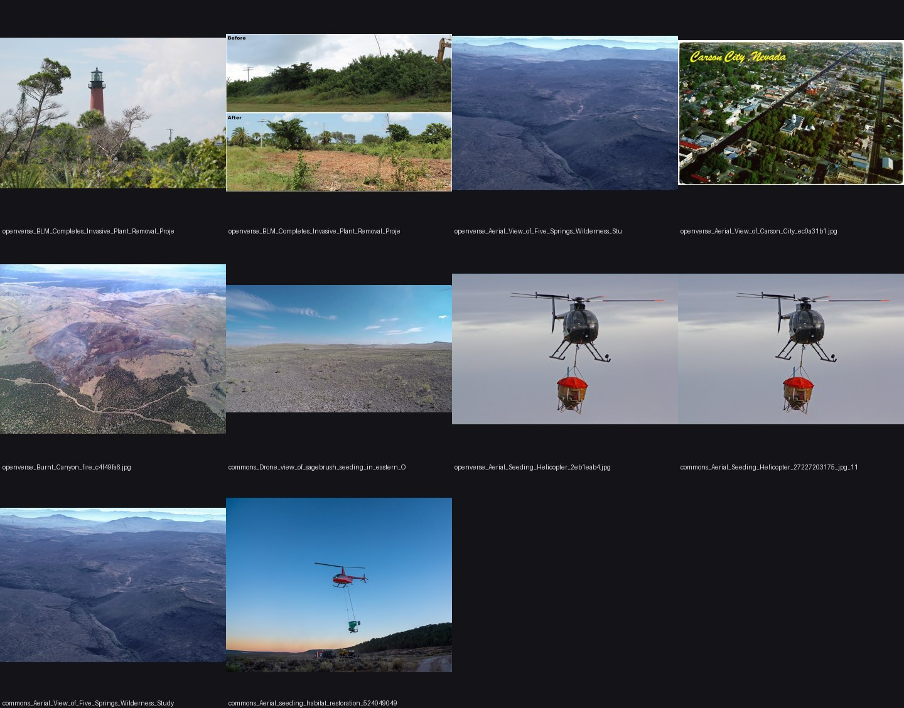
52. elements/steppe/refs/sagebrush_aerial/_sheet.jpgBash: Fetch more oblique sage and pine photos
cd ~/work/pixelart-studies/elements/steppe/refs; T=~/work/pixelart-studies/tools/imgfetch.py for q in "sagebrush hillside" "sagebrush drone" "sage flat overlook" "ponderosa pine savanna" "bitterbrush purshia" "idaho fescue"; do d=$(echo $q | tr ' ' '_'); python3 $T "$q" -n 12 -o $d --sheet >/dev/null 2>&1 & done; wait; ls # output: big_sagebrush_shrub bitterbrush_purshia bitterbrush_shrub bluebunch_wheatgrass ferrari_contact.png idaho_fescue ponderosa_pine_crown_needles ponderosa_pine_parkland ponderosa_pine_savanna ponderosa_pine_tree_open sage_ds_0.png sage_ds_1.png sage_ds_2.png sage_ds_3.png sage_ds_4.png sage_ds_all.png sage_flat_overlook sagebrush_aerial sagebrush_drone sagebrush_hillside sagebrush_steppe_washington sagebrush_winter_snow shrub_steppe_basalt
Read: elements/steppe/refs/sagebrush_hillside/_sheet.jpgRead: elements/steppe/refs/sagebrush_drone/_sheet.jpg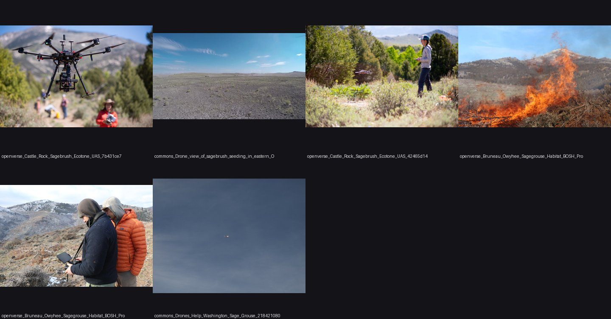
53. elements/steppe/refs/sagebrush_drone/_sheet.jpg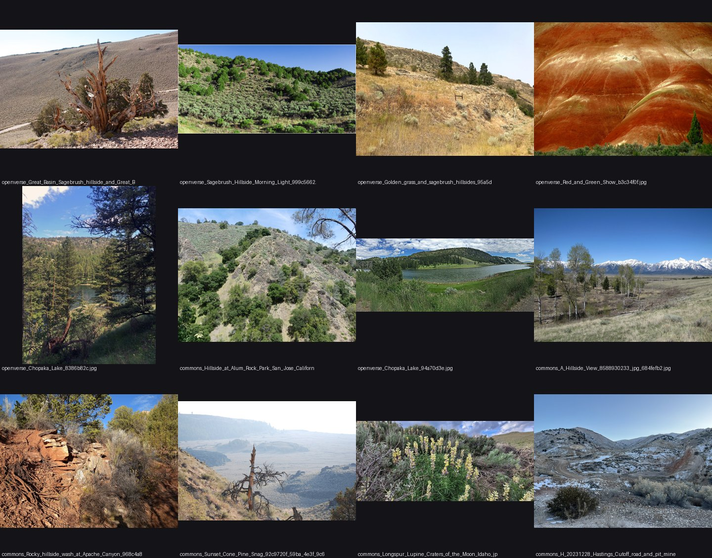
54. elements/steppe/refs/sagebrush_hillside/_sheet.jpgRead: elements/steppe/refs/ponderosa_pine_savanna/_sheet.jpg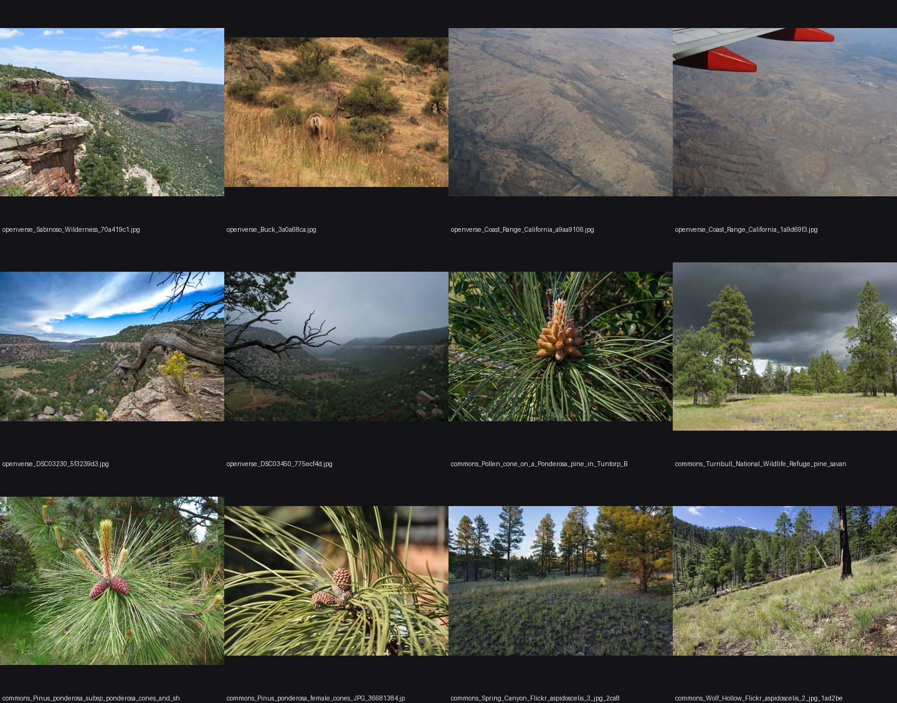
55. elements/steppe/refs/ponderosa_pine_savanna/_sheet.jpgBash: Find hillside and savanna photo filenames
cd ~/work/pixelart-studies/elements/steppe/refs; ls sagebrush_hillside ponderosa_pine_savanna | grep -i -E "morning|golden|turnbull|wolf|spring" # output: commons_Spring_Canyon_Flickr_aspidoscelis_3_jpg_2ca8893c.jpg commons_Turnbull_National_Wildlife_Refuge_pine_savanna_j_f9182dfb.jpg commons_Wolf_Hollow_Flickr_aspidoscelis_2_jpg_1ad2bee2.jpg openverse_Golden_grass_and_sagebrush_hillsides_95a5decc.jpg openverse_Sagebrush_Hillside_Morning_Light_999c5662.jpg
Read: elements/steppe/refs/sagebrush_hillside/openverse_Sagebrush_Hillside_Morning_Light_999c5662.jpg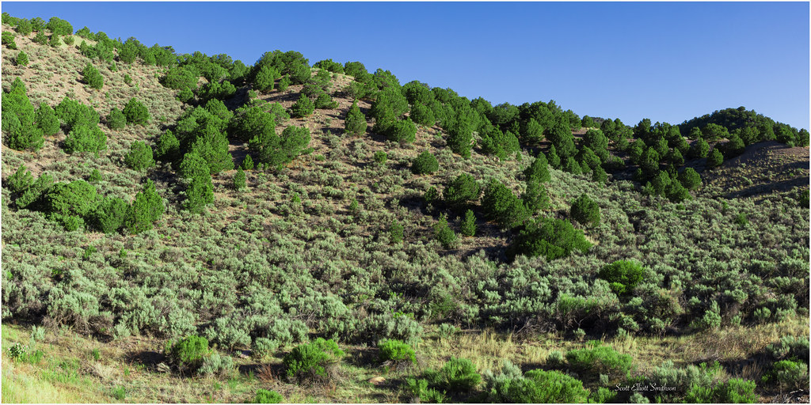
56. elements/steppe/refs/sagebrush_hillside/openverse_Sagebrush_Hillside_Morning_Light_999c5662.jpgRead: elements/steppe/refs/ponderosa_pine_savanna/commons_Turnbull_National_Wildlife_Refuge_pine_savanna_j_f9182dfb.jpg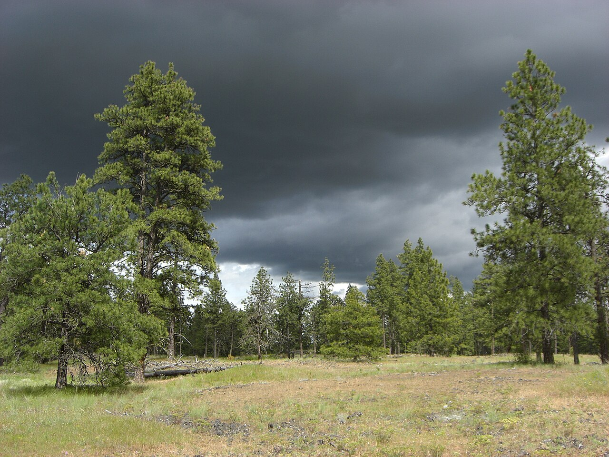
57. elements/steppe/refs/ponderosa_pine_savanna/commons_Turnbull_National_Wildlife_Refuge_pine_savanna_j_f9182dfb.jpgBash: Crop iso scene at 6x
cd ~/work/pixelart-studies/elements/steppe; python3 -c "
from PIL import Image
im=Image.open('stage2/iso_b_3x.png'); im=im.crop((0,300,480,600)); im=im.resize((im.width*2,im.height*2),Image.NEAREST); im.save('(tmp))"
# output:
(Bash completed with no output)Read: (tmp)58. (tmp)
Bash: Calm the ground texture and soften crust
cd ~/work/pixelart-studies/elements/steppe; python3 - <<'EOF'
s=open('world.py').read()
s=s.replace(''' fine = vnoise(X, Z, np.maximum(0.03, 1.2 / ppm), seed + 2) - 0.5 # ~1px grain
base = 3.0 + und + fine * 0.9 * np.clip(ppm / 8, 0.2, 1.0)
step = np.clip(sp.quantize(base, ordered=False, rng=np.random.default_rng(seed)), 1, 4)''',''' # the ground is calm: flat lit loess, a slow undulation dithered only near its seams, and
# sparse deliberate specks (Ferrari's ground is mostly flat, the marks carry the texture)
base = 3.0 + und
step = np.clip(sp.quantize(base, ordered=True, bayer=sp.BAYER4), 2, 4)
r1 = vnoise(X, Z, np.maximum(0.02, 0.7 / ppm), seed + 2)
r2 = vnoise(X, Z, np.maximum(0.02, 0.7 / ppm), seed + 12)
step = np.where((r1 > 0.86) & (ppm > 3), step - 1, step)
step = np.where((r2 > 0.9) & (ppm > 3), np.minimum(4, step + 1), step)''')
s=s.replace(''' crust = cr < gp["crust"] * 0.62
lump = vnoise(X, Z, np.maximum(0.025, 1.0 / ppm), seed + 4)
cstep = np.where(lump > 0.62, 2, np.where(lump > 0.3, 1, 0))''',''' edge = vnoise(X, Z, np.maximum(0.02, 0.8 / ppm), seed + 5) - 0.5
crust = (cr + edge * 0.12) < gp["crust"] * 0.62
lump = vnoise(X, Z, np.maximum(0.025, 1.0 / ppm), seed + 4)
cstep = np.where(lump > 0.45, 2, np.where(lump > 0.18, 1, 0))''')
open('world.py','w').write(s)
p=open('palette.py').read()
p=p.replace("CRUST: (116, 100, 82),","CRUST: (150, 128, 102),")
open('palette.py','w').write(p)
EOF
echo ok
# output:
okBash: Single sage colour test side and iso
cd ~/work/pixelart-studies/elements/steppe; cat > s2_sage.py <<'EOF'
"""Stage 2: one sage in colour, side light and iso, 8x, beside photo crops."""
import sys, numpy as np, sp, sage, scene, palette, world
from PIL import Image
tag = sys.argv[1] if len(sys.argv) > 1 else "a"
pal = palette.Palette("summer", "noon")
def cell(w, h, cam_el, seed, az=25, el=40, W=64, H=52, **kw):
Lw = scene.sun_world(az, el)
L = scene.view_light(Lw, cam_el)
cam = world.Iso(W, H, el=max(cam_el, 1), ppm=24)
cv = sp.Canvas(W, H)
world.paint_ground(cv, cam, world.GroundParams(seed=seed, litter=0.3, stones=0.2), 1)
rng = np.random.default_rng(seed)
spr, bx, by = scene.sage_sprite(w, h, rng, L, **kw)
ox, oy = W // 2 - bx, H - 10 - by
scene._shadow_done = np.zeros((H, W), bool)
scene._cast_shadow(cv, cam, spr, ox, oy, (W // 2) / 24, 10 / (24 * cam.s), 24, Lw, 0)
cv.blit(spr, ox, oy)
return cv.render(pal)
side = [cell(56, 38, 5, s) for s in range(3)]
iso = [cell(24, 21, 30, s, W=40, H=36) for s in range(3)] + [cell(40, 34, 30, 7)]
sp.save(sp.hstack([sp.upscale(c, 6) for c in side], ["side 6x"] * 3), f"stage2/s2_sage_side_{tag}.png")
sp.save(sp.hstack([sp.upscale(c, 8) for c in iso[:3]] + [sp.upscale(iso[3], 5)], ["iso 24px 8x"] * 3 + ["iso 40px 5x"]), f"stage2/s2_sage_iso_{tag}.png")
EOF
nice python3 s2_sage.py a
# output:
(Bash completed with no output)Read: elements/steppe/stage2/s2_sage_iso_a.pngRead: elements/steppe/stage2/s2_sage_side_a.png59. elements/steppe/stage2/s2_sage_iso_a.png
60. elements/steppe/stage2/s2_sage_side_a.png
Bash: Locate field marks function
cd ~/work/pixelart-studies/elements/steppe; grep -n "_field_marks" sage.py | head; grep -n "^def \|^ # " sage.py | sed -n 1,60p # output: 124: _field_marks(cv, clumps, p, rng, cx, gy, w, h, L, sw) 245:def _field_marks(cv, clumps, p, rng, cx, gy, w, h, L, sw): 28:def sun_vec(az, el): 72:def _ellipse_top(cx, cy, rx, ry, x): 77:def paint_bush(p, rng, pad=6): 88: # --- clumps: lumps of the dome 99: # a centre crown clump over them, if tall enough 104: # --- trunks (behind) 129: # --- bitterbrush: more open (holes onto the stems), spiky twig ends 136: # --- twig tips, stalks, snow on the caps 165:def _spray_marks(cv, clumps, p, rng, cx, gy, w, h, L, sw, W, H): 167: # --- clump bodies: the dark that shows between sprays 245:def _field_marks(cv, clumps, p, rng, cx, gy, w, h, L, sw): 277: # upright marks 293: # caps: upright lit dabs over a dark tuck, thickest in the halftone (the turn) 308: # finger tips along the crest: short upright columns with gaps
Read: elements/steppe/sage.pyBash: Density-carries-the-turn sage marks; narrow ground seams
cd ~/work/pixelart-studies/elements/steppe; python3 - <<'EOF'
s=open('sage.py').read()
a=s.index(" m = f > -9\n q = np.clip(sp.quantize(f + rng.normal(0, p[\"noise\"], f.shape), ordered=False, rng=rng), 0, NS - 1)")
b=s.index(" cv.put(m, SAGE, q)\n # finger tips along the crest")
new=''' m = f > -9
# crevices: where one clump meets another, the light can't reach (1-px dark seam)
# base values: the mass is calm (three bases: shadow 1, reflected 2, lit halftone 3);
# the light is carried by marks whose density follows the field (density carries the turn)
q = np.where(f < 1.7, 1, np.where(f < 3.0, 2, 3)).astype(np.int16)
q = np.where(f < 0.6, 0, q)
# soften the reflected band into the shadow with a stochastic seam
seam = (f > 1.3) & (f < 2.1)
q[seam & (rng.random(f.shape) < 0.5)] = 1
ys, xs = np.nonzero(m)
order = rng.permutation(len(ys))
dens_lit = p["caps"]
for i in order:
y, x = ys[i], xs[i]
v = f[y, x]
r = rng.random()
if v >= 3.0:
t = min(1.0, (v - 3.0) / 2.4) # 0 at the terminator .. 1 full light
if r < dens_lit * (0.35 + 1.6 * t):
# an upright lit mark: 1 px wide, 2-3 tall, top pixel brightest, dark tuck below
ln = 2 + (rng.random() < 0.45)
for k in range(ln):
yy = y - k
if 0 <= yy < H and m[yy, x]:
q[yy, x] = 5 if (k == ln - 1 and t > 0.45) else 4
if y + 1 < H and m[y + 1, x] and q[y + 1, x] <= 3:
q[y + 1, x] = 2
elif r < dens_lit * (0.35 + 1.6 * t) + p["slots"] * (1.5 - t):
ln = 2 + (rng.random() < 0.5)
for k in range(ln):
if 0 <= y + k < H and m[y + k, x] and q[y + k, x] <= 3:
q[y + k, x] = 1 if k == 0 else 2
elif v >= 1.4:
if r < p["flecks"] * 2.0:
for k in range(1 + (rng.random() < 0.5)):
if 0 <= y - k < H and m[y - k, x]:
q[y - k, x] = 3 if (v > 2.4 and k == 0) else 2
else:
if r < p["flecks"] * 0.6:
q[y, x] = 2
'''
s=s[:a]+new+s[b:]
s=s.replace("caps=0.10, # field mode: upright lit dabs over a dark tuck, per px","caps=0.16, # field mode: upright lit marks over a dark tuck, per px (x light)")
open('sage.py','w').write(s)
w=open('world.py').read()
w=w.replace(''' base = 3.0 + und
step = np.clip(sp.quantize(base, ordered=True, bayer=sp.BAYER4), 2, 4)''',''' base = 3.0 + und
fl = np.floor(base)
fr = np.clip((base - fl - 0.5) * 3.0 + 0.5, 0, 1) # dither only in a narrow seam
step = np.clip(sp.quantize(fl + fr, ordered=True, bayer=sp.BAYER4), 2, 4)''')
open('world.py','w').write(w)
EOF
nice python3 s2_sage.py b
# output:
(Bash completed with no output)Read: elements/steppe/stage2/s2_sage_side_b.pngRead: elements/steppe/stage2/s2_sage_iso_b.png61. elements/steppe/stage2/s2_sage_iso_b.png
 62. elements/steppe/stage2/s2_sage_side_b.png
62. elements/steppe/stage2/s2_sage_side_b.png
Agent: Critique sagebrush study imagesBash: Peek at conifer student's tree code and images
cd ~/work/pixelart-studies/elements/conifers; head -30 tree.py; ls stage1; python3 -c "
from PIL import Image
for f in ['stage1/n6.png','stage1/c2.png']:
print(f, Image.open(f).size)"
# output:
"""Conifer geometry in metres: trunk, branches, and foliage points (sprays).
A tree is built the way it grows: a trunk (with lean, taper, buttress flare), branches set along
it in whorls or scattered, each branch a curve with species-specific droop/upsweep, and foliage
as *sprays* strung along the outer part of each branch. Each spray is sampled as points that
carry: position, spray normal (flat sprays face up-ish), a stroke direction (how the mark is
drawn), branch id and tier id (for clump light), and "pad" coordinates that say where in the
branch's foliage pad the point sits (top/underside/tip), which the painter turns into light.
y is up. x right, z toward the viewer.
"""
import numpy as np
from dataclasses import dataclass, field
GOLD = np.pi * (3 - np.sqrt(5))
@dataclass
class Species:
name: str
# crown silhouette: radius(t) for t in [0,1] from crown base to top, as r_max * f(t)
crown_pow: float = 1.0 # 1 = cone; <1 = fuller (bullet); >1 = concave spire
crown_round_top: float = 0.0 # 0 = pointed; 1 = flat/round top (old growth)
crown_ratio: float = 0.6 # crown length / height (young trees override)
rmax_frac: float = 0.18 # crown max radius / height
# branching
whorled: bool = True
per_whorl: tuple = (4, 6)
internode: float = 0.55 # metres between branch levels (young); scales with size
base_angle: float = 0.0 # radians above horizontal at the crown middle
b1.png
b2.png
b3.png
c1.png
c2.png
g1.png
n1.png
n2.png
n2_zoom.png
n3.png
n4.png
n5.png
n6.png
stage1/n6.png (1458, 576)
stage1/c2.png (1006, 1922)Read: elements/conifers/stage1/n6.png 63. elements/conifers/stage1/n6.png
63. elements/conifers/stage1/n6.png
Write: elements/steppe/pine.py
"""pine: ponderosa pine (Pinus ponderosa), open-grown, as in the east-Cascade parkland.
Read from the photos (Turnbull NWR savanna, the 1939 Keen tree-class photos, Dixie Mountain,
the Agropyron/Pinus parkland overlook):
- one straight trunk, thick, bare for the lower third to half of the tree (self-pruned);
bark in big orange-cinnamon plates split by black furrows (the jigsaw), the plates long and
vertical; young trees ("blackjacks") are dark grey-brown;
- the crown is OPEN and CLUMPY: a few big branch masses (pads) held out on nearly horizontal
limbs that droop and then turn up at the ends; sky shows between the masses and the limbs are
visible as dark lines in the gaps; old trees go flat- or round-topped;
- the needles are long and grouped in tufts at the branch ends: each pad is a heap of bristly
tufts, lit yellow-green on top and on the sun side, the underside a dark blue-green;
- at every distance the lit tufts catch the light as small starbursts.
Construction (index canvas; NEEDLE steps 0..5, BARK steps 0..4):
1. trunk: tapered column, bark plates as a vertically stretched Voronoi (furrows = cell edges,
darkest step), lit across the cylinder;
2. limbs: clean-run arcs from the trunk, dark;
3. pads: flattened ellipsoids at the limb ends (and along the outer half), far ones first;
a calm base in three values (shadow 1 / reflected 2 / lit halftone 3) from the pad normal
blended with the crown's big form, a dark band along each pad's underside;
4. tufts: small starburst marks (lit 4, top 5) whose density follows the light, and bristles
(1-2 px needles) radiating from the pad rims.
"""
import numpy as np
from scipy import ndimage as ndi
import sp
from sp import NEEDLE, BARK
from sage import sun_vec
NS = 6
class PineParams(dict):
DEFAULT = dict(
h=120, # tree height, px
crown_frac=0.55, # crown length / height
width=0.42, # crown max width / height
age="mature", # "young" (conical, dark bark) | "mature" | "old" (flat top, few big limbs)
limbs=None, # number of limbs (None: from size)
pad=0.34, # pad radius as a fraction of the limb length
tufts=0.22, # lit tuft density (x light)
bristle=0.45, # rim bristles per rim px
big_form=0.5,
term=0.30,
lean=0.0,
snow=0.0,
L=None, az=35, el=40,
)
def __init__(self, **kw):
super().__init__(self.DEFAULT)
self.update(kw)
def _crown_r(t, age):
"""Crown half-width profile (0..1) from crown base t=0 to top t=1."""
if age == "young":
return np.clip((1 - t) ** 0.9 * 1.0 + 0.08, 0, 1)
if age == "old":
return np.clip(np.sin(np.pi * (0.15 + 0.8 * t)) ** 0.5 * (1.05 - 0.25 * t), 0, 1)
return np.clip(np.sin(np.pi * (0.08 + 0.84 * t)) ** 0.7 * (1.0 - 0.35 * t) + 0.05, 0, 1)
def paint_pine(p, rng, pad=8):
h = float(p["h"])
cw = h * p["width"]
W, H = int(cw * 1.35 + 2 * pad), int(h + 2 * pad)
cv = sp.Canvas(W, H)
cx, gy = W / 2.0, H - pad
L = np.asarray(p["L"]) if p.get("L") is not None else sun_vec(p["az"], p["el"])
age = p["age"]
top_y = gy - h
cb_y = gy - h * (1 - p["crown_frac"]) # crown base
# trunk centreline
lean = p["lean"] + rng.normal(0, 0.02)
def tx(y):
t = (gy - y) / h
return cx + lean * (gy - y) + np.sin(t * 5 + rng_phase) * h * 0.004
rng_phase = rng.uniform(0, 6.28)
wb = max(1.0, h * (0.034 if age != "young" else 0.024))
# ---------------------------------------------------------------- trunk + bark
_trunk(cv, p, rng, tx, gy, top_y, wb, L, h)
# ---------------------------------------------------------------- limbs and pads
nl = p["limbs"] or int(np.clip(h * p["crown_frac"] / (7 if age != "old" else 10), 4, 22))
limbs = []
for i in range(nl):
t = (i + rng.uniform(0.2, 0.8)) / nl # 0 crown base .. 1 top
y0 = cb_y - t * (cb_y - top_y) * 0.92
side = rng.choice([-1, 1]) if i % 2 == 0 else -limbs[-1]["side"] if limbs else 1
depth = rng.uniform(-1, 1) # -1 far side .. 1 near side
reach = cw / 2 * _crown_r(t, age) * rng.uniform(0.65, 1.05)
reach *= np.sqrt(max(0.15, 1 - depth ** 2 * 0.6)) # foreshortened toward/away
if reach < 2:
reach = 2
limbs.append(dict(t=t, y0=y0, side=side, depth=depth, reach=reach))
# the leader / top tuft
limbs.append(dict(t=1.0, y0=top_y + h * 0.04, side=0, depth=0.2, reach=max(2, cw * 0.12)))
pads = []
for lb in limbs:
x0 = tx(lb["y0"])
if lb["side"] == 0:
pts = [(x0, lb["y0"] + 4), (x0, lb["y0"])]
end = pts[-1]
else:
ang = lb["side"] * rng.uniform(1.25, 1.65) # near horizontal
bend = -lb["side"] * rng.uniform(0.3, 0.8) # tips turn up
pts = sp.arc_points(x0, lb["y0"], ang, lb["reach"], bend, nseg=3)
# droop in the middle
pts = [(x, y + np.sin(np.pi * k / 3) * lb["reach"] * 0.08) for k, (x, y) in enumerate(pts)]
end = pts[-1]
lb["pts"] = pts
# pads at the tip and along the outer half
npad = 1 + (lb["reach"] > 10) + (lb["reach"] > 22 and rng.random() < 0.7)
for k in range(npad):
f = 1.0 - k * rng.uniform(0.28, 0.4)
j = min(len(pts) - 1, int(round(f * (len(pts) - 1))))
px, py = pts[j]
r = max(1.8, lb["reach"] * p["pad"] * rng.uniform(0.75, 1.2) * (1.15 if k == 0 else 0.9))
if age == "young":
r *= 0.85
pads.append(dict(x=px + rng.normal(0, 0.8), y=py - r * 0.18, rx=r, ry=r * rng.uniform(0.5, 0.68),
z=lb["depth"] + rng.normal(0, 0.1), t=lb["t"]))
# limbs drawn behind pads but in front of the trunk when on the near side
for lb in sorted(limbs, key=lambda l: l["depth"]):
if lb["side"] == 0:
continue
pix = sp.polyline_clean(lb["pts"])
thick = 2 if (wb > 3 and lb["reach"] > 14) else 1
for i, (x, y) in enumerate(pix):
for k in range(thick if i < len(pix) * 0.5 else 1):
cv.px(x, y + k, BARK, 0 if k else 1)
# ---------------------------------------------------------------- pad field
Y, X = np.mgrid[0:H, 0:W].astype(float)
f = np.full((H, W), -9.0)
crown_cy = (cb_y + top_y) / 2
crown_ry = (cb_y - top_y) / 2 + 1
bu = (X - cx) / (cw / 2)
bv = (crown_cy - Y) / crown_ry
nb = np.stack([bu, bv * 0.9 + 0.25, 0.5 + 0 * bu], -1)
nb /= np.linalg.norm(nb, axis=-1, keepdims=True)
pads.sort(key=lambda q: q["z"])
owner = np.full((H, W), -1, int)
for i, pd in enumerate(pads):
x0, x1 = int(max(0, pd["x"] - pd["rx"] - 2)), int(min(W, pd["x"] + pd["rx"] + 3))
y0, y1 = int(max(0, pd["y"] - pd["ry"] - 2)), int(min(H, pd["y"] + pd["ry"] + 3))
if x1 <= x0 or y1 <= y0:
continue
sub = (slice(y0, y1), slice(x0, x1))
dx = (X[sub] - pd["x"]) / pd["rx"]
dy = (Y[sub] - pd["y"]) / pd["ry"]
ang = np.arctan2(dy, dx)
lump = 1 + 0.12 * np.sin(5 * ang + rng.uniform(0, 6.28)) + 0.08 * np.sin(8 * ang + rng.uniform(0, 6.28))
d2 = (dx * dx + dy * dy) / lump ** 2
inside = d2 <= 1
nz = np.sqrt(np.clip(1 - d2, 0, 1))
# pads are flat on top: bias the normal upward
nl = np.stack([dx / lump, -dy / lump * 1.3 + 0.35, nz + 0.1], -1)
nl /= np.linalg.norm(nl, axis=-1, keepdims=True)
nn = nl * (1 - p["big_form"]) + nb[sub] * p["big_form"]
nn /= np.linalg.norm(nn, axis=-1, keepdims=True)
lit = np.clip(nn @ L, 0, 1)
s = np.where(lit < p["term"], 0.8 + 1.6 * lit / p["term"],
3.1 + 2.4 * (lit - p["term"]) / (1 - p["term"]))
s = s - np.clip((dy - 0.05) / 0.95, 0, 1) * 2.2 # the dark underside
s = s - (1 - (pd["z"] + 1) / 2) * 0.7 # far-side pads sit in the crown's shade
fs = f[sub]
fs[inside] = s[inside]
f[sub] = fs
os_ = owner[sub]
os_[inside] = i
owner[sub] = os_
m = f > -9
q = np.where(f < 1.6, 1, np.where(f < 3.0, 2, 3)).astype(np.int16)
q = np.where(f < 0.5, 0, q)
# where a nearer pad overlaps a farther one, its lower rim casts a 1-px dark seam
edge = m & (ndi.grey_erosion(owner, size=3) != ndi.grey_dilation(owner, size=3))
q[edge & (f < 3.4)] = np.minimum(q[edge & (f < 3.4)], 1)
# tufts: starbursts of the lit steps, density following the light
ys, xs = np.nonzero(m)
order = rng.permutation(len(ys))
big = h >= 90
for i in order:
y, x = ys[i], xs[i]
v = f[y, x]
if v < 3.0:
if v > 1.8 and rng.random() < 0.05:
q[y, x] = 3
elif rng.random() < 0.03:
q[y, x] = 2
continue
t = min(1.0, (v - 3.0) / 2.4)
if rng.random() < p["tufts"] * (0.3 + 1.5 * t):
hi = 5 if t > 0.5 else 4
pts = [(0, 0, hi), (-1, 0, 4), (1, 0, 4)] if not big else \
[(0, 0, hi), (-1, 0, 4), (1, 0, 4), (0, -1, 4), (-1, -1, 3), (1, -1, 3)]
if rng.random() < 0.5:
pts = pts[:1] + [(rng.choice([-1, 1]), -1, 4)]
for ddx, ddy, st in pts:
xx, yy = x + ddx, y + ddy
if 0 <= xx < W and 0 <= yy < H and m[yy, xx]:
q[yy, xx] = max(q[yy, xx], st)
if y + 1 < H and m[y + 1, x] and q[y + 1, x] <= 3:
q[y + 1, x] = 1 if t < 0.4 else 2
cv.put(m, NEEDLE, q)
# bristles: needles radiating from the pad rims (upward and outward), and gaps
rim = m & ~ndi.binary_erosion(m)
ys, xs = np.nonzero(rim)
for y, x in zip(ys, xs):
if rng.random() > p["bristle"]:
continue
i = owner[y, x]
if i < 0:
continue
pd = pads[i]
dx, dy = x - pd["x"], (y - pd["y"]) * 1.6
nrm = np.hypot(dx, dy) + 1e-6
ux, uy = dx / nrm, dy / nrm
if uy > 0.55: # the underside hangs: few bristles below
if rng.random() > 0.25:
continue
ln = 1 + (rng.random() < 0.5) + (big and rng.random() < 0.3)
st = int(q[y, x])
for k in range(1, ln + 1):
xx, yy = int(round(x + ux * k)), int(round(y + uy * k))
if 0 <= xx < W and 0 <= yy < H and cv.mat[yy, xx] == 0:
cv.px(xx, yy, NEEDLE, max(1, st - (1 if k == ln else 0)))
if p["snow"] > 0:
top = m & ~np.vstack([np.zeros((1, W), bool), m[:-1]])
ys, xs = np.nonzero(top)
for y, x in zip(ys, xs):
if rng.random() < p["snow"]:
for k in range(1 + (rng.random() < 0.5)):
if 0 <= y + k < H and m[y + k, x]:
cv.mat[y + k, x] = sp.SNOW
cv.step[y + k, x] = 2 if f[y + k, x] > 2.5 else 1
return cv, int(round(cx)), int(gy), dict(pads=len(pads), limbs=len(limbs))
def _trunk(cv, p, rng, tx, gy, top_y, wb, L, h):
H, W = cv.h, cv.w
young = p["age"] == "young"
# bark plates: Voronoi in a vertically stretched space (plates ~ 3:1)
plate_w = max(1.6, wb * 0.45)
npts = int((gy - top_y) * wb * 4 / (plate_w * plate_w * 3) + 20)
sx = rng.uniform(-wb, wb, npts)
sy = rng.uniform(top_y, gy + 2, npts)
for y in range(int(top_y), int(gy) + 2):
t = (gy - y) / h
half = max(0.5, wb / 2 * (1 - 0.85 * t) + (wb * 0.25 if t < 0.03 else 0)) # flare at the foot
xc = tx(y)
x0, x1 = int(np.floor(xc - half)), int(np.ceil(xc + half))
for x in range(x0, x1 + 1):
u = (x + 0.5 - xc) / max(half, 0.5)
if abs(u) > 1.05:
continue
nz = np.sqrt(max(0.0, 1 - min(1, u * u)))
lit = max(0.0, u * L[0] + nz * L[2] * 0.8 + 0.1)
base = 1 + 2.6 * lit
if half >= 2.0 and not young:
dxs = (x - xc) - sx
dys = (y - sy) / 3.0
d = dxs * dxs + dys * dys
a, b = np.partition(d, 1)[:2]
furrow = (np.sqrt(b) - np.sqrt(a)) < 0.55
if furrow:
s = 0
else:
s = int(np.clip(round(base + (0.5 if (np.argmin(d) % 3 == 0) else 0)), 1, 4))
else:
s = int(np.clip(round(base - (0.6 if young else 0)), 0, 4))
if young:
s = min(s, 2)
cv.px(x, y, BARK, s)
Bash: Render first ponderosa pines
cd ~/work/pixelart-studies/elements/steppe; mkdir -p stage3; cat > s3_pine.py <<'EOF'
"""Stage 3: one ponderosa, three ages, colour, beside photos."""
import sys, numpy as np, sp, pine, palette
from PIL import Image
tag = sys.argv[1] if len(sys.argv) > 1 else "a"
pal = palette.Palette("summer", "noon")
cells = []
for age, seed in [("young", 1), ("mature", 2), ("mature", 3), ("old", 4)]:
rng = np.random.default_rng(seed)
cv, bx, by, info = pine.paint_pine(pine.PineParams(h=150, age=age, az=25, el=40), rng)
out = sp.Canvas(cv.w, cv.h)
out.mat[:] = sp.SKY
out.step[:] = np.clip((np.arange(cv.h) / cv.h * 6).astype(int), 0, 5)[:, None]
out.mat[by + 1:] = sp.GROUND
out.step[by + 1:] = 3
out.blit(cv, 0, 0)
cells.append(sp.upscale(out.render(pal), 3))
ph = []
for f in ["refs/ponderosa_pine_savanna/commons_Turnbull_National_Wildlife_Refuge_pine_savanna_j_f9182dfb.jpg",
"~/work/naturalist/plants/photos/ponderosa_pine_forest_eastern_Washington/commons_1939_Class_4C_Keen_Ponderosa_Pine_Tree_Classific_2f5058e7.jpg"]:
ph.append(sp.fit(Image.open(f), cells[0].shape[0]))
sp.save(sp.hstack(cells + ph, ["young", "mature", "mature", "old", "photo", "photo"]), f"stage3/s3_pine_{tag}.png")
EOF
time nice python3 s3_pine.py a
# output:
nice python3 s3_pine.py a 1.12s user 0.18s system 44% cpu 2.904 totalBash: Read critique file
cat ~/work/pixelart-studies/elements/steppe/CRITIQUE.md # output: # Critique (newest first) From the studio critic (second round of critics). These are my reads, not gates: you own the work and decide. Viewing crops are in `elements/_critic2/rN/`. ## Round 3 — 2026-09-26 — `stage2/persp_b_3x`, `stage2/iso_b_3x`, `stage2/s2_sage_side_b`, `stage2/s2_sage_iso_b`, `stage1/s1_sage_k_one_8x` (Heading is Round 3 because Rounds 1–2 from an earlier critic were already here.) What works: - **The single-bush form has arrived.** `s2_sage_side_b` panels 2–3: low, wider than tall, flat-ish crown broken by upright spikes, lit top-left, dark foliage coming down to the ground, a little woody tangle showing underneath. Beside `sage_ds_2/3` that's the plant. - **`persp_b` has a real picture plan.** Long raking cast shadows, warm lit loess, cool sage, a banded dithered sky with clean 2×2 seams. The foreground tufts (pale straight fans with dark gaps between blades) carry contrast inside the stroke, as Ferrari's V16PM grass does. - **Iso cast shadows** are flat, hard-edged, parallel slabs to the lower right. That's the right shorthand at noon. What gives it away: 1. **The foliage texture is rain, not sprigs.** In `s2_sage_side_b` and the iso singles, the lit body is covered evenly with 1-px vertical dark ticks at about the same spacing everywhere. In the photos (Coulee City; `sage_ds_3`) the streaks group: sprig clumps 3–6 px wide, lit on top, with real dark gaps *between* clumps where you see into the bush. Ferrari groups marks the same way (V09's foreground shrubs are leaf clusters, each with its own light and dark pair, not an even field). Group the ticks into clumps and open gaps between them. The fringe on the silhouette and the "form turns through density" read both come from those gaps. 2. **The base is still lobed.** `s2_sage_side_b` panel 1, bottom-left, and `s1_sage_k_one`: the underside is a row of rounded dark scallops. The photo base is streaks continuing down into a dark stem tangle, ragged. In the iso singles (panel 1) the trunk shows as a dark stalk with ground under it, a tree on a stick again. Keep foliage low and let the tangle be darker streaks, not a trunk. 3. **The shadow side is teal.** Side panels: the shadow family is saturated blue-green (a cyan-slate). Moses Coulee at low sun: sage shadow goes deep olive toward near-black, and warm light makes the lit side yellow-olive. Pull the shadow ramp toward olive-umber, and in any warm-hour scene push the lit top toward straw. 4. **`persp_b` is golden hour on the ground only.** The loess glows, but the sage lit planes are the same cool grey-green as noon, with no warm top edge. In Moses Coulee every bush crown catches a warm rim and the floor between is mostly in shadow. Here the floor is fully lit and the long shadows are thin strips. Warm the crowns and widen the shadows until the floor is at least half shadow. 5. **No distance in `persp_b`.** The far band (y≈185–260 on the 3× image) keeps full near-field contrast: dark slate pixels and yellow tuft flecks rig
Read: elements/steppe/stage3/s3_pine_a.png64. elements/steppe/stage3/s3_pine_a.png
Bash: Fill pine crown with clustered pads, thicker trunk
cd ~/work/pixelart-studies/elements/steppe; python3 - <<'EOF'
s=open('pine.py').read()
s=s.replace(''' # limbs drawn behind pads but in front of the trunk when on the near side''',''' # fill the crown envelope: most of a ponderosa crown is overlapping tuft masses, the limbs
# show only in the gaps. Pads cluster around the limbs (clumpy), leaving a few sky holes.
area = (cb_y - top_y) * cw * 0.6
rpad = max(2.0, cw * p["fill_r"])
nfill = int(area / (np.pi * rpad * rpad * 0.55) * p["fill"])
for _ in range(nfill):
lb = limbs[int(rng.integers(len(limbs)))]
if not lb.get("pts"):
continue
k = rng.uniform(0.35, 1.0)
j = min(len(lb["pts"]) - 1, int(round(k * (len(lb["pts"]) - 1))))
px, py = lb["pts"][j]
r = rpad * rng.uniform(0.6, 1.2)
pads.append(dict(x=px + rng.normal(0, rpad * 0.7), y=py + rng.normal(-rpad * 0.3, rpad * 0.5),
rx=r, ry=r * rng.uniform(0.5, 0.7), z=lb["depth"] + rng.normal(0, 0.3),
t=lb["t"]))
# limbs drawn behind pads but in front of the trunk when on the near side''')
s=s.replace(''' snow=0.0,
L=None, az=35, el=40,''',''' snow=0.0,
fill=1.0, # crown fill with extra pads around the limbs (0: limb-end pads only)
fill_r=0.11, # fill pad radius / crown width
L=None, az=35, el=40,''')
s=s.replace('wb = max(1.0, h * (0.034 if age != "young" else 0.024))','wb = max(1.0, h * (0.05 if age != "young" else 0.03))')
s=s.replace(" if half >= 2.0 and not young:"," if half >= 1.5 and not young:")
s=s.replace("pad=0.34, # pad radius","pad=0.30, # pad radius")
open('pine.py','w').write(s)
EOF
nice python3 s3_pine.py b
# output:
(Bash completed with no output)Read: elements/steppe/stage3/s3_pine_b.png 65. elements/steppe/stage3/s3_pine_b.png
65. elements/steppe/stage3/s3_pine_b.png
Bash: Broaden crown, more tufts, zoom crop
cd ~/work/pixelart-studies/elements/steppe; python3 - <<'EOF'
s=open('pine.py').read()
s=s.replace("crown_frac=0.55,","crown_frac=0.66,").replace("width=0.42,","width=0.50,").replace("tufts=0.22,","tufts=0.30,")
open('pine.py','w').write(s)
EOF
nice python3 s3_pine.py c; python3 -c "
from PIL import Image
im=Image.open('stage3/s3_pine_c.png'); im=im.crop((300,40,560,300)); im.resize((im.width*3,im.height*3),Image.NEAREST).save('(tmp))"
# output:
(Bash completed with no output)Read: (tmp)66. (tmp)
Bash: Add lit-end hue shifts; olive sage shadows
cd ~/work/pixelart-studies/elements/steppe; python3 - <<'EOF'
s=open('palette.py').read()
s=s.replace("SHADOW_SHIFT = {SAGE: (-0.006, -0.016),","SHADOW_SHIFT = {SAGE: (0.006, 0.014),")
s=s.replace('''class Palette:''','''# per-material shift of the LIT end (OKLab dL, da, db) applied to the top steps: lit needles
# go yellow-green, lit sage toward straw-silver (the warm sun rim on grey foliage)
LIGHT_SHIFT = {NEEDLE: (0.05, -0.012, 0.06), SAGE: (0.02, -0.004, 0.018), BITTER: (0.03, -0.01, 0.04),
GRASS: (0.01, 0.0, 0.01)}
class Palette:''')
s=s.replace(''' # value contrast: Ferrari keys darks deep''',''' ls = LIGHT_SHIFT.get(m)
if ls:
sun_warm = max(0.0, (self.h["sun"][0] - self.h["sun"][2])) # warm hours push more
for i in range(n):
t = max(0.0, (i - (n - 1) * 0.5) / ((n - 1) * 0.5))
lab[i, 0] += ls[0] * t
lab[i, 1] += ls[1] * t
lab[i, 2] += ls[2] * t * (1 + sun_warm)
# value contrast: Ferrari keys darks deep''')
open('palette.py','w').write(s)
EOF
nice python3 s3_pine.py d; nice python3 s2_sage.py c
# output:
(Bash completed with no output)Read: elements/steppe/stage3/s3_pine_d.png67. elements/steppe/stage3/s3_pine_d.png
Read: elements/steppe/stage2/s2_sage_side_c.png68. elements/steppe/stage2/s2_sage_side_c.png
Bash: Implement grouped sprig mode for sage
cd ~/work/pixelart-studies/elements/steppe; python3 - <<'EOF'
s=open('sage.py').read()
s=s.replace(''' if p["mode"] == "field":
_field_marks(cv, clumps, p, rng, cx, gy, w, h, L, sw)
sprays = []''',''' if p["mode"] == "field":
_field_marks(cv, clumps, p, rng, cx, gy, w, h, L, sw)
sprays = []
elif p["mode"] == "sprig":
_sprig_marks(cv, clumps, p, rng, cx, gy, w, h, L, sw)
sprays = []''')
s=s.replace('mode="field", # "field" (form field + marks) | "spray" (upright capsules)',
'mode="sprig", # "sprig" (grouped sprig clumps) | "field" (form field + marks) | "spray"\n sprig=0.85, # sprig mode: fill (lower = more see-through gaps)\n sprig_px=None, # sprig width px (None: from size)')
s+='''
def _light_field(clumps, p, rng, cx, gy, w, h, L, H, W):
"""Continuous step field over the bush from the clumps (same as the field mode)."""
Y, X = np.mgrid[0:H, 0:W].astype(float)
f = np.full((H, W), -9.0)
bu = (X - cx) / (w / 2)
bv = (gy - Y) / h
nb = np.stack([bu, bv * 1.3 - 0.15, 0.55 + 0 * bu], -1)
nb /= np.linalg.norm(nb, axis=-1, keepdims=True)
order = sorted(range(len(clumps)), key=lambda i: clumps[i]["y"] - clumps[i]["ry"])
for i in order:
c = clumps[i]
ang = np.arctan2(Y - c["y"], X - c["x"])
lump = 1 + 0.08 * np.sin(5 * ang + rng.uniform(0, 6.28)) + 0.06 * np.sin(9 * ang + rng.uniform(0, 6.28))
dx, dy = (X - c["x"]) / c["rx"], (Y - c["y"]) / c["ry"]
d2 = (dx * dx + dy * dy) / lump ** 2
inside = d2 <= 1
nz = np.sqrt(np.clip(1 - d2, 0, 1))
nl = np.stack([dx / lump, -dy / lump, nz + 0.15], -1)
nl /= np.linalg.norm(nl, axis=-1, keepdims=True)
nn = nl * (1 - p["big_form"]) + nb * p["big_form"]
nn /= np.linalg.norm(nn, axis=-1, keepdims=True)
lit = np.clip(nn @ L, 0, 1)
s = np.where(lit < p["term"], 0.9 + 1.6 * lit / p["term"] + p["ambient"],
3.1 + 2.4 * (lit - p["term"]) / (1 - p["term"]))
s = s - np.clip((dy - 0.25) / 0.75, 0, 1) * p["fall"] * 0.6
s = s - np.clip((0.3 - bv) / 0.3, 0, 1) * 1.2
f[inside] = s[inside]
return f
def _sprig_marks(cv, clumps, p, rng, cx, gy, w, h, L, sw):
"""Grouped sprigs (the critic's round-3 note, and the photos at 64 px): the bush is a heap of
small upright wedges, 3-6 px wide, each lit on its rounded top and darkening downward,
streaked inside; between them the dark interior shows (you see into the bush); sprig tops
break the silhouette as the fringe. Values keep the two families: a sprig in the shadow
family never rises above step 2."""
H, W = cv.h, cv.w
f = _light_field(clumps, p, rng, cx, gy, w, h, L, H, W)
m = f > -9
# the interior (what shows in the gaps): two dark values, darker low
q = np.where(f < 2.2, 0, 1).astype(np.int16)
Y = np.mgrid[0:H, 0:W][0]
q = np.where((gy - Y) < h * 0.22, 0, q)
q = np.where(m & (f > 4.2) & (rng.random((H, W)) < 0.3), 2, q)
cv.put(m, SAGE, q)
spw = p["sprig_px"] or float(np.clip(w / 11.0, 2.0, 6.0))
sph = spw * 1.7
ys, xs = np.nonzero(m)
area = len(ys)
n = int(area / (spw * sph * 0.62) * p["sprig"])
# weight toward the upper part of each column (sprigs crowd the crown; the base is tangle)
wts = np.clip((gy - ys) / h, 0.05, 1.0) ** 0.7
wts /= wts.sum()
pick = rng.choice(len(ys), size=n, p=wts)
sprigs = sorted(((ys[i] - sph * 0.3, xs[i]) for i in pick), key=lambda t: t[0])
sunside = 1 if L[0] > 0 else -1
for ty, tx in sprigs:
ty = int(round(ty))
tx = int(tx)
ww = spw * rng.uniform(0.7, 1.25)
hh = sph * rng.uniform(0.7, 1.3)
yy = min(max(ty + int(hh * 0.3), 0), H - 1)
v0 = f[yy, min(max(tx, 0), W - 1)]
if v0 < -8:
continue
shadow = v0 < 3.0
lean = (tx - cx) / (w / 2) * 0.25
for j in range(int(hh)):
t = j / max(1.0, hh - 1)
half = ww / 2 * (0.55 + 0.45 * np.sin(np.pi * min(1.0, 0.25 + t * 0.9))) * (1 - 0.45 * t)
if j == 0:
half *= 0.6 # rounded top
xc = tx + lean * (hh - j) * 0.5
y = ty + j
if not (0 <= y < H):
continue
for x in range(int(np.floor(xc - half + 0.5)), int(np.floor(xc + half + 0.5)) + 1):
if not (0 <= x < W):
continue
if not m[y, x] and j > 1: # only the top may break out
continue
side = (x - xc) * sunside
s = v0 + (0.9 if j == 0 else 0.4 if j == 1 else 0) - 1.8 * t
s += 0.6 if side > 0.4 else (-0.6 if side < -0.4 else 0)
if (x + (j // 2)) % 2 == 0 and t > 0.3: # inner streaks
s -= 0.7
s += rng.normal(0, 0.25)
if shadow:
s = min(s - 1.0, 2.4)
st = int(np.clip(np.floor(s + rng.random() * 0.8), 0, NS - 1))
cv.mat[y, x] = SAGE
cv.step[y, x] = st
'''
open('sage.py','w').write(s)
EOF
nice python3 s2_sage.py d
# output:
(Bash completed with no output)Read: elements/steppe/stage2/s2_sage_side_d.pngRead: elements/steppe/stage2/s2_sage_iso_d.png69. elements/steppe/stage2/s2_sage_side_d.png
70. elements/steppe/stage2/s2_sage_iso_d.png
Bash: Denser narrower sprigs
cd ~/work/pixelart-studies/elements/steppe; python3 - <<'EOF'
s=open('sage.py').read()
s=s.replace("sprig=0.85, # sprig mode","sprig=1.25, # sprig mode")
s=s.replace(" sph = spw * 1.7\n"," sph = spw * 2.2\n")
s=s.replace("spw = p[\"sprig_px\"] or float(np.clip(w / 11.0, 2.0, 6.0))","spw = p[\"sprig_px\"] or float(np.clip(w / 14.0, 2.0, 5.0))")
s=s.replace(''' if shadow:
s = min(s - 1.0, 2.4)''',''' if shadow:
s = min(s - 0.6, 2.6)''')
s=s.replace(" q = np.where(f < 2.2, 0, 1).astype(np.int16)"," q = np.where(f < 2.6, 0, 1).astype(np.int16)")
open('sage.py','w').write(s)
EOF
nice python3 s2_sage.py e
# output:
(Bash completed with no output)Read: elements/steppe/stage2/s2_sage_side_e.png71. elements/steppe/stage2/s2_sage_side_e.png
Bash: Ragged foot with stems; calm plate ground
cd ~/work/pixelart-studies/elements/steppe; python3 - <<'EOF'
s=open('sage.py').read()
s=s.replace(''' cv.put(m, SAGE, q)
spw = p["sprig_px"]''',''' # a ragged foot: the interior's lower edge breaks into streaks and stems, not scallops
for x in range(W):
col = np.nonzero(m[:, x])[0]
if len(col) == 0:
continue
yb = col.max()
cut = int(rng.integers(0, 3))
for k in range(cut):
if yb - k >= 0:
m[yb - k, x] = False
if rng.random() < 0.45 and yb < gy:
for y in range(yb - cut + 1, int(gy) + 1):
cv.px(x, y, SAGESTEM, 0 if rng.random() < 0.6 else 1)
cv.put(m, SAGE, q)
spw = p["sprig_px"]''')
open('sage.py','w').write(s)
t=open('s2_sage.py').read()
t=t.replace("cam = world.Iso(W, H, el=max(cam_el, 1), ppm=24)","cam = world.Iso(W, H, el=30, ppm=24)")
open('s2_sage.py','w').write(t)
EOF
nice python3 s2_sage.py f
# output:
(Bash completed with no output)Read: elements/steppe/stage2/s2_sage_side_f.png72. elements/steppe/stage2/s2_sage_side_f.png
Bash: Fewer converging stems under the sage
cd ~/work/pixelart-studies/elements/steppe; python3 - <<'EOF'
s=open('sage.py').read()
s=s.replace(''' if rng.random() < 0.45 and yb < gy:
for y in range(yb - cut + 1, int(gy) + 1):
cv.px(x, y, SAGESTEM, 0 if rng.random() < 0.6 else 1)''',''' if rng.random() < 0.12 and yb < gy - 1 and abs(x - cx) < w * 0.35:
# a stem from the foliage's foot to the root crown (the tangle)
for (sx, sy) in sp.clean_line(x, yb - cut + 1, cx + (x - cx) * 0.3, gy):
cv.px(sx, sy, SAGESTEM, 0 if rng.random() < 0.6 else 1)''')
open('sage.py','w').write(s)
EOF
nice python3 s2_sage.py g
# output:
(Bash completed with no output)Read: elements/steppe/stage2/s2_sage_side_g.png 73. elements/steppe/stage2/s2_sage_side_g.png
73. elements/steppe/stage2/s2_sage_side_g.png
Bash: Locate grass scatter and band assignment
cd ~/work/pixelart-studies/elements/steppe; grep -n "for X, Z, r in scatter(cam, pl\[\"grass\"\]" -A2 scene.py; grep -n "spr.band\[:\] = band" scene.py
# output:
181: for X, Z, r in scatter(cam, pl["grass"], seed + 303):
182- items.append(("grass", X, Z, r))
183- items.sort(key=lambda t: -t[2])
213: spr.band[:] = bandBash: Grass drifts, distance compression, dithered crust edge
cd ~/work/pixelart-studies/elements/steppe; python3 - <<'EOF'
s=open('scene.py').read()
s=s.replace(''' for X, Z, r in scatter(cam, pl["grass"], seed + 303):
items.append(("grass", X, Z, r))''',''' # grass grows in drifts (swales, lanes between shrubs), rarely against a shrub's foot
shrubs = np.array([(X, Z) for k, X, Z, r in items]) if items else np.zeros((0, 2))
for X, Z, r in scatter(cam, pl["grass"] * 1.6, seed + 303):
drift = world.fbm(np.array(X), np.array(Z), 5.0, seed + 404)
if drift < 0.5 - pl.get("grass_drift", 0.12) + 0.25 * (1 - r) and world._hash(
np.array(int(X * 100)), np.array(int(Z * 100)), seed) > 0.25:
continue
if len(shrubs):
d = np.min(np.hypot(shrubs[:, 0] - X, (shrubs[:, 1] - Z)))
if d < 0.55:
continue
items.append(("grass", X, Z, r))''')
s=s.replace(''' spr.band[:] = band''',''' spr.band[:] = band
if band >= 2:
# distance: the marks compress to two close values; no darkest index (Ferrari lifts
# the black point with distance, the palette's haze does the colour)
m = spr.mat > 0
spr.step[m] = np.where(spr.step[m] <= 2, 2, 3)''')
open('scene.py','w').write(s)
w=open('world.py').read()
w=w.replace(" crust = (cr + edge * 0.12) < gp[\"crust\"] * 0.62"," dith = np.random.default_rng(seed + 8).random(cr.shape) - 0.5\n crust = (cr + edge * 0.10 + dith * 0.10) < gp[\"crust\"] * 0.62")
open('world.py','w').write(w)
EOF
sed -i '' 's/cv = scene.paint_scene(W, H, cam, "summer", "golden", seed=2, sun_az=20, sun_el=18)/cv = scene.paint_scene(W, H, cam, "summer", "golden", seed=2, sun_az=15, sun_el=12)/' s2_try.py
time nice python3 s2_try.py c
# output:
Command did not complete within its 120s timeout and was moved to the background (ID: bridfq36f). Output is being written to: (tmp) You will be notified when it completes. To check interim output, use Read on that file path.
Session cwd remains ~/work/pixelart-studies/aerial/plates; directory changes made by the backgrounded command do not apply to subsequent commands.Bash: Wait for render to finish
sleep 100; ls -la ~/work/pixelart-studies/elements/steppe/stage2/ | grep _c_ # output: <tool_use_error>Blocked: sleep 100 followed by: ls -la ~/work/pixelart-studies/elements/steppe/stage2/ grep _c_. To wait for a condition, use Monitor with an until-loop (e.g. `until <check>; do sleep 2; done`). To wait for a command you started, use run_in_background: true. Do not chain shorter sleeps to work around this block.</tool_use_error>
Write: elements/steppe/backdrop.py
"""backdrop: the coulee wall (tiers of columnar basalt over talus) and far hills, for the horizon
of a standing view.
Read from the Moses Coulee and Hungate Canyon photos, and from Ferrari's V11AM mesa (the closest
passage he painted: a flat-topped cliff with vertical fluting over a striated apron):
- the wall is horizontal TIERS: each tier a row of vertical columns (colonnade) or a band of
hackly blocks (entablature), with a lit face and a shadow face per column;
- between the tiers are narrow benches, sage-dotted; below the lowest tier a talus apron fans out
along its fall lines, grey-brown, with scattered blocks;
- the top is dead flat for long runs (a lava flow top), broken by a few notches;
- with distance the whole wall compresses to two or three values and goes violet (the haze).
"""
import numpy as np
import sp
from sp import BASALT, FAR, SAGE, GROUND
def ridge_profile(W, rng, base, amp, flat=0.7, notch=0.03):
"""A flow-top skyline: long flat runs with small steps and a few notches (row per column)."""
y = np.zeros(W)
cur = base
x = 0
while x < W:
run = int(rng.integers(12, 80)) if rng.random() < flat else int(rng.integers(3, 12))
cur = np.clip(cur + rng.normal(0, amp * 0.25) * (1 if run < 12 else 0.4), base - amp, base + amp)
y[x:x + run] = round(cur)
x += run
# notches: small V gullies
for _ in range(int(W * notch / 10) + 1):
c = int(rng.integers(0, W))
wdt = int(rng.integers(3, 9))
dep = int(rng.integers(2, 6))
for k in range(-wdt, wdt + 1):
if 0 <= c + k < W:
y[c + k] = max(y[c + k], y[c + k] + dep * (1 - abs(k) / (wdt + 1)))
return y.astype(int)
def paint_rim(cv, y_top, y_base, band=2, sun_dx=1, seed=0, tiers=3, sage_bench=True):
"""Paint a basalt coulee wall across the canvas between rows y_top (skyline) and y_base (the
foot of the talus). Only overwrites SKY pixels and pixels above y_base."""
rng = np.random.default_rng(seed)
W = cv.w
H = y_base - y_top
top = ridge_profile(W, rng, y_top, max(2, H * 0.06))
# tier layout (fractions of the wall height, top down): cliff, bench, cliff, ..., talus
talus_frac = rng.uniform(0.28, 0.4)
cliff_h = (1 - talus_frac) * H
edges = np.sort(rng.uniform(0.2, 0.85, tiers - 1)) * cliff_h
edges = np.concatenate([[0], edges, [cliff_h]])
# column widths (colonnade) per tier; entablature tiers get hackly blocks
kinds = ["colonnade" if rng.random() < 0.55 else "entab" for _ in range(tiers)]
colw = [int(rng.integers(2, 5)) for _ in range(tiers)]
# talus foot profile
foot = y_base + np.round(sp.value_noise((1, W), 18, rng)[0] * 3).astype(int)
for x in range(W):
y0 = top[x]
yc = int(y_top + cliff_h + (y0 - y_top) * 0.2)
for y in range(y0, min(cv.h, foot[x] + 1)):
if cv.mat[y, x] not in (sp.SKY, 0) and y > y0 + 1:
continue
d = y - y0 # depth below the skyline
if y < yc:
# which tier
ti = int(np.searchsorted(edges, d * cliff_h / max(1, yc - y0), side="right") - 1)
ti = min(max(ti, 0), tiers - 1)
tier_top = edges[ti] * (yc - y0) / cliff_h
tier_d = d - tier_top
if tier_d < 1.0 and ti > 0:
# bench: the lit flat top of the tier below; sometimes a sage dot
s = 3
mat = BASALT
if sage_bench and rng.random() < 0.25:
mat, s = SAGE, 2
cv.px(x, y, mat, s, band)
continue
if kinds[ti] == "colonnade":
cw = colw[ti]
phase = (x + ti * 7 + int(rng.integers(0, 2) if rng.random() < 0.08 else 0)) % (cw + 1)
if phase == cw:
s = 0 # joint
elif (phase == 0) == (sun_dx < 0):
s = 3 if tier_d < 3 else 2 # lit face
else:
s = 1 # shadow face
# the column bases darken into the bench shadow
if tier_d > (edges[ti + 1] - edges[ti]) * (yc - y0) / cliff_h - 2:
s = max(0, s - 1)
else:
# entablature: hackly blocks, lit tops, darker toward the base of the tier
n = sp.value_noise((1, 1), 1, rng)[0, 0]
bx = (x // 3 + (y // 2) * 5) % 7
s = 2 if bx in (0, 3) else 1
if (y + x // 4) % 5 == 0:
s = 3 if sun_dx > 0 else 2
if rng.random() < 0.08:
s = 0
cv.px(x, y, BASALT, s, band)
else:
# talus apron: fall-line streaks (diagonal both ways from the cliff foot), blocks
t = (y - yc) / max(1, foot[x] - yc)
streak = ((x + (y - yc) // 2) % 5 == 0) or ((x - (y - yc) // 2) % 7 == 0)
s = 2 if not streak else 1
if t < 0.15:
s = 1
if rng.random() < 0.04:
s = 3
if rng.random() < 0.03:
s = 0
cv.px(x, y, BASALT, s, band)
def paint_far_hills(cv, y_line, amp, band=4, seed=0):
"""Far hills: a soft silhouette in the FAR material, two values, above the horizon line."""
rng = np.random.default_rng(seed)
W = cv.w
prof = (sp.value_noise((1, W), 60, rng, octaves=2)[0] - 0.5) * 2 * amp
for x in range(W):
yt = int(round(y_line - amp - prof[x]))
for y in range(max(0, yt), y_line + 1):
if cv.mat[y, x] == sp.SKY:
cv.px(x, y, FAR, 1 if (y - yt) < 2 else 0, band)
Read: elements/steppe/stage2/persp_c_3x.pngToolSearch: select:MonitorBash: Test basalt rim backdrop
cd ~/work/pixelart-studies/elements/steppe; cat > s4_rim.py <<'EOF'
import sys, numpy as np, sp, backdrop, palette
tag = sys.argv[1] if len(sys.argv) > 1 else "a"
cells = []
for hour, band in [("golden", 1), ("noon", 2), ("dusk", 3)]:
cv = sp.Canvas(240, 100)
cv.mat[:] = sp.SKY
cv.step[:] = np.clip(np.arange(100)[:, None] // 12, 0, 5)
cv.mat[80:] = sp.GROUND; cv.step[80:] = 3
backdrop.paint_rim(cv, 22, 80, band=band, sun_dx=1, seed=3)
cells.append(sp.upscale(cv.render(palette.Palette("summer", hour)), 3))
sp.save(sp.hstack(cells, ["golden band1", "noon band2", "dusk band3"]), f"stage4/s4_rim_{tag}.png")
EOF
mkdir -p stage4; nice python3 s4_rim.py a
# output:
(Bash completed with no output)Read: elements/steppe/stage4/s4_rim_a.png74. elements/steppe/stage4/s4_rim_a.png
Bash: Rim with big lit/shadow planes
cd ~/work/pixelart-studies/elements/steppe; python3 - <<'EOF'
s=open('backdrop.py').read()
a=s.index("def paint_rim(")
b=s.index("def paint_far_hills(")
new='''def paint_rim(cv, y_top, y_base, band=2, sun_dx=1, seed=0, tiers=3, sage_bench=True):
"""Paint a basalt coulee wall across the canvas between rows y_top (skyline) and y_base (the
foot of the talus). Big form first: the wall wanders in and out (headlands and bays), so it
is a sequence of lit and shadowed planes; columns and cracks are drawn only where they read
(strong in the light, faint in the shadow). Only overwrites SKY pixels."""
rng = np.random.default_rng(seed)
W = cv.w
H = y_base - y_top
top = ridge_profile(W, rng, y_top, max(2, H * 0.05))
# facing: -1 faces left .. +1 faces right; lit = facing toward the sun side
face = (sp.value_noise((1, W), rng.uniform(18, 40), rng, octaves=2)[0] - 0.5) * 2.6
lit = np.clip(0.45 - face * sun_dx * 0.7, 0, 1)
talus_frac = rng.uniform(0.3, 0.42)
cliff_h = (1 - talus_frac) * H
edges = np.sort(rng.uniform(0.25, 0.8, tiers - 1))
edges = np.concatenate([[0], edges, [1.0]])
kinds = ["colonnade" if rng.random() < 0.6 else "entab" for _ in range(tiers)]
colw = [int(rng.integers(2, 4)) for _ in range(tiers)]
foot = y_base + np.round((sp.value_noise((1, W), 18, rng)[0] - 0.5) * 4).astype(int)
# talus cones under the gullies (where the skyline dips)
dips = np.nonzero(top > np.median(top) + 1)[0]
cones = list(rng.choice(dips, size=min(len(dips), 4), replace=False)) if len(dips) else []
for x in range(W):
y0 = top[x]
yc = int(y_top + cliff_h)
L = lit[x]
for y in range(y0, min(cv.h, foot[x] + 1)):
if cv.mat[y, x] not in (sp.SKY, 0):
continue
if y < yc:
d = (y - y0) / max(1, yc - y0)
ti = min(max(int(np.searchsorted(edges, d, side="right") - 1), 0), tiers - 1)
td = (d - edges[ti]) * (yc - y0) # px below this tier's top
tl = (edges[ti + 1] - edges[ti]) * (yc - y0) # tier height px
base = 0.8 + 2.6 * L
if td < 1.0 and ti > 0:
base += 1.0 # the bench: a lit flat top
if sage_bench and rng.random() < 0.3:
cv.px(x, y, SAGE, 2, band)
continue
if td > tl - 2:
base -= 1.2 # shade under the next ledge
if kinds[ti] == "colonnade":
ph = (x + ti * 5) % (colw[ti] + 1)
if ph == colw[ti]:
base -= 0.9 if L > 0.4 else 0.4 # joint
elif ph == 0:
base += 0.4 * L
else:
if ((x * 3 + y * 7 + ti * 11) % 13) == 0:
base -= 1.0
if ((x + 2 * y) % 9) == 0:
base += 0.5 * L
s = int(np.clip(np.floor(base + rng.random() * 0.6), 0, 4))
else:
t = (y - yc) / max(1, foot[x] - yc)
# nearest cone brightens its sun side
cone = 0.0
for c in cones:
dx = (x - c) / max(3.0, (y - yc) * 1.2 + 3)
if abs(dx) < 1:
cone = max(cone, (1 - abs(dx)) * (0.6 if dx * sun_dx < 0 else -0.3))
base = 1.6 + 0.9 * L * (1 - t) + cone + 0.4 * t
streak = ((x * 2 + (y - yc)) % 7 == 0) or ((x * 2 - (y - yc)) % 9 == 0)
if streak:
base -= 0.6
if t < 0.12:
base -= 0.8 # the cliff foot's shadow
if rng.random() < 0.03:
base += 1.2
s = int(np.clip(np.floor(base + rng.random() * 0.5), 0, 4))
cv.px(x, y, BASALT, s, band)
'''
s=s[:a]+new+s[b:]
open('backdrop.py','w').write(s)
p=open('palette.py').read()
p=p.replace("BASALT: (104, 86, 76), # weathered basalt, brown-black; rust in the light","BASALT: (132, 100, 80), # weathered basalt: brown-black, rust-orange in the light")
p=p.replace("LIGHT_SHIFT = {NEEDLE:","LIGHT_SHIFT = {BASALT: (0.02, 0.02, 0.03), NEEDLE:")
open('palette.py','w').write(p)
EOF
nice python3 s4_rim.py b
# output:
[This command modified 2 files you've previously read: ../../elements/steppe/backdrop.py, ../../elements/steppe/palette.py. Call Read before editing.]Read: elements/steppe/stage4/s4_rim_b.png75. elements/steppe/stage4/s4_rim_b.png
Bash: Brighter, broader lit planes on rim
cd ~/work/pixelart-studies/elements/steppe; python3 - <<'EOF'
s=open('backdrop.py').read()
s=s.replace("face = (sp.value_noise((1, W), rng.uniform(18, 40), rng, octaves=2)[0] - 0.5) * 2.6\n lit = np.clip(0.45 - face * sun_dx * 0.7, 0, 1)",
"face = (sp.value_noise((1, W), rng.uniform(25, 50), rng, octaves=2)[0] - 0.5) * 2.2\n lit = np.clip(0.62 - face * sun_dx * 0.55, 0.05, 1)")
s=s.replace("base = 1.6 + 0.9 * L * (1 - t) + cone + 0.4 * t","base = 2.1 + 0.9 * L * (1 - t) + cone + 0.2 * t")
open('backdrop.py','w').write(s)
EOF
nice python3 s4_rim.py c
# output:
(Bash completed with no output)Read: elements/steppe/stage4/s4_rim_c.png76. elements/steppe/stage4/s4_rim_c.png
Bash: Calm talus; check scene render status
cd ~/work/pixelart-studies/elements/steppe; sed -i '' 's/ if rng.random() < 0.03:\n base += 1.2/X/' backdrop.py; python3 - <<'EOF'
s=open('backdrop.py').read()
s=s.replace(" if rng.random() < 0.03:\n base += 1.2"," if rng.random() < 0.008:\n base += 1.2")
s=s.replace("s = int(np.clip(np.floor(base + rng.random() * 0.5), 0, 4))","s = int(np.clip(np.floor(base + 0.25), 0, 4))")
open('backdrop.py','w').write(s)
EOF
ls stage2 | grep _c_; cat (tmp) | tail -3
# output:
iso_c_3x.pngBash: Wait for perspective render
cd ~/work/pixelart-studies/elements/steppe; until [ -f stage2/persp_c_3x.png ]; do sleep 3; done; echo done # output: Command running in background with ID: buoi39b3h. Output is being written to: (tmp) You will be notified when it completes. To check interim output, use Read on that file path. Session cwd remains ~/work/pixelart-studies/aerial/plates; directory changes made by the backgrounded command do not apply to subsequent commands.
Read: elements/steppe/stage2/iso_c_3x.png77. elements/steppe/stage2/iso_c_3x.png
Bash: Locate mid tussock code
cd ~/work/pixelart-studies/elements/steppe; grep -n "elif h >= 4:" -A14 grass.py # output: 155: elif h >= 4: 156- n = int(w * 1.3) + 3 157- for i in range(n): 158- u = rng.uniform(-1, 1) 159- ln = h * rng.uniform(0.6, 1.05) * (1 - 0.3 * abs(u)) 160- x0 = cx + u * w * 0.25 161- ang = u * p["spread"] * 0.8 162- pix = sp.polyline_clean(sp.arc_points(x0, gy, ang, ln, np.sign(u) * p["bend"] * 0.5, 2)) 163- lit = (u * ls) > -0.2 164- for j, (x, y) in enumerate(pix): 165- t = j / max(1, len(pix) - 1) 166- s = p["dark_step"] if t < 0.3 else (p["lit_step"] if (lit and t > 0.5) else p["mid_step"]) 167- cv.px(x, y, sp.GRASS, s) 168- else: 169- # dab: dark foot, lit top pixel on the sun side
Bash: Fountain-dome mid tussock; calmer litter/crust
cd ~/work/pixelart-studies/elements/steppe; python3 - <<'EOF'
s=open('grass.py').read()
a=s.index(" elif h >= 4:\n n = int(w * 1.3) + 3")
b=s.index(" else:\n # dab: dark foot")
new=''' elif h >= 4:
# a fountain dome: a straw body, strands fanning from the foot to the rim in pairs
# (lit strand, dark gap), tips breaking the rim; darker foot
rx, ry = w / 2.0, float(h)
for y in range(int(gy - ry), gy + 1):
for x in range(int(cx - rx), int(cx + rx) + 1):
u, v = (x - cx) / rx, (gy - y) / ry
if u * u + v * v <= 1.0:
s = p["mid_step"] if v > 0.3 else p["dark_step"]
cv.px(x, y, sp.GRASS, s)
n = int(w * 0.9) + 3
for i in range(n):
u = -1 + 2 * (i + rng.uniform(0.2, 0.8)) / n
ang = u * 1.15
ln = ry * rng.uniform(0.85, 1.2)
ex, ey = cx + np.sin(ang) * rx * 1.05, gy - np.cos(ang) * ln
pix = sp.clean_line(cx + u * rx * 0.3, gy, ex, ey)
lit = (u * ls) > -0.35
for j, (x, y) in enumerate(pix):
t = j / max(1, len(pix) - 1)
if t < 0.25:
continue
s = (p["lit_step"] if lit else p["lit_step"] - 1) if t > 0.45 else p["mid_step"] + 1
cv.px(x, y, sp.GRASS, s)
# the dark partner on the shadow side
if 0.3 < t < 0.9 and rng.random() < 0.6:
xx = x - ls
if 0 <= xx < W and cv.mat[y, xx] == sp.GRASS and cv.step[y, xx] < p["lit_step"] - 1:
cv.step[y, xx] = p["dark_step"] + (1 if t > 0.6 else 0)
'''
s=s[:a]+new+s[b:]
open('grass.py','w').write(s)
w=open('world.py').read()
w=w.replace(" crust = (cr + edge * 0.10 + dith * 0.10) < gp[\"crust\"] * 0.62"," crust = (cr + edge * 0.14 + dith * 0.06) < gp[\"crust\"] * 0.62")
w=w.replace("for X, Z, s in _sites(cam, 0.12, gp[\"litter\"] * 0.5, gp[\"seed\"] + 31):","for X, Z, s in _sites(cam, 0.12, gp[\"litter\"] * 0.25, gp[\"seed\"] + 31):")
open('world.py','w').write(w)
EOF
echo ok
# output:
okBash: Check perspective render progress
ls -la ~/work/pixelart-studies/elements/steppe/stage2/ | grep persp; ps aux | grep s2_try | grep -v grep | head
# output:
-rw-r--r-- 1 user staff 53853 Sep 26 00:19 persp_a_3x.png
-rw-r--r-- 1 user staff 55998 Sep 26 00:24 persp_b_3x.png
user 17736 19.6 0.3 410842048 98240 ?? RN 12:36AM 3:47.89 python3 s2_try.py c
user 17732 0.0 0.0 408598096 432 ?? Ss 12:36AM 0:00.02 /bin/zsh -c source ~/.claude/shell-snapshots/snapshot-zsh-1790303134013-11jj6m.sh 2>/dev/null || true && setopt NO_EXTENDED_GLOB NO_BARE_GLOB_QUAL 2>/dev/null || true && { \builtin unalias -- 'unsetenv'; \builtin unset -f -- 'unsetenv'; } >/dev/null 2>&1 || true && eval 'cd ~/work/pixelart-studies/elements/steppe; python3 - <<'"'"'EOF'"'"'\012s=open('"'"'scene.py'"'"').read()\012s=s.replace('"'"''"'"''"'"' for X, Z, r in scatter(cam, pl["grass"], seed + 303):\012 items.append(("grass", X, Z, r))'"'"''"'"''"'"','"'"''"'"''"'"' # grass grows in drifts (swales, lanes between shrubs), rarely against a shrub'"'"'s foot\012 shrubs = np.array([(X, Z) for k, X, Z, r in items]) if items else np.zeros((0, 2))\012 for X, Z, r in scatter(cam, pl["grass"] * 1.6, seed + 303):\012 drift = world.fbm(np.array(X), np.array(Z), 5.0, seed + 404)\012 if drift < 0.5 - pl.get("grass_drift", 0.12) + 0.25 * (1 - r) and world._hash(\012 np.array(int(X * 100)), np.array(int(Z * 100)), seed) > 0.25:\012 continue\012 if len(shrubs):\012 d = np.min(np.hypot(shrubs[:, 0] - X, (shrubs[:, 1] - Z)))\012 if d < 0.55:\012 continue\012 items.append(("grass", X, Z, r))'"'"''"'"''"'"')\012s=s.replace('"'"''"'"''"'"' spr.band[:] = band'"'"''"'"''"'"','"'"''"'"''"'"' spr.band[:] = band\012 if band >= 2:\012 # distance: the marks compress to two close values; no darkest index (Ferrari lifts\012 # the black point with distance, the palette'"'"'s haze does the colour)\012 m = spr.mat > 0\012 spr.step[m] = np.where(spr.step[m] <= 2, 2, 3)'"'"''"'"''"'"')\012open('"'"'scene.py'"'"','"'"'w'"'"').write(s)\012w=open('"'"'world.py'"'"').read()\012w=w.replace(" crust = (cr + edge * 0.12) < gp[\"crust\"] * 0.62"," dith = np.random.default_rng(seed + 8).random(cr.shape) - 0.5\n crust = (cr + edge * 0.10 + dith * 0.10) < gp[\"crust\"] * 0.62")\012open('"'"'world.py'"'"','"'"'w'"'"').write(w)\012EOF\012sed -i '"'"''"'"' '"'"'s/cv = scene.paint_scene(W, H, cam, "summer", "golden", seed=2, sun_az=20, sun_el=18)/cv = scene.paint_scene(W, H, cam, "summer", "golden", seed=2, sun_az=15, sun_el=12)/'"'"' s2_try.py\012time nice python3 s2_try.py c' && pwd -P >| /tmp/claude-0cdb-cwdBash: KD-tree grass exclusion, visibility zmax, shrub clustering
kill 17736; cd ~/work/pixelart-studies/elements/steppe; python3 - <<'EOF'
s=open('scene.py').read()
s=s.replace(''' shrubs = np.array([(X, Z) for k, X, Z, r in items]) if items else np.zeros((0, 2))
for X, Z, r in scatter(cam, pl["grass"] * 1.6, seed + 303):
drift = world.fbm(np.array(X), np.array(Z), 5.0, seed + 404)
if drift < 0.5 - pl.get("grass_drift", 0.12) + 0.25 * (1 - r) and world._hash(
np.array(int(X * 100)), np.array(int(Z * 100)), seed) > 0.25:
continue
if len(shrubs):
d = np.min(np.hypot(shrubs[:, 0] - X, (shrubs[:, 1] - Z)))
if d < 0.55:
continue
items.append(("grass", X, Z, r))''',''' from scipy.spatial import cKDTree
shrubs = np.array([(X, Z) for k, X, Z, r in items]) if items else np.zeros((0, 2))
tree = cKDTree(shrubs) if len(shrubs) else None
g = np.array(scatter(cam, pl["grass"] * 1.6, seed + 303, zmax=_zvis(cam, pl["grass_size"][1])))
if len(g):
drift = world.fbm(g[:, 0], g[:, 1], 5.0, seed + 404)
keep = drift >= 0.5 - pl.get("grass_drift", 0.12) + 0.25 * (1 - g[:, 2])
keep |= world._hash((g[:, 0] * 100).astype(np.int64), (g[:, 1] * 100).astype(np.int64), seed) < 0.25
if tree is not None:
d, _ = tree.query(g[:, :2])
keep &= d >= 0.55
for X, Z, r in g[keep]:
items.append(("grass", X, Z, r))''')
s=s.replace(''' for X, Z, r in scatter(cam, pl["sage"], seed + 101):
items.append(("sage", X, Z, r))''',''' for X, Z, r in scatter(cam, pl["sage"], seed + 101, zmax=_zvis(cam, pl["sage_size"][1]),
cluster=pl.get("cluster", 0.5)):
items.append(("sage", X, Z, r))''')
s=s.replace('''def scatter(cam, density_per100, seed, zmax=None, xpad=2.0):''','''def _zvis(cam, size_m, min_px=1.0):
"""Farthest distance at which a plant of this size is still >= min_px wide."""
if cam.kind == "iso":
return None
return cam.f * size_m / min_px
def scatter(cam, density_per100, seed, zmax=None, xpad=2.0, cluster=0.0):''')
s=s.replace(''' keep = world._hash(ixs, izs, seed + 3) < 0.85''',''' keep = world._hash(ixs, izs, seed + 3) < 0.85
if cluster > 0:
# shrubs clump: keep probability follows a low-frequency field
fx = (ixs + jx) * cell
fz = np.full_like(fx, (iz + 0.5) * cell, dtype=float)
fld = world.fbm(fx, fz, 4.0 + 6.0 * cluster, seed + 9)
keep &= world._hash(ixs, izs, seed + 4) < np.clip(0.5 + (fld - 0.5) * 3.5 * cluster, 0.08, 1.0)''')
open('scene.py','w').write(s)
EOF
grep -n "bitter\"\], seed" scene.py
# output:
193: for X, Z, r in scatter(cam, pl["bitter"], seed + 202):Bash: Far sage sea, backdrop rim, rerender
cd ~/work/pixelart-studies/elements/steppe; python3 - <<'EOF'
s=open('scene.py').read()
s=s.replace(''' if cam.kind == "persp" and sky:
_sky(cv, cam)''',''' if cam.kind == "persp" and sky:
_sky(cv, cam)
if cam.kind == "persp":
_far_sea(cv, cam, pl, seed)
import backdrop
bd = pl.get("backdrop", "hills")
hy = int(cam.hy)
if bd == "rim":
backdrop.paint_rim(cv, hy - int(cam.H * 0.16), hy + 1, band=3, sun_dx=sun_dx, seed=seed)
elif bd == "hills":
backdrop.paint_far_hills(cv, hy, max(2, int(cam.H * 0.03)), band=4, seed=seed)''')
s=s.replace('''def _sky(cv, cam):''','''def _far_sea(cv, cam, pl, seed):
"""Beyond the distance where a sage is ~2 px wide, the shrubs merge: the ground carries them
as horizontal flecks (foreshortened), their cover modulated by a big swale field so the far
flat has value masses (a darker draw, a paler flat) instead of one even band."""
H, W = cv.h, cv.w
ys, xs = np.mgrid[0:H, 0:W].astype(float)
X, Z = cam.ground_xz(xs + 0.5, ys + 0.5)
zlim = cam.f * pl["sage_size"][0] / 2.5
far = (ys > cam.hy + 0.5) & (Z > zlim)
cover = min(0.9, pl["sage"] / 40.0)
swale = world.fbm(X, Z, 60.0, seed + 55)
local = np.clip(cover + (swale - 0.5) * 1.2, 0.02, 0.95)
# flecks: 2-3 px horizontal dashes at mid distance, single px farther
dash = world.vnoise(X * 0.35, Z, np.maximum(0.3, Z / cam.f * 1.0), seed + 56)
fleck = far & (dash < local)
band = np.searchsorted(cam.bands, Z).astype(np.uint8)
cv.mat[fleck] = sp.SAGE
cv.step[fleck] = np.where(world.vnoise(X, Z, np.maximum(0.3, Z / cam.f * 1.5), seed + 57)[fleck] > 0.55, 3, 2)
cv.band[fleck] = band[fleck]
def _sky(cv, cam):''')
open('scene.py','w').write(s)
EOF
cat > s2_try.py <<'EOF'
import sys, time, numpy as np, sp, world, scene, palette
tag = sys.argv[1] if len(sys.argv) > 1 else "a"
W, H = 320, 200
t0 = time.time()
cam = world.Iso(W, H, el=30, ppm=24)
cv = scene.paint_scene(W, H, cam, "summer", "noon", seed=1)
sp.save(cv.render(palette.Palette("summer", "noon")), f"stage2/iso_{tag}_3x.png", 3)
print("iso", time.time() - t0)
cam = world.Persp(W, H, eye=1.6, f=260, hy=60)
cv = scene.paint_scene(W, H, cam, "summer", "golden", seed=2, sun_az=15, sun_el=12, plants=dict(backdrop="rim"))
sp.save(cv.render(palette.Palette("summer", "golden")), f"stage2/persp_{tag}_3x.png", 3)
print("persp", time.time() - t0)
EOF
time nice python3 s2_try.py d
# output:
iso 2.8519561290740967
persp 8.975033283233643
nice python3 s2_try.py d 4.55s user 0.37s system 47% cpu 10.340 totalRead: elements/steppe/stage2/persp_d_3x.pngRead: elements/steppe/stage2/iso_d_3x.png78. elements/steppe/stage2/iso_d_3x.png
 79. elements/steppe/stage2/persp_d_3x.png
79. elements/steppe/stage2/persp_d_3x.png
Bash: Denser tussocks with body; broken-edge ground masses
cd ~/work/pixelart-studies/elements/steppe; python3 - <<'EOF'
s=open('grass.py').read()
s=s.replace(''' n = p["blades"] or int(w * h / (22 if not fine else 12)) + 5''',''' n = p["blades"] or int(w * h / (9 if not fine else 6)) + 6''')
s=s.replace(''' # the dense base: a dark mound with mid flecks
by0 = int(gy - max(2, h * 0.22))''',''' # the fountain body behind the blades: a mid-straw dome, darker low (the tussock's mass)
rx, ry = w * 0.42, h * 0.62
for y in range(int(gy - ry), gy + 1):
for x in range(int(cx - rx), int(cx + rx) + 1):
u, v = (x - cx) / rx, (gy - y) / ry
if u * u + v * v <= 1.0:
cv.px(x, y, sp.GRASS, p["mid_step"] if v > 0.35 else p["dark_step"] + 1)
# the dense base: a dark mound with mid flecks
by0 = int(gy - max(2, h * 0.22))''')
open('grass.py','w').write(s)
w=open('world.py').read()
w=w.replace(''' fr = np.clip((base - fl - 0.5) * 3.0 + 0.5, 0, 1) # dither only in a narrow seam
step = np.clip(sp.quantize(fl + fr, ordered=True, bayer=sp.BAYER4), 2, 4)''',''' # value masses meet on a broken edge (noise at ~2 px), not a dithered halo
brk = vnoise(X, Z, np.maximum(0.03, 2.0 / ppm), seed + 13) - 0.5
step = np.clip(np.floor(base + brk * 0.5 + 0.5).astype(np.int16), 2, 4)''')
open('world.py','w').write(w)
EOF
nice python3 s2_try.py e
# output:
iso 1.8058912754058838
persp 15.811552047729492Read: elements/steppe/stage2/iso_e_3x.png80. elements/steppe/stage2/iso_e_3x.png
Bash: Zoom iso crop
cd ~/work/pixelart-studies/elements/steppe; python3 -c "
from PIL import Image
im=Image.open('stage2/iso_e_3x.png').crop((60,90,420,330)); im.resize((im.width*2,im.height*2),Image.NEAREST).save('(tmp))"
# output:
(Bash completed with no output)Read: (tmp)81. (tmp)
Bash: Tone down grass; vary pine pad sizes
cd ~/work/pixelart-studies/elements/steppe; python3 - <<'EOF'
p=open('palette.py').read()
p=p.replace("GRASS: (214, 188, 128), # cured bunchgrass (summer)","GRASS: (210, 192, 148), # cured bunchgrass (summer): pale straw, less orange than the loess")
p=p.replace("SEASONS = {\n \"spring\": {GRASS: (132, 164, 88)","SEASONS = {\n \"spring\": {GRASS: (132, 160, 96)")
p=p.replace("\"autumn\": {GRASS: (206, 178, 124)","\"autumn\": {GRASS: (200, 182, 138)")
p=p.replace(" GRASS: (0.01, 0.0, 0.01)}"," GRASS: (0.015, 0.0, 0.0)}")
open('palette.py','w').write(p)
s=open('pine.py').read()
# vary pad sizes strongly and flatten old tops
s=s.replace(" r = rpad * rng.uniform(0.6, 1.2)\n"," r = rpad * rng.lognormal(0.0, 0.45)\n")
s=s.replace(''' r = max(1.8, lb["reach"] * p["pad"] * rng.uniform(0.75, 1.2) * (1.15 if k == 0 else 0.9))''',''' r = max(1.8, lb["reach"] * p["pad"] * rng.lognormal(0.0, 0.35) * (1.15 if k == 0 else 0.9))''')
open('pine.py','w').write(s)
EOF
grep -n "def _crown_r" -A7 pine.py
# output:
58:def _crown_r(t, age):
59- """Crown half-width profile (0..1) from crown base t=0 to top t=1."""
60- if age == "young":
61- return np.clip((1 - t) ** 0.9 * 1.0 + 0.08, 0, 1)
62- if age == "old":
63- return np.clip(np.sin(np.pi * (0.15 + 0.8 * t)) ** 0.5 * (1.05 - 0.25 * t), 0, 1)
64- return np.clip(np.sin(np.pi * (0.08 + 0.84 * t)) ** 0.7 * (1.0 - 0.35 * t) + 0.05, 0, 1)
65-Bash: Old flat-top pine, random limb sides
cd ~/work/pixelart-studies/elements/steppe; python3 - <<'EOF'
s=open('pine.py').read()
s=s.replace(''' return np.clip(np.sin(np.pi * (0.15 + 0.8 * t)) ** 0.5 * (1.05 - 0.25 * t), 0, 1)''',''' # flat-topped: the upper limbs are the longest (an umbrella of big masses)
return np.clip((0.45 + 0.6 * t) * (1.0 if t < 0.88 else (1 - t) / 0.12 * 0.7 + 0.3), 0, 1)''')
s=s.replace(''' side = rng.choice([-1, 1]) if i % 2 == 0 else -limbs[-1]["side"] if limbs else 1''',''' side = rng.choice([-1, 1])''')
s=s.replace(''' limbs.append(dict(t=1.0, y0=top_y + h * 0.04, side=0, depth=0.2, reach=max(2, cw * 0.12)))''',''' if age != "old":
limbs.append(dict(t=1.0, y0=top_y + h * 0.04, side=0, depth=0.2, reach=max(2, cw * 0.12)))''')
open('pine.py','w').write(s)
t=open('s3_pine.py').read()
t=t.replace('pine.PineParams(h=150, age=age, az=25, el=40)','pine.PineParams(h=150, age=age, az=25, el=40, crown_frac=0.45 if age == "old" else 0.66, width=0.6 if age == "old" else 0.5)')
open('s3_pine.py','w').write(t)
EOF
nice python3 s3_pine.py e
# output:
(Bash completed with no output)Read: elements/steppe/stage3/s3_pine_e.png82. elements/steppe/stage3/s3_pine_e.png
Bash: Open up pine crowns again
cd ~/work/pixelart-studies/elements/steppe; python3 - <<'EOF'
s=open('pine.py').read()
s=s.replace("r = rpad * rng.lognormal(0.0, 0.45)","r = rpad * rng.lognormal(-0.1, 0.3)")
s=s.replace("fill=1.0, # crown fill","fill=0.75, # crown fill")
open('pine.py','w').write(s)
t=open('s3_pine.py').read()
t=t.replace('width=0.6 if age == "old" else 0.5)','width=0.62 if age == "old" else 0.36 if age == "young" else 0.5)')
open('s3_pine.py','w').write(t)
EOF
nice python3 s3_pine.py f
# output:
(Bash completed with no output)Read: elements/steppe/stage3/s3_pine_f.png83. elements/steppe/stage3/s3_pine_f.png
Bash: Add pines to scenes; parkland test
cd ~/work/pixelart-studies/elements/steppe; python3 - <<'EOF'
s=open('scene.py').read()
s=s.replace("import sp, sage, grass, world","import sp, sage, grass, world, pine")
s=s.replace('''def grass_sprite(''','''def pine_sprite(h_px, rng, L, age="mature", season="summer"):
sp_ = SEASON_PARAMS[season]
if h_px >= 9:
p = pine.PineParams(h=h_px, age=age, L=L, snow=sp_["snow"] * 0.7,
crown_frac=0.45 if age == "old" else 0.66,
width=0.62 if age == "old" else 0.36 if age == "young" else 0.5)
if h_px < 40:
p.update(bristle=0.2, tufts=0.2, fill=0.9)
cv, bx, by, _ = pine.paint_pine(p, rng, pad=3)
return cv, bx, by
# far: a dark spire-ish dab with a lit top on the sun side, a trunk pixel under it
H = int(h_px) + 3
cv = sp.Canvas(7, H + 2)
bx, by = 3, H
ch = max(2, int(round(h_px * 0.65)))
for k in range(ch):
y = by - int(h_px) + k + 1
half = 1 if (k > ch * 0.3 and h_px > 5) else 0
for dx in range(-half, half + 1):
cv.px(bx + dx, y, sp.NEEDLE, 3 if (k < ch * 0.4 and dx * (1 if L[0] > 0 else -1) >= 0) else 1)
for y in range(by - int(h_px) + ch + 1, by + 1):
cv.px(bx, y, sp.BARK, 1)
return cv, bx, by
def grass_sprite(''')
s=s.replace(''' items.sort(key=lambda t: -t[2])''',''' for X, Z, r in scatter(cam, pl["pine"], seed + 505, cluster=0.8):
items.append(("pine", X, Z, r))
items.sort(key=lambda t: -t[2])''')
s=s.replace(''' if kind in ("sage", "bitter"):
lo, hi = pl["sage_size"] if kind == "sage" else (1.0, 1.8)''',''' if kind == "pine":
lo, hi = pl["pine_size"]
hm = lo + (hi - lo) * r
hpx = hm * ppm * (cam.c if cam.kind == "iso" else 1.0)
if hpx < 3:
continue
srng = np.random.default_rng(int(abs(X * 1000 + Z * 7919)) % (2 ** 31) + seed)
age = "young" if r < 0.3 else ("old" if r > 0.85 else "mature")
spr, bx, by = pine_sprite(hpx, srng, L, age, season)
x, y = cam.project(X, Z)
spr.band[:] = band
if band >= 2:
m = spr.mat > 0
spr.step[m] = np.where(spr.step[m] <= 2, 2, 3)
sprites.append((Z, spr, int(round(x)) - bx, int(round(y)) - by, X, ppm, band))
continue
if kind in ("sage", "bitter"):
lo, hi = pl["sage_size"] if kind == "sage" else (1.0, 1.8)''')
open('scene.py','w').write(s)
EOF
cat > s4_park.py <<'EOF'
import sys, time, numpy as np, sp, world, scene, palette
tag = sys.argv[1] if len(sys.argv) > 1 else "a"
W, H = 320, 200
cam = world.Persp(W, H, eye=1.6, f=240, hy=70)
pl = dict(pine=0.6, sage=3.0, bitter=2.0, grass=90, backdrop="hills")
cv = scene.paint_scene(W, H, cam, "summer", "morning", plants=pl, seed=5, sun_az=25, sun_el=30,
ground=dict(crust=0.1, litter=0.8))
sp.save(cv.render(palette.Palette("summer", "morning")), f"stage4/park_persp_{tag}_3x.png", 3)
cam = world.Iso(W, H, el=30, ppm=10)
cv = scene.paint_scene(W, H, cam, "summer", "noon", plants=pl, seed=6, sun_az=25, sun_el=45,
ground=dict(crust=0.1, litter=0.8))
sp.save(cv.render(palette.Palette("summer", "noon")), f"stage4/park_iso_{tag}_3x.png", 3)
EOF
time nice python3 s4_park.py a
# output:
nice python3 s4_park.py a 11.48s user 0.76s system 20% cpu 59.615 totalRead: elements/steppe/stage4/park_persp_a_3x.png 84. elements/steppe/stage4/park_persp_a_3x.png
84. elements/steppe/stage4/park_persp_a_3x.png
Read: elements/steppe/stage4/park_iso_a_3x.png85. elements/steppe/stage4/park_iso_a_3x.png
Bash: Find contact code in scene
cd ~/work/pixelart-studies/elements/steppe; grep -n "contact: darken the ground" -B2 -A10 scene.py | head -20 # output: 301- _cast_shadow(cv, cam, spr, ox, oy, X, Z, ppm, Lw, band) 302- for Z, spr, ox, oy, X, ppm, band in sorted(sprites, key=lambda t: -t[0]): 303: # contact: darken the ground right under the foot 304- cv.blit(spr, ox, oy) 305- m = spr.mat > 0 306- if m.any() and spr.w > 6: 307- ys, xs = np.nonzero(m) 308- by = ys.max() 309- for xx in np.unique(xs[ys >= by - 1]): 310- gx, gy = xx + ox, by + oy + 1 311- if 0 <= gx < W and 0 <= gy < H and cv.mat[gy, gx] in (GROUND, CRUST, STONE): 312- cv.step[gy, gx] = 0 313- return cv
Bash: Grass contact fix, palette tweaks, rerender parkland
cd ~/work/pixelart-studies/elements/steppe; python3 - <<'EOF'
s=open('scene.py').read()
s=s.replace(" if m.any() and spr.w > 6:\n ys, xs = np.nonzero(m)"," if m.any() and spr.w > 6 and not (spr.mat == GRASS).all() if False else (m.any() and spr.w > 6 and (spr.mat[m] != GRASS).mean() > 0.5):\n ys, xs = np.nonzero(m)")
open('scene.py','w').write(s)
p=open('palette.py').read()
p=p.replace("GRASS: (210, 192, 148),","GRASS: (198, 178, 132),")
p=p.replace("BITTER: (120, 136, 88), # bitterbrush: darker, greener","BITTER: (112, 122, 84), # bitterbrush: darker, greener, still dusty")
p=p.replace("BITTER: (112, 144, 76),","BITTER: (108, 132, 78),")
open('palette.py','w').write(p)
g=open('grass.py').read()
g=g.replace(''' # the dense base: a dark mound with mid flecks
by0 = int(gy - max(2, h * 0.22))
for y in range(by0, gy + 1):
half = (w * 0.30) * (0.6 + 0.4 * (y - by0) / max(1, gy - by0))''',''' # the dense base: a dark mound with mid flecks, narrower than the fountain
by0 = int(gy - max(2, h * 0.18))
for y in range(by0, gy + 1):
half = (w * 0.22) * (0.6 + 0.4 * (y - by0) / max(1, gy - by0)) + rng.uniform(-0.8, 0.8)''')
open('grass.py','w').write(g)
EOF
python3 - <<'EOF'
# clean the ugly conditional
s=open('~/work/pixelart-studies/elements/steppe/scene.py').read()
s=s.replace(" if m.any() and spr.w > 6 and not (spr.mat == GRASS).all() if False else (m.any() and spr.w > 6 and (spr.mat[m] != GRASS).mean() > 0.5):"," if m.any() and spr.w > 6 and (spr.mat[m] != GRASS).mean() > 0.5: # shrubs and trees only")
open('~/work/pixelart-studies/elements/steppe/scene.py','w').write(s)
EOF
sed -i '' 's/pl = dict(pine=0.6, sage=3.0, bitter=2.0, grass=90, backdrop="hills")/pl = dict(pine=0.35, sage=3.0, bitter=2.0, grass=60, backdrop="hills")/' s4_park.py
time nice python3 s4_park.py b
# output:
nice python3 s4_park.py b 8.87s user 0.52s system 28% cpu 32.679 totalRead: elements/steppe/stage4/park_persp_b_3x.png86. elements/steppe/stage4/park_persp_b_3x.png
Bash: Sparse dark strands in tussocks
cd ~/work/pixelart-studies/elements/steppe; python3 - <<'EOF'
g=open('grass.py').read()
g=g.replace(''' cv.px(x, y, sp.GRASS, p["mid_step"] if v > 0.35 else p["dark_step"] + 1)''',''' cv.px(x, y, sp.GRASS, p["lit_step"] - 1 if v > 0.4 else p["mid_step"])''')
g=g.replace(''' gap = np.where(t > 0.35, p["dark_step"] + 1, p["dark_step"])
st = np.where(arr == 100, blade, gap)
cv.put(m, sp.GRASS, st)''',''' gap = np.where(t > 0.35, p["dark_step"] + 1, p["dark_step"])
# Ferrari's V16PM grass: a flat lit mass carried by SPARSE dark strands, not a 1:1 comb.
# Keep the dark partner on ~1/3 of the pixels (grouped along blades), drop the rest.
keep_gap = (arr != 100) & (world_hash(xx, yy) < p["gap_keep"])
st = np.where(arr == 100, blade, gap)
m = m & ((arr == 100) | keep_gap)
cv.put(m, sp.GRASS, st)''')
g=g.replace(''' dark_step=0, mid_step=2, lit_step=4, top_step=4,''',''' dark_step=0, mid_step=2, lit_step=4, top_step=4,
gap_keep=0.35, # share of blade-partner pixels kept as dark gaps''')
g=g.replace('''import numpy as np
import sp
''','''import numpy as np
import sp
def world_hash(x, y, seed=7):
h = (np.asarray(x, np.int64) * 374761393 + np.asarray(y, np.int64) * 668265263 + seed * 1442695041) & 0xFFFFFFFF
h = ((h ^ (h >> 13)) * 1274126177) & 0xFFFFFFFF
return ((h ^ (h >> 16)) & 0xFFFF) / 65535.0
''')
open('grass.py','w').write(g)
EOF
time nice python3 s4_park.py c
# output:
nice python3 s4_park.py c 7.94s user 0.44s system 40% cpu 20.674 totalRead: elements/steppe/stage4/park_persp_c_3x.png87. elements/steppe/stage4/park_persp_c_3x.png
Bash: Keep lit tussocks in the light family
cd ~/work/pixelart-studies/elements/steppe; python3 - <<'EOF'
g=open('grass.py').read()
g=g.replace(''' blade = np.where(t > 0.45, np.where(sunward, p["lit_step"], p["lit_step"] - 1),
np.where(t > 0.2, p["lit_step"] - 1, p["mid_step"]))''',''' # steps 0-2 are the shadow family, 3-4 the light: a lit tussock stays in 3-4 except
# its foot and the sparse gaps
blade = np.where(t > 0.4, np.where(sunward, p["lit_step"], p["lit_step"] - 1),
np.where(t > 0.12, p["lit_step"] - 1, p["mid_step"]))''')
g=g.replace(''' cv.px(x, y, sp.GRASS, p["lit_step"] - 1 if v > 0.4 else p["mid_step"])''',''' cv.px(x, y, sp.GRASS, p["lit_step"] - 1 if v > 0.18 else p["mid_step"])''')
open('grass.py','w').write(g)
EOF
grep -n 'p\["mid_step"\] + 1\|s = p\["mid_step"\] if v > 0.3' grass.py
# output:
183: s = p["mid_step"] if v > 0.3 else p["dark_step"]
197: s = (p["lit_step"] if lit else p["lit_step"] - 1) if t > 0.45 else p["mid_step"] + 1Bash: Mid tussock body in light family; rerender
cd ~/work/pixelart-studies/elements/steppe; python3 - <<'EOF'
g=open('grass.py').read()
g=g.replace(''' s = p["mid_step"] if v > 0.3 else p["dark_step"]''',''' s = p["lit_step"] - 1 if v > 0.3 else p["mid_step"]''')
open('grass.py','w').write(g)
EOF
time nice python3 s4_park.py d; nice python3 s2_try.py f
# output:
nice python3 s4_park.py d 8.17s user 0.40s system 25% cpu 33.993 total
iso 4.473607063293457
persp 25.875818014144897Read: elements/steppe/stage4/park_persp_d_3x.png88. elements/steppe/stage4/park_persp_d_3x.png
Bash: Print grass/ground ramps
cd ~/work/pixelart-studies/elements/steppe; python3 -c "
import palette
for h in ['morning','noon']:
p=palette.Palette('summer',h); print(h, 'grass',p.ramp(palette.GRASS).tolist()); print(' ground',p.ramp(palette.GROUND).tolist())"
# output:
morning grass [[65, 68, 76], [95, 96, 96], [121, 119, 111], [195, 178, 144], [226, 203, 154]]
ground [[71, 68, 75], [102, 96, 97], [128, 119, 113], [201, 175, 144], [230, 198, 154]]
noon grass [[68, 71, 78], [100, 100, 98], [127, 124, 113], [202, 187, 151], [235, 214, 163]]
ground [[75, 71, 77], [107, 100, 98], [134, 124, 114], [209, 185, 152], [239, 209, 163]]Bash: Separate straw from loess in palette
cd ~/work/pixelart-studies/elements/steppe; python3 - <<'EOF'
p=open('palette.py').read()
p=p.replace("GROUND: (206, 178, 136), # loess / sandy loam, warm tan","GROUND: (192, 162, 124), # loess / sandy loam, warm tan (a shade below the straw)")
p=p.replace("GRASS: (198, 178, 132),","GRASS: (222, 202, 146),")
open('palette.py','w').write(p)
g=open('grass.py').read()
g=g.replace("gap_keep=0.35,","gap_keep=0.2, ")
open('grass.py','w').write(g)
EOF
nice python3 s4_park.py e
# output:
(Bash completed with no output)Read: elements/steppe/stage4/park_persp_e_3x.png89. elements/steppe/stage4/park_persp_e_3x.png
Bash: Lower tussock base; compress mid-distance grass
cd ~/work/pixelart-studies/elements/steppe; python3 - <<'EOF'
g=open('grass.py').read()
g=g.replace(''' # the dense base: a dark mound with mid flecks, narrower than the fountain
by0 = int(gy - max(2, h * 0.18))''',''' # the dense base: a dark mound with mid flecks, narrower than the fountain, low
by0 = int(gy - max(1, h * 0.08))''')
open('grass.py','w').write(g)
s=open('scene.py').read()
s=s.replace(''' spr.band[:] = band
if band >= 2:''',''' spr.band[:] = band
if kind == "grass" and band == 1:
m = spr.mat > 0
spr.step[m] = np.clip(spr.step[m], 1, 3)
if band >= 2:''')
open('scene.py','w').write(s)
EOF
nice python3 s4_park.py f
# output:
(Bash completed with no output)Read: elements/steppe/stage4/park_persp_f_3x.png90. elements/steppe/stage4/park_persp_f_3x.png
Bash: Tussock LOD test sheet
cd ~/work/pixelart-studies/elements/steppe; cat > s2_grass.py <<'EOF'
"""Stage 2: one bunchgrass tussock across sizes (LOD), colour, 6x, beside photo."""
import sys, numpy as np, sp, grass, palette, world
from PIL import Image
tag = sys.argv[1] if len(sys.argv) > 1 else "a"
season = sys.argv[2] if len(sys.argv) > 2 else "summer"
pal = palette.Palette(season, "noon")
cells = []
for hh in [40, 26, 16, 10, 7, 4, 2]:
W, H = 60, 56
cv = sp.Canvas(W, H)
cam = world.Iso(W, H, el=30, ppm=24)
world.paint_ground(cv, cam, world.GroundParams(seed=3, litter=0.2, stones=0.1), 1)
rng = np.random.default_rng(hh)
spr, bx, by = grass.paint_tussock(grass.TussockParams(w=hh * 0.8, h=hh, az=20), rng)
cv.blit(spr, W // 2 - bx, H - 6 - by)
cells.append(sp.upscale(cv.render(pal), 5))
sp.save(sp.hstack(cells, [f"h={h}" for h in [40, 26, 16, 10, 7, 4, 2]]), f"stage2/s2_grass_{tag}.png")
EOF
nice python3 s2_grass.py a
# output:
(Bash completed with no output)Read: elements/steppe/stage2/s2_grass_a.png 91. elements/steppe/stage2/s2_grass_a.png
91. elements/steppe/stage2/s2_grass_a.png
Bash: Loose straw fill, straw stalks, lighter base
cd ~/work/pixelart-studies/elements/steppe; python3 - <<'EOF'
g=open('grass.py').read()
g=g.replace(''' cv.px(x, y, sp.GRASS, p["lit_step"] - 1 if v > 0.18 else p["mid_step"])''',''' if rng.random() < 0.55: # a loose straw fill behind the blades
cv.px(x, y, sp.GRASS, p["lit_step"] - 1)''')
g=g.replace(''' s = p["dark_step"] if rng.random() < 0.55 else p["mid_step"]
cv.px(x, y, sp.GRASS, s)''',''' s = p["dark_step"] + 1 if rng.random() < 0.5 else p["mid_step"]
if rng.random() < 0.7:
cv.px(x, y, sp.GRASS, s)''')
g=g.replace(''' cv.px(x, y, sp.GRASS, p["mid_step"] if i < len(pix) - 3 else p["top_step"])''',''' cv.px(x, y, sp.GRASS, p["lit_step"] - 1 if i < len(pix) - 3 else p["top_step"])''')
open('grass.py','w').write(g)
EOF
grep -n "rx, ry = w \* 0.42, h \* 0.62" grass.py; nice python3 s2_grass.py b
# output:
132: rx, ry = w * 0.42, h * 0.62Read: elements/steppe/stage2/s2_grass_b.png92. elements/steppe/stage2/s2_grass_b.png
Bash: View near tussock code
cd ~/work/pixelart-studies/elements/steppe; sed -n 120,175p grass.py
# output:
w, h = p["w"], p["h"]
W, H = int(w + 2 * pad + 8), int(h + 2 * pad + 4)
cv = sp.Canvas(W, H)
cx, gy = W // 2, H - pad
sun_right = np.cos(np.radians(p["az"])) < 0
ls = 1 if sun_right else -1
fine = p["kind"] == "fescue"
if h >= 10:
n = p["blades"] or int(w * h / (9 if not fine else 6)) + 6
blades = tuft_blades(cx, gy, n, rng, len_mu=h * 0.85, len_sd=h * 0.22,
spread=p["spread"], bend=p["bend"], width=w * 0.35, wander=0.7)
# the fountain body behind the blades: a mid-straw dome, darker low (the tussock's mass)
rx, ry = w * 0.42, h * 0.62
for y in range(int(gy - ry), gy + 1):
for x in range(int(cx - rx), int(cx + rx) + 1):
u, v = (x - cx) / rx, (gy - y) / ry
if u * u + v * v <= 1.0:
if rng.random() < 0.55: # a loose straw fill behind the blades
cv.px(x, y, sp.GRASS, p["lit_step"] - 1)
# the dense base: a dark mound with mid flecks, narrower than the fountain, low
by0 = int(gy - max(1, h * 0.08))
for y in range(by0, gy + 1):
half = (w * 0.22) * (0.6 + 0.4 * (y - by0) / max(1, gy - by0)) + rng.uniform(-0.8, 0.8)
for x in range(int(cx - half), int(cx + half) + 1):
s = p["dark_step"] + 1 if rng.random() < 0.5 else p["mid_step"]
if rng.random() < 0.7:
cv.px(x, y, sp.GRASS, s)
arr = np.full((H, W), -1, int)
# paired blades in front light: the blade itself is the lit line, its partner pixel on
# the shadow side is the dark gap (V11AM's stroke with the light reversed)
draw_blade_pairs(arr, blades, 100, 101, 102, lit_side=-ls, tipdark=0.10, rng=rng,
low_mid=0.45, low_dark=0.0)
m = arr >= 0
yy, xx = np.mgrid[0:H, 0:W]
t = (gy - yy) / max(1.0, h) # 0 foot .. 1 top
sunward = (xx - cx) * ls > -1
# steps 0-2 are the shadow family, 3-4 the light: a lit tussock stays in 3-4 except
# its foot and the sparse gaps
blade = np.where(t > 0.4, np.where(sunward, p["lit_step"], p["lit_step"] - 1),
np.where(t > 0.12, p["lit_step"] - 1, p["mid_step"]))
gap = np.where(t > 0.35, p["dark_step"] + 1, p["dark_step"])
# Ferrari's V16PM grass: a flat lit mass carried by SPARSE dark strands, not a 1:1 comb.
# Keep the dark partner on ~1/3 of the pixels (grouped along blades), drop the rest.
keep_gap = (arr != 100) & (world_hash(xx, yy) < p["gap_keep"])
st = np.where(arr == 100, blade, gap)
m = m & ((arr == 100) | keep_gap)
cv.put(m, sp.GRASS, st)
# seed stalks: thin straight lines rising above with a 1-2 px lit head
ns = int(p["stalks"] * n * 0.35)
for _ in range(ns):
x0 = cx + rng.normal(0, w * 0.15)
ang = rng.normal(0, 0.18)
Bash: Rewrite near tussock: lit mass, sparse dark strands
cd ~/work/pixelart-studies/elements/steppe; python3 - <<'EOF'
g=open('grass.py').read()
a=g.index(" # the fountain body behind the blades: a mid-straw dome")
b=g.index(" # seed stalks: thin straight lines rising above")
new=''' # V16PM's grass, read into a tussock: a lit straw mass whose texture is carried by a
# FEW dark strands; the side away from the sun a step down; a ragged dark foot.
rx, ry = w * 0.42, h * 0.6
for y in range(int(gy - ry), gy + 1):
for x in range(int(cx - rx), int(cx + rx) + 1):
u, v = (x - cx) / rx, (gy - y) / ry
if u * u + v * v <= 1.0 and rng.random() < 0.6:
cv.px(x, y, sp.GRASS, p["lit_step"] - 1 if u * ls > -0.3 else p["mid_step"])
order = list(range(len(blades)))
dark = set(i for i in order if rng.random() < p["dark_frac"])
# dark strands first, lit blades cross over them
for i in sorted(order, key=lambda i: (i not in dark)):
pix = blades[i]
n_ = len(pix)
if n_ == 0:
continue
u = (pix[-1][0] - cx) / max(1.0, rx) * ls # >0: sun side
for j, (x, y) in enumerate(pix):
t = j / max(1, n_ - 1)
if i in dark:
if t > 0.75:
continue
s = p["dark_step"] + 1 if t > 0.15 else p["dark_step"]
else:
if t > 0.45:
s = p["lit_step"] if u > -0.25 else p["lit_step"] - 1
elif t > 0.15:
s = p["lit_step"] - 1 if u > -0.5 else p["mid_step"]
else:
s = p["mid_step"]
cv.px(x, y, sp.GRASS, s)
# the ragged foot: dark flecks along the ground line only
for x in range(int(cx - w * 0.3), int(cx + w * 0.3) + 1):
if rng.random() < 0.6:
cv.px(x, gy, sp.GRASS, p["dark_step"] + (rng.random() < 0.4))
'''
g=g[:a]+new+g[b:]
g=g.replace("gap_keep=0.2, ","gap_keep=0.2, # (unused by the near painter now)\n dark_frac=0.22, # share of blades drawn as dark strands")
open('grass.py','w').write(g)
EOF
nice python3 s2_grass.py c
# output:
(Bash completed with no output)Read: elements/steppe/stage2/s2_grass_c.png 93. elements/steppe/stage2/s2_grass_c.png
93. elements/steppe/stage2/s2_grass_c.png
Bash: Dark strands on top; warmer grass shadow
cd ~/work/pixelart-studies/elements/steppe; python3 - <<'EOF'
g=open('grass.py').read()
g=g.replace(" for i in sorted(order, key=lambda i: (i not in dark)):"," for i in sorted(order, key=lambda i: (i in dark)):")
g=g.replace(''' if i in dark:
if t > 0.75:
continue''',''' if i in dark:
if t > 0.6 or t < 0.05:
continue''')
open('grass.py','w').write(g)
p=open('palette.py').read()
p=p.replace("GROUND: (0.004, -0.030), GRASS: (0.0, -0.035),","GROUND: (0.006, -0.018), GRASS: (0.006, 0.012),")
open('palette.py','w').write(p)
EOF
nice python3 s2_grass.py d
# output:
(Bash completed with no output)Read: elements/steppe/stage2/s2_grass_d.png 94. elements/steppe/stage2/s2_grass_d.png
94. elements/steppe/stage2/s2_grass_d.png
Bash: Rerender scenes with new grass
cd ~/work/pixelart-studies/elements/steppe; nice python3 s2_try.py g; nice python3 s4_park.py g # output: iso 4.1949849128723145 persp 19.155335903167725
Read: elements/steppe/stage2/persp_g_3x.pngRead: elements/steppe/stage4/park_persp_g_3x.png95. elements/steppe/stage4/park_persp_g_3x.png
96. elements/steppe/stage2/persp_g_3x.png
Bash: Near tussock painter from 6px; rerender
cd ~/work/pixelart-studies/elements/steppe; python3 - <<'EOF'
g=open('grass.py').read()
g=g.replace(" if h >= 10:\n n = p[\"blades\"]"," if h >= 6:\n n = p[\"blades\"]")
open('grass.py','w').write(g)
s=open('scene.py').read()
s=s.replace(''' if kind == "grass" and band == 1:
m = spr.mat > 0
spr.step[m] = np.clip(spr.step[m], 1, 3)
''','')
open('scene.py','w').write(s)
EOF
nice python3 s2_grass.py e; nice python3 s4_park.py h
# output:
(Bash completed with no output)Read: elements/steppe/stage4/park_persp_h_3x.png97. elements/steppe/stage4/park_persp_h_3x.png
Bash: Add balsamroot forbs; season comparison
cd ~/work/pixelart-studies/elements/steppe; python3 - <<'EOF'
s=open('scene.py').read()
s=s.replace(''' for X, Z, r in scatter(cam, pl["pine"], seed + 505, cluster=0.8):''',''' forbs = SEASON_PARAMS[season]["forbs"] * pl.get("forb", 1.0)
if forbs > 0:
for X, Z, r in scatter(cam, 40.0 * forbs, seed + 606, zmax=_zvis(cam, 0.5), cluster=0.9):
items.append(("forb", X, Z, r))
for X, Z, r in scatter(cam, pl["pine"], seed + 505, cluster=0.8):''')
s=s.replace(''' if kind in ("sage", "bitter"):
lo, hi = pl["sage_size"] if kind == "sage" else (1.0, 1.8)''',''' if kind == "forb":
wpx = (0.3 + 0.3 * r) * ppm
if wpx < 1.5:
continue
srng = np.random.default_rng(int(abs(X * 1000 + Z * 7919)) % (2 ** 31) + seed)
spr, bx, by = forb_sprite(wpx, srng, L)
x, y = cam.project(X, Z)
spr.band[:] = band
sprites.append((Z, spr, int(round(x)) - bx, int(round(y)) - by, X, ppm, band))
continue
if kind in ("sage", "bitter"):
lo, hi = pl["sage_size"] if kind == "sage" else (1.0, 1.8)''')
s=s.replace('''def grass_sprite(''','''def forb_sprite(w_px, rng, L):
"""Arrowleaf balsamroot (April-May): a low clump of big grey-green leaves carrying yellow
sunflower heads on short stalks. Leaves: GRASS steps (spring green); heads: FORB."""
W, H = int(w_px) + 6, int(w_px * 0.9) + 6
cv = sp.Canvas(W, H)
cx, gy = W // 2, H - 2
rx, ry = w_px / 2, max(1.0, w_px * 0.35)
sun_r = L[0] > 0
for y in range(int(gy - ry), gy + 1):
for x in range(int(cx - rx), int(cx + rx) + 1):
u, v = (x - cx) / rx, (gy - y) / ry
if u * u + v * v <= 1.0 and rng.random() < 0.85:
side = u * (1 if sun_r else -1)
cv.px(x, y, sp.GRASS, 3 if (v > 0.45 and side > -0.3) else 2 if v > 0.2 else 1)
nh = max(1, int(w_px / 3))
for _ in range(nh):
hx = int(round(cx + rng.uniform(-rx * 0.8, rx * 0.8)))
hy = int(round(gy - ry - rng.uniform(0, w_px * 0.3)))
cv.px(hx, hy, sp.FORB, 1)
if w_px > 8:
cv.px(hx + 1, hy, sp.FORB, 1)
cv.px(hx, hy + 1, sp.FORB, 0)
return cv, cx, gy
def grass_sprite(''')
open('scene.py','w').write(s)
EOF
cat > s5_seasons.py <<'EOF'
import sys, numpy as np, sp, world, scene, palette
tag = sys.argv[1] if len(sys.argv) > 1 else "a"
W, H = 240, 150
cells = []
for season in ["spring", "summer", "autumn", "winter"]:
cam = world.Persp(W, H, eye=1.6, f=200, hy=45)
cv = scene.paint_scene(W, H, cam, season, "morning", seed=11, sun_az=25, sun_el=28,
plants=dict(backdrop="rim", sage=16, grass=50))
cells.append(sp.upscale(cv.render(palette.Palette(season, "morning")), 2))
sp.save(sp.grid(cells, 2, labels=["spring", "summer", "autumn", "winter"], title="seasons, morning"), f"stage5/seasons_{tag}.png")
EOF
mkdir -p stage5; time nice python3 s5_seasons.py a
# output:
nice python3 s5_seasons.py a 7.19s user 0.51s system 37% cpu 20.471 totalRead: elements/steppe/stage5/seasons_a.png 98. elements/steppe/stage5/seasons_a.png
98. elements/steppe/stage5/seasons_a.png
Bash: Fix rim foot gaps, broken snow edges, more spring forbs
cd ~/work/pixelart-studies/elements/steppe; python3 - <<'EOF'
s=open('backdrop.py').read()
s=s.replace(" foot = y_base + np.round((sp.value_noise((1, W), 18, rng)[0] - 0.5) * 4).astype(int)"," foot = y_base + np.round((sp.value_noise((1, W), 18, rng)[0]) * 3).astype(int) # never above the base: no sky gaps")
open('backdrop.py','w').write(s)
w=open('world.py').read()
w=w.replace(''' sn = fbm(X, Z, 1.4, seed + 9) + 0.25 * (vnoise(X, Z, 0.2, seed + 10) - 0.5)
snow = sn < gp["snow"] * 1.05''',''' sn = fbm(X, Z, 1.4, seed + 9) + 0.25 * (vnoise(X, Z, 0.2, seed + 10) - 0.5)
brk = vnoise(X, Z, np.maximum(0.02, 1.0 / ppm), seed + 14) - 0.5 # a broken edge
snow = (sn + brk * 0.12) < gp["snow"] * 1.05''')
open('world.py','w').write(w)
s=open('scene.py').read()
s=s.replace('"spring": dict(stalks=0.0, sage_stalks=0.0, snow=0.0, forbs=0.25),','"spring": dict(stalks=0.0, sage_stalks=0.0, snow=0.0, forbs=1.0),')
s=s.replace("wpx = (0.3 + 0.3 * r) * ppm","wpx = (0.4 + 0.5 * r) * ppm")
open('scene.py','w').write(s)
EOF
nice python3 s5_seasons.py b
# output:
(Bash completed with no output)Read: elements/steppe/stage5/seasons_b.png99. elements/steppe/stage5/seasons_b.png
Write: elements/steppe/sheets.py
"""Labelled parameter sheets. Usage: python sheets.py [A B C D E F G]
A season x hour (standing view of a sage flat under a coulee rim)
B plant x size (LOD) (one plant, width/height in px from near to a few px)
C density x seed (iso 30 deg, sage flat)
D landscape x camera (sage flat, bunchgrass steppe, bitterbrush margin, ponderosa parkland)
E sun azimuth x elevation (iso 30 deg, sage + grass + a pine)
F zoom ladder (iso, ppm 48 -> 3 in 1.25x steps: check for pops)
G season x landscape (iso 30 deg)
"""
import sys, os, time
import numpy as np
import sp, world, scene, palette, sage, grass, pine
OUT = os.path.join(sp.HERE, "sheets")
os.makedirs(OUT, exist_ok=True)
LANDS = {
"sage flat": dict(sage=20, grass=45, bitter=0, pine=0, backdrop="rim"),
"bunchgrass": dict(sage=3, grass=110, bitter=0, pine=0, backdrop="hills", grass_drift=0.3),
"bitterbrush": dict(sage=6, grass=70, bitter=8, pine=0.08, backdrop="hills"),
"pine parkland": dict(sage=2, grass=80, bitter=3, pine=0.35, backdrop="hills"),
}
GROUNDS = {
"sage flat": dict(crust=0.4, stones=0.25),
"bunchgrass": dict(crust=0.15, stones=0.15, litter=0.8),
"bitterbrush": dict(crust=0.2, stones=0.2),
"pine parkland": dict(crust=0.05, stones=0.3, litter=0.9),
}
def persp_cell(W, H, season, hour, plants, ground=None, seed=0, az=25, el=30, hy=None, f=None):
cam = world.Persp(W, H, eye=1.6, f=f or W * 0.8, hy=hy or int(H * 0.3))
cv = scene.paint_scene(W, H, cam, season, hour, plants=plants, ground=ground, seed=seed,
sun_az=az, sun_el=el)
return cv.render(palette.Palette(season, hour))
def iso_cell(W, H, season, hour, plants, ground=None, seed=0, az=25, el=40, ppm=12):
cam = world.Iso(W, H, el=30, ppm=ppm)
pl = dict(plants)
pl["backdrop"] = None
cv = scene.paint_scene(W, H, cam, season, hour, plants=pl, ground=ground, seed=seed,
sun_az=az, sun_el=el)
return cv.render(palette.Palette(season, hour))
HOUR_SUN = {"morning": (30, 22), "noon": (40, 62), "golden": (15, 12), "dusk": (8, 4),
"overcast": (40, 50)}
def sheet_A():
cells, rows = [], ["spring", "summer", "autumn", "winter"]
cols = ["morning", "noon", "golden", "dusk", "overcast"]
for season in rows:
for hour in cols:
az, el = HOUR_SUN[hour]
cells.append(sp.upscale(persp_cell(200, 120, season, hour, LANDS["sage flat"],
GROUNDS["sage flat"], seed=3, az=az, el=el), 2))
return sp.grid(cells, 5, rowlabels=rows, collabels=cols,
title="A: season x hour. Standing view (eye 1.6 m) of a sage flat under a basalt rim. 2x")
def sheet_B():
"""Each plant alone on calm ground, at decreasing size. Rows: plant; cols: size in px."""
pal = palette.Palette("summer", "noon")
L = scene.view_light(scene.sun_world(25, 40), 20)
sizes = [64, 40, 24, 14, 8, 4, 2]
rows = ["sage", "sage (autumn)", "bitterbrush", "bunchgrass", "pine young", "pine mature",
"pine old"]
cells = []
for r in rows:
for s in sizes:
W, Hc = 72, 80 if r.startswith("pine") else 56
cv = sp.Canvas(W, Hc)
cam = world.Iso(W, Hc, el=30, ppm=24)
world.paint_ground(cv, cam, world.GroundParams(seed=2, litter=0.15, stones=0.08,
crust=0.2), 1)
rng = np.random.default_rng(s)
if r.startswith("sage") or r == "bitterbrush":
kind = "bitter" if r == "bitterbrush" else "sage"
season = "autumn" if "autumn" in r else "summer"
spr, bx, by = scene.sage_sprite(s * 0.8, s * 0.6, rng, L, kind, season)
if kind == "bitter":
spr.mat[spr.mat == sp.SAGE] = sp.BITTER
elif r == "bunchgrass":
spr, bx, by = scene.grass_sprite(s * 0.5, s * 0.6, rng, L)
else:
age = r.split()[1]
spr, bx, by = scene.pine_sprite(s * 1.1, rng, L, age)
cv.blit(spr, W // 2 - bx, Hc - 6 - by)
cells.append(sp.upscale(cv.render(pal), 3))
return sp.grid(cells, len(sizes), rowlabels=rows, collabels=[f"{s} px" for s in sizes],
title="B: plant x size (level of detail). Summer noon, 3x. Size = sage width / grass height x1.7 / pine height x0.9")
def sheet_C():
dens = [4, 12, 25, 45]
cells = []
for d in dens:
for seed in range(4):
cells.append(sp.upscale(iso_cell(160, 110, "summer", "noon",
dict(sage=d, grass=40, cluster=0.5), GROUNDS["sage flat"],
seed=seed, ppm=16), 2))
return sp.grid(cells, 4, rowlabels=[f"sage {d}/100m2" for d in dens],
collabels=[f"seed {s}" for s in range(4)],
title="C: sage density x seed. Iso 30 deg, 16 px/m, summer noon. 2x")
def sheet_D():
names = list(LANDS)
cams = ["standing", "iso 16 px/m", "iso 6 px/m"]
cells = []
for n in names:
cells.append(sp.upscale(persp_cell(200, 120, "summer", "morning", LANDS[n], GROUNDS[n],
seed=5, az=25, el=28), 2))
cells.append(sp.upscale(iso_cell(200, 120, "summer", "noon", LANDS[n], GROUNDS[n], seed=5,
ppm=16), 2))
cells.append(sp.upscale(iso_cell(200, 120, "summer", "noon", LANDS[n], GROUNDS[n], seed=5,
ppm=6), 2))
return sp.grid(cells, 3, rowlabels=names, collabels=cams,
title="D: landscape x camera. Summer; standing = morning, iso = noon. 2x")
def sheet_E():
azs = [0, 30, 90, 150, 200]
els = [10, 30, 60]
cells = []
pl = dict(sage=14, grass=40, pine=0.25, bitter=2)
for el in els:
for az in azs:
hour = "golden" if el <= 10 else "noon"
cells.append(sp.upscale(iso_cell(160, 110, "summer", hour, pl, GROUNDS["sage flat"],
seed=7, az=az, el=el, ppm=14), 2))
return sp.grid(cells, 5, rowlabels=[f"sun el {e}" for e in els],
collabels=[f"az {a}" + (" (left)" if a == 0 else " (front)" if a == 90 else " (right)" if a == 180 else "") for a in azs],
title="E: sun azimuth x elevation. Iso 30 deg, 14 px/m. az 0 = sun on the left, 90 = behind the viewer. 2x")
def sheet_F():
ppms = [48 / 1.25 ** k for k in range(0, 13)]
cells = []
pl = dict(sage=16, grass=45, pine=0.2, bitter=2)
for p in ppms:
cells.append(sp.upscale(iso_cell(120, 90, "summer", "noon", pl, GROUNDS["sage flat"], seed=9,
ppm=p), 2))
return sp.grid(cells, 5, labels=[f"{p:.1f} px/m" for p in ppms],
title="F: zoom ladder, iso 30 deg, 1.25x steps (same world, same seed). 2x")
def sheet_G():
seasons = ["spring", "summer", "autumn", "winter"]
names = list(LANDS)
cells = []
for n in names:
for s in seasons:
cells.append(sp.upscale(iso_cell(150, 100, s, "morning", LANDS[n], GROUNDS[n], seed=4,
az=25, el=35, ppm=12), 2))
return sp.grid(cells, 4, rowlabels=names, collabels=seasons,
title="G: landscape x season. Iso 30 deg, 12 px/m, morning. 2x")
if __name__ == "__main__":
which = sys.argv[1:] or list("ABCDEFG")
for w in which:
t0 = time.time()
img = globals()["sheet_" + w]()
names = dict(A="A_season_x_hour", B="B_plant_x_size", C="C_density_x_seed",
D="D_landscape_x_camera", E="E_sun_az_x_el", F="F_zoom_ladder",
G="G_landscape_x_season")
sp.save(img, os.path.join(OUT, names[w] + ".png"))
print(w, round(time.time() - t0, 1), flush=True)
Bash: Render LOD sheet B
cd ~/work/pixelart-studies/elements/steppe; time nice python3 sheets.py B # output: B 2.0 nice python3 sheets.py B 1.96s user 0.16s system 72% cpu 2.904 total
Read: elements/steppe/sheets/B_plant_x_size.png100. elements/steppe/sheets/B_plant_x_size.png
Bash: Compare pine sizes directly
cd ~/work/pixelart-studies/elements/steppe; python3 -c "
import numpy as np, pine, sp, palette
pal=palette.Palette('summer','noon'); cells=[]
for h in [150,90,60,40,24]:
cv,bx,by,info=pine.paint_pine(pine.PineParams(h=h,age='mature',az=25,el=40),np.random.default_rng(2))
print(h,info)
o=sp.Canvas(cv.w,cv.h); o.mat[:]=sp.SKY; o.step[:]=3; o.blit(cv,0,0); cells.append(sp.upscale(o.render(pal),3 if h>=90 else 5))
sp.save(sp.hstack(cells),'(tmp))"
# output:
150 {'pads': 57, 'limbs': 15}
90 {'pads': 44, 'limbs': 9}
60 {'pads': 36, 'limbs': 6}
40 {'pads': 33, 'limbs': 5}
24 {'pads': 17, 'limbs': 5}Read: (tmp) 101. (tmp)
101. (tmp)
Bash: Bigger relative pads for small pines
cd ~/work/pixelart-studies/elements/steppe; python3 - <<'EOF'
s=open('pine.py').read()
s=s.replace(''' rpad = max(2.0, cw * p["fill_r"])
nfill = int(area / (np.pi * rpad * rpad * 0.55) * p["fill"])''',''' small = max(0.0, (90.0 - h) / 90.0) # small trees: fewer, relatively bigger masses
rpad = max(2.0, cw * p["fill_r"] * (1 + 0.5 * small))
nfill = int(area / (np.pi * rpad * rpad * 0.55) * p["fill"] * (1 + 0.9 * small))''')
s=s.replace("half = max(0.5, wb / 2 * (1 - 0.85 * t) + (wb * 0.25 if t < 0.03 else 0)) # flare at the foot",
"half = max(0.5, wb / 2 * (1 - 0.85 * t) + (wb * 0.25 if (t < 0.03 and wb >= 5) else 0)) # flare at the foot")
open('pine.py','w').write(s)
EOF
python3 -c "
import numpy as np, pine, sp, palette
pal=palette.Palette('summer','noon'); cells=[]
for h in [150,90,60,40,24]:
cv,bx,by,info=pine.paint_pine(pine.PineParams(h=h,age='mature',az=25,el=40),np.random.default_rng(2))
o=sp.Canvas(cv.w,cv.h); o.mat[:]=sp.SKY; o.step[:]=3; o.blit(cv,0,0); cells.append(sp.upscale(o.render(pal),3 if h>=90 else 5))
sp.save(sp.hstack(cells),'(tmp))"
# output:
(Bash completed with no output)Read: (tmp)102. (tmp)
Bash: Envelope-filled pads for small pines
cd ~/work/pixelart-studies/elements/steppe; python3 - <<'EOF'
s=open('pine.py').read()
s=s.replace(''' # limbs drawn behind pads but in front of the trunk when on the near side''',''' # small trees: also fill the crown envelope directly (limbs are too few to carry the mass)
if small > 0:
nenv = int(nfill * small * 0.8) + 2
for _ in range(nenv):
t = rng.uniform(0.05, 0.95)
u = rng.uniform(-1, 1) * _crown_r(t, age)
r = rpad * rng.lognormal(0.0, 0.25)
pads.append(dict(x=tx(cb_y) + u * cw / 2 * 0.85, y=cb_y - t * (cb_y - top_y), rx=r,
ry=r * rng.uniform(0.55, 0.75), z=rng.uniform(-1, 1), t=t))
# limbs drawn behind pads but in front of the trunk when on the near side''')
open('pine.py','w').write(s)
EOF
python3 -c "
import numpy as np, pine, sp, palette
pal=palette.Palette('summer','noon'); cells=[]
for h in [150,90,60,40,24,14]:
cv,bx,by,info=pine.paint_pine(pine.PineParams(h=h,age='mature',az=25,el=40),np.random.default_rng(2))
o=sp.Canvas(cv.w,cv.h); o.mat[:]=sp.SKY; o.step[:]=3; o.blit(cv,0,0); cells.append(sp.upscale(o.render(pal),3 if h>=90 else 5))
sp.save(sp.hstack(cells),'(tmp))"
# output:
(Bash completed with no output)Read: (tmp)103. (tmp)
Bash: Never-vanish smallest LODs
cd ~/work/pixelart-studies/elements/steppe; python3 - <<'EOF'
s=open('scene.py').read()
s=s.replace(''' if w_px < 2.2:
cv.mat[:] = 0
cv.px(bx, by, mat, 1)
if h_px >= 1.5:
cv.px(bx, by - 1, mat, 3)''',''' if w_px < 2.2:
# the smallest sage: never vanish (a pop when the camera pulls back); a dark foot pixel
# under a lit one, or one lit-side pixel beside it
cv.mat[:] = 0
cv.px(bx, by, mat, 1)
cv.px(bx, by - 1, mat, 3)
if w_px >= 1.5:
cv.px(bx + (1 if sun_r else -1), by, mat, 2)''')
open('scene.py','w').write(s)
g=open('grass.py').read()
a=g.index(" # dab: dark foot, lit top pixel on the sun side")
b=g.index(" return cv, cx, gy", a)
g=g[:a]+''' # dab: a lit straw pixel (or two) over a darker foot; never vanishes
cv.px(cx, gy, sp.GRASS, p["mid_step"])
cv.px(cx, gy - 1, sp.GRASS, p["lit_step"])
if w >= 2.5:
cv.px(cx + ls, gy, sp.GRASS, p["lit_step"] - 1)
if h >= 3:
cv.px(cx, gy - 2, sp.GRASS, p["lit_step"] - 1)
'''+g[b:]
open('grass.py','w').write(g)
EOF
nice python3 sheets.py B
# output:
B 2.7Bash: Render remaining sheets in two processes
cd ~/work/pixelart-studies/elements/steppe; OPENBLAS_NUM_THREADS=1 OMP_NUM_THREADS=1 nice -n 10 python3 sheets.py C E F G > sheets/log1.txt 2>&1 & OPENBLAS_NUM_THREADS=1 OMP_NUM_THREADS=1 nice -n 10 python3 sheets.py A D > sheets/log2.txt 2>&1 & wait; cat sheets/log1.txt sheets/log2.txt # output: Command running in background with ID: b8z6lvoml. Output is being written to: (tmp) You will be notified when it completes. To check interim output, use Read on that file path. Session cwd remains ~/work/pixelart-studies/aerial/plates; directory changes made by the backgrounded command do not apply to subsequent commands.
Bash: Render final greyscale sage stage images
cd ~/work/pixelart-studies/elements/steppe; nice python3 s1_sage.py final && python3 -c " import s1_sage as s, sage, sp cv=s.bush_on_ground(sage.SageParams(w=56,h=38),1) sp.save(cv.render(s.Grey()),'stage1/s1_sage_final_one_8x.png',8)" # output: (Bash completed with no output)
Read: elements/steppe/stage1/s1_sage_final_8x.png104. elements/steppe/stage1/s1_sage_final_8x.png
Bash: Open dark crest outlines on sage
cd ~/work/pixelart-studies/elements/steppe; cat >> sage.py <<'EOF'
def _open_crest(cv, rounds=2):
"""Interior pixels left showing at the top of the silhouette read as a dark outline (the
magazine cut-out). Where the crest is interior-dark and nothing is above it, open it to the
background, so the silhouette is made of sprig tops and gaps."""
for _ in range(rounds):
m = cv.mat == SAGE
above = np.vstack([np.zeros((1, cv.w), bool), cv.mat[:-1] > 0])
kill = m & ~above & (cv.step <= 1)
cv.mat[kill] = 0
EOF
python3 - <<'EOF'
s=open('~/work/pixelart-studies/elements/steppe/sage.py').read()
s=s.replace(''' elif p["mode"] == "sprig":
_sprig_marks(cv, clumps, p, rng, cx, gy, w, h, L, sw)
sprays = []''',''' elif p["mode"] == "sprig":
_sprig_marks(cv, clumps, p, rng, cx, gy, w, h, L, sw)
_open_crest(cv)
sprays = []''')
open('~/work/pixelart-studies/elements/steppe/sage.py','w').write(s)
EOF
nice python3 s1_sage.py final && nice python3 s2_sage.py h
# output:
(Bash completed with no output)Read: elements/steppe/stage2/s2_sage_side_h.png105. elements/steppe/stage2/s2_sage_side_h.png
Bash: Render hero golden sage flat
cd ~/work/pixelart-studies/elements/steppe; mkdir -p hero; cat > hero.py <<'EOF'
"""Hero scenes at 480x270 (the studio's canvas ladder middle rung), 1x and 3x."""
import sys, numpy as np, sp, world, scene, palette
W, H = 480, 270
jobs = {
"sage_flat_golden": dict(season="summer", hour="golden", az=15, el=11, hy=78, f=380, seed=21,
plants=dict(sage=22, grass=45, backdrop="rim"), ground=dict(crust=0.4)),
"parkland_morning": dict(season="summer", hour="morning", az=25, el=26, hy=110, f=360, seed=22,
plants=dict(sage=2, grass=80, bitter=3, pine=0.3, backdrop="hills"),
ground=dict(crust=0.05, litter=0.9, stones=0.3)),
"spring_balsamroot": dict(season="spring", hour="morning", az=30, el=30, hy=70, f=360, seed=23,
plants=dict(sage=14, grass=60, backdrop="rim", forb=1.6), ground=dict(crust=0.3)),
"winter_sage": dict(season="winter", hour="noon", az=30, el=22, hy=80, f=360, seed=24,
plants=dict(sage=20, grass=30, backdrop="rim"), ground=dict(crust=0.2)),
}
for name in (sys.argv[1:] or jobs):
j = jobs[name]
cam = world.Persp(W, H, eye=1.6, f=j["f"], hy=j["hy"])
cv = scene.paint_scene(W, H, cam, j["season"], j["hour"], plants=j["plants"], ground=j["ground"],
seed=j["seed"], sun_az=j["az"], sun_el=j["el"])
img = cv.render(palette.Palette(j["season"], j["hour"]))
sp.save(img, f"hero/{name}_1x.png")
sp.save(img, f"hero/{name}_3x.png", 3)
print(name, flush=True)
EOF
nice python3 hero.py sage_flat_golden
# output:
sage_flat_goldenRead: elements/steppe/hero/sage_flat_golden_3x.png106. elements/steppe/hero/sage_flat_golden_3x.png
Bash: Enlarge tussock sprite canvas
cd ~/work/pixelart-studies/elements/steppe; python3 - <<'EOF'
g=open('grass.py').read()
g=g.replace(''' W, H = int(w + 2 * pad + 8), int(h + 2 * pad + 4)
cv = sp.Canvas(W, H)
cx, gy = W // 2, H - pad''',''' # blades fan and seed stalks rise past the nominal size: give the sprite room (a clipped
# sprite shows as a ruled box edge in the scene)
W, H = int(w * 2.2 + 2 * pad + 8), int(h * 1.6 + 2 * pad + 4)
cv = sp.Canvas(W, H)
cx, gy = W // 2, H - pad''')
open('grass.py','w').write(g)
EOF
grep -n "W, H = int(w + 2 \* pad + 6), int(h + 2 \* pad + 8)" sage.py; grep -n "W, H = int(cw \* 1.35" pine.py
# output:
83: W, H = int(w + 2 * pad + 6), int(h + 2 * pad + 8)
71: W, H = int(cw * 1.35 + 2 * pad), int(h + 2 * pad)Bash: Irregular paired flutes on the rim; roomier sprites
cd ~/work/pixelart-studies/elements/steppe; python3 - <<'EOF'
s=open('sage.py').read()
s=s.replace(" W, H = int(w + 2 * pad + 6), int(h + 2 * pad + 8)"," W, H = int(w * 1.3 + 2 * pad + 6), int(h * 1.15 + 2 * pad + 8)")
open('sage.py','w').write(s)
p=open('pine.py').read()
p=p.replace("W, H = int(cw * 1.35 + 2 * pad), int(h + 2 * pad)","W, H = int(cw * 1.6 + 2 * pad), int(h + 2 * pad)")
open('pine.py','w').write(p)
b=open('backdrop.py').read()
b=b.replace(''' if kinds[ti] == "colonnade":
ph = (x + ti * 5) % (colw[ti] + 1)
if ph == colw[ti]:
base -= 0.9 if L > 0.4 else 0.4 # joint
elif ph == 0:
base += 0.4 * L''',''' if kinds[ti] == "colonnade":
# V11AM's fluting: irregular vertical strokes of varying length, a light
# stroke paired with a dark one on its shadow side, strong only in the light
fl = flutes[ti].get(x)
if fl is not None and td < fl[1] * tl:
base += (0.9 if fl[0] > 0 else -0.9) * (0.35 + 0.65 * L)''')
b=b.replace(''' foot = y_base + np.round((sp.value_noise((1, W), 18, rng)[0]) * 3).astype(int) # never above the base: no sky gaps''',''' foot = y_base + np.round((sp.value_noise((1, W), 18, rng)[0]) * 3).astype(int) # never above the base: no sky gaps
flutes = []
for ti in range(tiers):
d = {}
x = int(rng.integers(0, 3))
while x < W:
ln = rng.uniform(0.3, 1.0)
d[x] = (1, ln)
d[x - sun_dx] = (-1, ln * rng.uniform(0.6, 1.0))
x += int(rng.integers(2, 6))
flutes.append(d)''')
open('backdrop.py','w').write(b)
EOF
nice python3 s4_rim.py d
# output:
(Bash completed with no output)Read: elements/steppe/stage4/s4_rim_d.png107. elements/steppe/stage4/s4_rim_d.png
Bash: Slanted headland edges and plane variation
cd ~/work/pixelart-studies/elements/steppe; python3 - <<'EOF'
b=open('backdrop.py').read()
b=b.replace(''' L = lit[x]
for y in range(y0, min(cv.h, foot[x] + 1)):''',''' for y in range(y0, min(cv.h, foot[x] + 1)):
# headland edges run slantwise down the wall, and each plane varies a little
L = float(np.clip(lit[int(np.clip(x + (y - y0) * 0.45 * sun_dx, 0, W - 1))]
+ (vn[y % vn.shape[0], x] - 0.5) * 0.35, 0, 1))''')
b=b.replace(''' flutes = []''',''' vn = sp.value_noise((max(8, H + 4), W), 6, rng)
flutes = []''')
open('backdrop.py','w').write(b)
EOF
nice python3 s4_rim.py e
# output:
(Bash completed with no output)Read: elements/steppe/stage4/s4_rim_e.png108. elements/steppe/stage4/s4_rim_e.png
Read: elements/steppe/sheets/A_season_x_hour.png109. elements/steppe/sheets/A_season_x_hour.png
Bash: Limit crest opening; no cast shadows under overcast
cd ~/work/pixelart-studies/elements/steppe; python3 - <<'EOF'
s=open('sage.py').read()
s=s.replace(" _open_crest(cv)\n"," if w >= 16:\n _open_crest(cv)\n")
open('sage.py','w').write(s)
c=open('scene.py').read()
c=c.replace(''' for Z, spr, ox, oy, X, ppm, band in sprites:
if spr.w > 3:''',''' for Z, spr, ox, oy, X, ppm, band in sprites:
if spr.w > 3 and hour != "overcast":''')
open('scene.py','w').write(c)
EOF
grep -n 'hour != "overcast"' scene.py
# output:
342: if spr.w > 3 and hour != "overcast":Read: elements/steppe/sheets/F_zoom_ladder.png 110. elements/steppe/sheets/F_zoom_ladder.png
110. elements/steppe/sheets/F_zoom_ladder.png
Read: elements/steppe/sheets/D_landscape_x_camera.png111. elements/steppe/sheets/D_landscape_x_camera.png
Bash: Merge small tussocks into ground; rerender F and D
cd ~/work/pixelart-studies/elements/steppe; python3 - <<'EOF'
c=open('scene.py').read()
c=c.replace(''' srng = np.random.default_rng(int(abs(X * 1000 + Z * 7919)) % (2 ** 31) + seed)
if kind == "grass":
spr, bx, by = grass_sprite(wpx, hpx, srng, L, season)''',''' srng = np.random.default_rng(int(abs(X * 1000 + Z * 7919)) % (2 ** 31) + seed)
if kind == "grass" and hpx < 5:
# small tussocks merge into the ground's tone: most vanish into it, the rest are a
# single soft lit fleck (no dark foot, no shadow). Salt-and-pepper otherwise.
if srng.random() > 0.35:
continue
spr = sp.Canvas(3, 3)
spr.px(1, 2, GRASS, 3)
if hpx >= 3:
spr.px(1, 1, GRASS, 4)
x, y = cam.project(X, Z)
spr.band[:] = band
sprites.append((Z, spr, int(round(x)) - 1, int(round(y)) - 2, X, ppm, band))
continue
if kind == "grass":
spr, bx, by = grass_sprite(wpx, hpx, srng, L, season)''')
open('scene.py','w').write(c)
EOF
nice python3 sheets.py F D
# output:
F 8.5
D 17.0Read: elements/steppe/sheets/F_zoom_ladder.png112. elements/steppe/sheets/F_zoom_ladder.png
Bash: Smooth grass LOD handoff
cd ~/work/pixelart-studies/elements/steppe; python3 - <<'EOF'
c=open('scene.py').read()
c=c.replace(" if srng.random() > 0.35:\n continue"," if srng.random() > np.clip((hpx - 1.5) / 3.5, 0.2, 1.0):\n continue")
c=c.replace(" if kind == \"grass\" and hpx < 5:"," if kind == \"grass\" and hpx < 5.5:")
open('scene.py','w').write(c)
EOF
nice python3 sheets.py F
# output:
F 12.3Read: elements/steppe/sheets/F_zoom_ladder.png113. elements/steppe/sheets/F_zoom_ladder.png
Bash: Rerender all sheets, heroes and stage finals
cd ~/work/pixelart-studies/elements/steppe; (OPENBLAS_NUM_THREADS=1 nice -n 10 python3 sheets.py A C > sheets/log1.txt 2>&1 & OPENBLAS_NUM_THREADS=1 nice -n 10 python3 sheets.py B D E G > sheets/log2.txt 2>&1 & OPENBLAS_NUM_THREADS=1 nice -n 10 python3 hero.py > hero/log.txt 2>&1 & OPENBLAS_NUM_THREADS=1 nice -n 10 sh -c "python3 s2_try.py final; python3 s4_park.py final; python3 s5_seasons.py final; python3 s3_pine.py final; python3 s2_sage.py final; python3 s2_grass.py final; python3 s4_rim.py final" > stage5/log.txt 2>&1 & wait); cat sheets/log*.txt hero/log.txt stage5/log.txt # output: Command running in background with ID: b24vinvfh. Output is being written to: (tmp) You will be notified when it completes. To check interim output, use Read on that file path. Session cwd remains ~/work/pixelart-studies/aerial/plates; directory changes made by the backgrounded command do not apply to subsequent commands.
Bash: Check latest critique and folder
cd ~/work/pixelart-studies/elements/steppe; head -30 CRITIQUE.md; ls # output: # Critique (newest first) From the studio critic (second round of critics). These are my reads, not gates: you own the work and decide. Viewing crops are in `elements/_critic2/rN/`. ## Round 5 — 2026-09-26 01:19 — `stage5/seasons_a.png`, `stage2/s2_grass_a–e` **The seasons sheet is lovely.** (My read; your call.) Spring green bunchgrass with yellow flowers, summer cured blond grass, autumn, winter snow patches with blue shadows, all around the same sage. It's the steppe's year, true to the photos. What I see: 1. **The snow edges are ruled.** In winter the snow patches have long straight horizontal edges (stepped lines). Snow drifts against the sage on the lee side and melts first on the sunny side of each plant; edges should be irregular and wrap the shrubs. 2. **The foreground sage is a scalloped blob again** (all four panels): rounded bumps all over, no vertical streaks. Round 2 fixed this on seed k; the hero shrub has lost it. 3. **The rim is still flat horizontal bands** (round 4). ## Round 4 — 2026-09-26 01:02 — `stage3/s3_pine_e,f`, `stage4/s4_rim_a–c.png` (My read; your call.) - **Basalt rim (`s4_rim_*`) is ruled bands.** Horizontal strata with straight edges running the full width, faint vertical stripes for columns, and a flat sand band in front. In `shrub_steppe_basalt` the columns are the whole read: vertical prisms with lit faces and dark joints, a ragged broken top edge, and a talus apron of fallen blocks fanning below, with sage growing into it. Paint the columns as columns (each a lit face and a dark face, varying widths), break the rim's top edge, and add talus. - The foreground is a flat fill with no texture or masses. ## Round 3 — 2026-09-26 00:44 — `stage2/iso_b/c_3x.png`, `persp_b_3x.png`, `stage3/s3_pine_a–d.png` **Two real steps: the iso sage now read as sagebrush, and `persp_b` is the best image in your folder.** (My read; your call.) Working: - **`iso_c`**: sage are grey-olive now, with dark bases and more size variety. They read as sagebrush, not snowballs. - **`persp_b`**: a sea of sage receding to the horizon, bunchgrass tufts in front with pale seed heads, long shadows. At 1× this has the mood of the Washington steppe photo. - **Pine bark** (`s3_pine_*`): orange plates with dark fissures, the ponderosa's signature. What I see: 1. **Stamped dark ellipses.** `persp_b` near field (x≈430–540, y≈515–540 and x≈780–920, y≈500–545 on the 3× image) and the dithered discs in `iso_c` (x≈350–500, y≈340–450): flat or regular-checker ovals with clean edges, laid on the ground. Whatever they are (burrows, crust, bare patches), they read as stickers. Break the edge, let the ground texture continue into them, and make them irregular. CRITIQUE.md __pycache__ backdrop.py grass.py hero hero.py lw.py palette.py pine.py refs s0_tufts.py s1_sage.py s2_grass.py s2_sage.py s2_try.py s3_pine.py s4_park.py s4_rim.py s5_seasons.py sage.py scene.py sheets sheets.py sp.py stage0 stage1 stage2 stage3 stage4 stage5 world.py
Bash: Render big near sage for inspection
cd ~/work/pixelart-studies/elements/steppe; python3 -c "
import numpy as np, scene, sp, palette
L=scene.view_light(scene.sun_world(25,28),4)
cells=[]
for w in [110,80]:
spr,bx,by=scene.sage_sprite(w,w*0.7,np.random.default_rng(1),L)
o=sp.Canvas(spr.w,spr.h); o.mat[:]=sp.GROUND; o.step[:]=3; o.blit(spr,0,0)
cells.append(sp.upscale(o.render(palette.Palette('summer','morning')),4))
sp.save(sp.hstack(cells),'(tmp))"
# output:
(Bash completed with no output)Read: (tmp)114. (tmp)
Bash: Larger upright sprigs for near sage
cd ~/work/pixelart-studies/elements/steppe; python3 - <<'EOF'
s=open('sage.py').read()
s=s.replace('spw = p["sprig_px"] or float(np.clip(w / 14.0, 2.0, 5.0))','spw = p["sprig_px"] or float(np.clip(w / 14.0, 2.0, 8.0))')
s=s.replace(" sph = spw * 2.2\n"," sph = spw * (2.2 + 0.8 * np.clip((w - 50) / 60, 0, 1)) # near sage: taller upright sprigs\n")
open('sage.py','w').write(s)
EOF
python3 -c "
import numpy as np, scene, sp, palette
L=scene.view_light(scene.sun_world(25,28),4)
cells=[]
for w in [110,80]:
spr,bx,by=scene.sage_sprite(w,w*0.7,np.random.default_rng(1),L)
o=sp.Canvas(spr.w,spr.h); o.mat[:]=sp.GROUND; o.step[:]=3; o.blit(spr,0,0)
cells.append(sp.upscale(o.render(palette.Palette('summer','morning')),4))
sp.save(sp.hstack(cells),'(tmp))"
# output:
(Bash completed with no output)Read: (tmp)115. (tmp)
Bash: Tune big-sage sprig size and density
cd ~/work/pixelart-studies/elements/steppe; python3 - <<'EOF'
s=open('sage.py').read()
s=s.replace('float(np.clip(w / 14.0, 2.0, 8.0))','float(np.clip(w / 14.0, 2.0, 5.5))')
s=s.replace(" n = int(area / (spw * sph * 0.62) * p[\"sprig\"])"," n = int(area / (spw * sph * 0.62) * p[\"sprig\"] * (1 + 0.5 * np.clip((w - 50) / 60, 0, 1)))")
open('sage.py','w').write(s)
EOF
python3 -c "
import numpy as np, scene, sp, palette
L=scene.view_light(scene.sun_world(25,28),4)
cells=[]
for w in [110,80]:
spr,bx,by=scene.sage_sprite(w,w*0.7,np.random.default_rng(1),L)
o=sp.Canvas(spr.w,spr.h); o.mat[:]=sp.GROUND; o.step[:]=3; o.blit(spr,0,0)
cells.append(sp.upscale(o.render(palette.Palette('summer','morning')),4))
sp.save(sp.hstack(cells),'(tmp))"
# output:
(Bash completed with no output)Read: (tmp)116. (tmp)
Bash: Snow drifts wrapping shrubs; lobed snow edges
cd ~/work/pixelart-studies/elements/steppe; python3 - <<'EOF'
w=open('world.py').read()
w=w.replace(''' snow = (sn + brk * 0.12) < gp["snow"] * 1.05''',''' mid = vnoise(X, Z, 0.35, seed + 15) - 0.5 # mid-scale lobes
snow = (sn + brk * 0.14 + mid * 0.22) < gp["snow"] * 1.05''')
open('world.py','w').write(w)
c=open('scene.py').read()
c=c.replace(''' for Z, spr, ox, oy, X, ppm, band in sorted(sprites, key=lambda t: -t[0]):
# contact: darken the ground right under the foot''',''' if gp["snow"] > 0:
_snow_drifts(cv, sprites, Lw, gp["snow"], seed)
for Z, spr, ox, oy, X, ppm, band in sorted(sprites, key=lambda t: -t[0]):
# contact: darken the ground right under the foot''')
c=c.replace('''def _far_sea(cv, cam, pl, seed):''','''def _snow_drifts(cv, sprites, Lw, amount, seed):
"""Snow wraps the shrubs: it drifts against the lee (shaded) side of each plant's foot and
melts back on its sunny side, so patch edges follow the plants, not a ruled line."""
rng = np.random.default_rng(seed + 77)
lee = 1 if Lw[0] < 0 else -1 # the side away from the sun
for Z, spr, ox, oy, X, ppm, band in sprites:
m = spr.mat > 0
if not m.any() or spr.w < 6 or (spr.mat[m] == GRASS).mean() > 0.5:
continue
ys, xs = np.nonzero(m)
by, x0, x1 = ys.max() + oy, xs.min() + ox, xs.max() + ox
wid = x1 - x0 + 1
# lee drift: an irregular lens hugging the foot on the shaded side
cxd = (x0 + x1) / 2 + lee * wid * 0.35
rx, ry = wid * (0.45 + 0.3 * amount), max(1.0, wid * 0.10)
for y in range(int(by - ry), int(by + ry * 1.2) + 1):
for x in range(int(cxd - rx), int(cxd + rx) + 1):
if 0 <= x < cv.w and 0 <= y < cv.h and cv.mat[y, x] in (GROUND, CRUST, STONE, SNOW):
u, v = (x - cxd) / rx, (y - by) / ry
if u * u + v * v < 1 + rng.normal(0, 0.15):
cv.mat[y, x] = SNOW
cv.step[y, x] = 1 if v < 0 else 2
# sunny side melt-back: bare ground
cxs = (x0 + x1) / 2 - lee * wid * 0.45
for y in range(int(by - 1), int(by + ry) + 1):
for x in range(int(cxs - wid * 0.3), int(cxs + wid * 0.3) + 1):
if 0 <= x < cv.w and 0 <= y < cv.h and cv.mat[y, x] == SNOW and rng.random() < 0.8:
cv.mat[y, x] = GROUND
cv.step[y, x] = 3
def _far_sea(cv, cam, pl, seed):''')
open('scene.py','w').write(c)
EOF
nice python3 s5_seasons.py c
# output:
(Bash completed with no output)Read: elements/steppe/stage5/seasons_c.png117. elements/steppe/stage5/seasons_c.png
Bash: Final rerender of all outputs
cd ~/work/pixelart-studies/elements/steppe; rm -f stage2/*_[a-h]_3x.png.bak; (OPENBLAS_NUM_THREADS=1 nice -n 10 python3 sheets.py A C > sheets/log1.txt 2>&1 & OPENBLAS_NUM_THREADS=1 nice -n 10 python3 sheets.py B D E F G > sheets/log2.txt 2>&1 & OPENBLAS_NUM_THREADS=1 nice -n 10 python3 hero.py > hero/log.txt 2>&1 & OPENBLAS_NUM_THREADS=1 nice -n 10 sh -c "python3 s2_try.py final; python3 s4_park.py final; python3 s5_seasons.py final; python3 s3_pine.py final; python3 s2_sage.py final; python3 s2_grass.py final; python3 s4_rim.py final; python3 s1_sage.py final" > stage5/log.txt 2>&1 & wait); cat sheets/log*.txt hero/log.txt stage5/log.txt # output: Command running in background with ID: bl2hxktf7. Output is being written to: (tmp) You will be notified when it completes. To check interim output, use Read on that file path. Session cwd remains ~/work/pixelart-studies/aerial/plates; directory changes made by the backgrounded command do not apply to subsequent commands.
Now I'll draft LESSONS.md while the renders run.
Write: elements/steppe/LESSONS.md
# The dry east: sagebrush steppe and ponderosa parkland, after Mark Ferrari — lessons A student's log. Subject: big sagebrush, bitterbrush, bunchgrass (bluebunch wheatgrass), ponderosa pine in open parkland, and the loess, soil crust and basalt they grow on. **Code** (all in this folder; one index canvas, the palette is the light): | file | what it holds | |---|---| | `sp.py` | the index canvas (material, step, depth band), clean runs for narrow forms, OKLab, sheet helpers | | `palette.py` | ramps per material built from albedo x (sky ambient + sun), per season and hour; cool shadow / warm-lit hue shifts; depth-band haze | | `sage.py` | big sagebrush (and bitterbrush): clumps, trunks, **grouped upright sprigs**, ragged foot, open crest | | `grass.py` | Ferrari's paired blade (stage 0 copy) and the bunchgrass tussock at every size | | `pine.py` | ponderosa: bark jigsaw (stretched Voronoi), limbs, tuft pads, starburst tufts, bristle rims | | `world.py` | cameras (30° iso, standing perspective), world-space ground (loess, crust, pebbles, small grasses, snow) | | `backdrop.py` | coulee rim (fluted basalt tiers over talus), far hills | | `scene.py` | placement (clustered shrubs, grass in drifts, pines), LOD per plant by pixel size, cast shadows, contact, distance compression, far sage "sea", snow drifts, balsamroot | | `sheets.py` | the parameter sheets (A–G) | | `s0_tufts.py`, `s1_sage.py`, `s2_*.py`, `s3_pine.py`, `s4_*.py`, `s5_seasons.py`, `hero.py` | one script per stage | Photos: `refs/` (fetched with the studio's imgfetch; each folder has a `_sheet.jpg`) plus the plant desk's `~/work/naturalist/plants/photos/`. The ones I lean on: Hungate Canyon / Moses Coulee (sage in low light before basalt), Seedskadee (sage flat with cured bunchgrass), Coulee City (a sage close up), Sagebrush Hillside Morning Light (sage seen obliquely: the iso read), Turnbull NWR pine savanna (eastern WA ponderosa), the 1939 Keen tree-class photos, and **`refs/sage_ds_all.png`**: photos box-downsampled to 64 px, which is the scale we paint at. That last one was the most useful instrument I built. --- ## Stage 0: copy Ferrari first Ferrari never painted sage. The closest passages: **V11AM**'s dry grass tufts in front of the rock (near-scale bunchgrass, backlit), V11AM's mesa (fluted cliff over a striated apron: the coulee rim), **V16PM**'s golden bank (cured grass as a mass), and V16's conifers (dark mass, lit dabs on the tips).  **What his indices say** (`stage0/v11am_tuft_idx_8x.png`, false colour: black = his darkest, red = mid, yellow = light): the tufts use **three indices only** (49/50/51 of V11AM). Every blade is a **2-px stroke: a dark clean-run line with a 1-px light line on its sun side** (to the right of steep runs, on top of shallow runs); the tip is the dark line alone; low on the tuft the light partner drops to the mid index, and the base is a dense dark core. Blades arc: stiff at the base, the bend gathered at the tip. Measured shares: grass covers 25% of the crop, of which 28% is the light index and 14% mid.  The copy (`s0_tufts.py`, `grass.tuft_blades` + `draw_blade_pairs`) keeps his palette and a sketch (the crop with grass removed, tuft centres from blurred density); every blade pixel is generated. Light share 28% (his 28%), coverage 31% (his 25%). **Not matched:** his blades are shorter and curl over sooner, so the tuft tops form a continuous ragged fringe; a few of mine shoot as straight whips into the sky (the critic caught it, round 1). His mid index is 14% of the grass, mine 3%: he uses the mid where blades cross and in the core, I only use it low on each blade. I stopped here because the procedure was clear and the subject is not his tufts; it is the thing I'd return to first. ## Stage 1: one sagebrush in greyscale  This is where the arc of the study happened. In order, what I built and why it failed: 1. **Spherical lobes on a trunk** (`stage1/s1_sage_a.png`): a little broccoli tree. Sage is not a tree: the foliage comes nearly to the ground, the trunk barely shows. 2. **Tall upright sprays from the crown down** (`s1_sage_c`): a weeping umbrella. 3. **Form field + scattered marks** (`s1_sage_i..k`): a legible mound, but the texture read as rain (even 1-px vertical ticks) and the base as scallops. 4. **Grouped sprigs** (now): the critic's round-3 note, and what `sage_ds_all.png` shows plainly: at 64 px a sage is **a heap of upright wedges 3–6 px wide, each lit on its rounded top and darkening downward, streaked inside, with dark gaps between where you see into the bush**. The sprig tops make the silhouette (the fringe); the gaps make it see-through; the interior (two dark values, darker low) is what shows in them. Also learned here: **against the sky a sage is a tree on a stick; against ground it is a sage.** From standing height the horizon is above a 1 m shrub, so its background is ground: the lit side is a lost edge against the loess and the shadow side a found one. All my later plates put it on ground with its cast shadow. Two fixes that mattered: the foot is **ragged** (the interior's lower edge is cut per column and a few stems run to the root crown, `sage._sprig_marks`), and **the crest is opened** (interior dark left at the top of the silhouette reads as an outline; `sage._open_crest` removes it, so the edge is sprig tops and gaps). ## Stage 2: colour, and the bush in its world   - **Palette** (`palette.py`): colour(step) = albedo × (occlusion(step) × sky + sun(step) × sun). Steps 0–2 are the shadow family (sky light only), 3–5 the lit family. The first version had a huge jump at the terminator and near-black cast shadows; steppe shadows are full of sky and bounce, so ambient went up. - **Sage colour**: the first sage was mint (pale, cyan shadows). Photos at low sun: the shadow side goes **deep olive toward near-black**, the lit top pale grey-olive, warmed toward straw in warm light. Implemented as a shadow hue shift toward olive and a lit-end shift toward straw that grows with the sun's warmth (`SHADOW_SHIFT`, `LIGHT_SHIFT`). - **Straw vs loess**: cured bunchgrass must be paler and yellower than the soil or the tussocks vanish into the ground; I had them within 5 levels of each other for a while. - **The ground is calm** (critic rounds 2–3, and Ferrari's V16PM): flat lit loess, a slow undulation whose masses meet on a broken edge (not a dithered halo, not salt and pepper), sparse deliberate specks, crust patches that fade out through density, pebbles with a light top row, a dark foot and a one-pixel shadow. - **Cast shadows** are the ground itself two steps down (the willow student's rule), projected from the sprite's silhouette along the sun, so their length follows the hour. ## The bunchgrass tussock  V16PM's grass, read into a tussock: **a lit straw mass whose texture is carried by a few dark strands** (22% of the blades, drawn over the mass in its lower 60%), the side away from the sun a step down, a ragged dark foot along the ground line only. My earlier versions paired every lit blade with a dark gap pixel (V11AM's stroke reversed for front light), which at 1:1 reads as a grey comb; Ferrari's lit grass is mostly flat light with sparse darks. The same painter runs from 40 px down to 6 px; under that a fountain dab; at 2–4 px a lit fleck over a darker foot; and in wide views, small tussocks mostly merge into the ground's tone (a lit fleck with no foot and no shadow, kept with a probability that ramps with size so the handoff doesn't pop: sheet F). Placement: **grass grows in drifts** (a low-frequency field) and not against a shrub's foot (critic round 3: "everything comes in pairs"). ## Stage 3: ponderosa pine  - **Bark**: orange plates split by black furrows, as a Voronoi stretched 3:1 vertically (furrow = near-equidistant pixels), lit across the cylinder. It is the ponderosa's signature and it reads. - **Crown**: my first crowns were a coat rack (a few pads on bare limbs), then topiary (pads evenly stacked, critic round 3), then smooth blobs (too many big pads). What works: limb-end pads, plus fill pads clustered around the limbs with log-normal sizes, leaving sky holes; each pad a calm three-value base (shadow / reflected / lit halftone) with a dark underside, **starburst tufts** of the two lit steps whose density follows the light, and **bristles** (1–2 px needles) on the rims. The lit needles shift toward yellow-green (the photos' sun-caught tufts). - **Small trees** (under ~90 px) get relatively bigger masses and fill the crown envelope directly, or they turn back into coat racks. - Old trees are flat-topped (the upper limbs longest), young ones narrow with dark bark. ## Stage 4: in context — the coulee rim, the parkland   - **The rim** (`backdrop.py`): big form first (the wall wanders in and out, so it is a sequence of lit and shadowed planes whose edges run slantwise), then V11AM-style fluting (irregular vertical light strokes paired with a dark one, strong in the light, faint in the shadow), benches with sage dots, a talus apron with fall-line streaks and cones under the gullies. - **Distance** (critic round 3: "no distance"): sprites past the second depth band compress to two close values with no darkest index, the palette's haze lifts the black point and cools toward violet; past the distance where a sage is ~2 px wide the shrubs merge into the ground as horizontal flecks whose cover follows a big swale field, so the far flat has value masses; the horizon is broken by the rim or far hills. - **Iso**: the sprite is painted in view space with the sun rotated by the camera's 30°; its height on screen is the plant's height × cos 30° plus half its depth × sin 30°. At 30° a mid-morning sun is mostly *front* light, so iso sage is lit over most of its face; the form then lives in the sprig tops and the gaps, not in a terminator. ## Stage 5: seasons, and the hero pictures  - **Spring**: green bunchgrass and sage a touch greener, **arrowleaf balsamroot** in clustered patches (a grey-green leaf mound with yellow heads). - **Summer**: cured straw, seed stalks. - **Autumn**: straw greyer; sage flower stalks. - **Winter**: snow in lobed patches with a broken edge, **drifted against the lee side of each shrub and melted back on its sunny side** (critic round 5: ruled edges), blue shadows on snow, sage tops dusted.     ## Sheets `sheets.py` → `sheets/`: - **A** season × hour (standing view, sage flat under a rim) - **B** plant × size: sage, sage in autumn, bitterbrush, bunchgrass, pine young/mature/old, from 64 px down to 2 px (the level of detail; nothing vanishes) - **C** sage density × seed (iso 30°) - **D** landscape (sage flat, bunchgrass steppe, bitterbrush margin, pine parkland) × camera (standing, iso 16 px/m, iso 6 px/m) - **E** sun azimuth × elevation (iso) - **F** zoom ladder, iso, 48 → 3.3 px/m in 1.25× steps (for pops) - **G** landscape × season (iso)        Parameters (all in code): `sage.SageParams` (size, clumps, sprig width/fill, density, lean, stalks, snow, sun), `grass.TussockParams` (size, spread, bend, stalks, dark-strand share), `pine.PineParams` (height, crown fraction, width, age, fill, tufts, bristle), `world.GroundParams` (crust, stones, litter, undulation, snow), `scene.DEFAULT_PLANTS` (densities per 100 m², sizes, clustering, grass drift, backdrop), cameras `world.Iso(el, ppm)` and `world.Persp(eye, f, horizon)`, and `palette.Palette(season, hour)`. --- ## Where it stands, honestly **Ready, in my judgement** (and the critic's rounds 3–5): - the standing-eye view of a sage flat at golden hour (`hero/sage_flat_golden`, `stage2/persp_*`): long shadows, warm loess, olive sage, straw tussocks, a far sea of sage under a hazy rim; - the seasons (sheet A, `stage5/seasons_final`); - the grouped-sprig sage from ~16 to ~110 px; the tussock from 6 to 40 px; ponderosa bark. **Not there yet:** - **The basalt rim.** Better than the fence it started as, but its tiers still read as horizontal bands and the columns are not yet prisms with a lit face and a dark face (critic round 4). The Moses Coulee photos show it is the whole read of that landscape; it deserves its own student (or its own master copy of V11AM's mesa, which I only looked at). - **Pine crowns** read as ponderosa at 60–150 px, but mid-distance trees are a row of similar lollipops, and the crown's clumps are still more even than the Turnbull trees'. - **The widest zoom** (3–5 px/m iso, sheet F bottom row) is busy: every sage is a dark dab with a shadow. The far-field rule from the standing view (merge into tone, value masses) should come to iso too. - **Stage 0**: the tuft copy's blades are too long and too straight, and the mid index is underused. - **Bitterbrush** is only a darker, greener, twiggier sage. It needs its own look: more open, irregular, with the stems showing and small leaf clusters. - Ground specks in the single-plant plates are still louder than in the scenes. - Speed: everything is Python loops; a 480×270 scene takes 10–40 s. **What would help:** photos of sagebrush and ponderosa parkland taken from 20–40° above (a drone or a hillside looking down), for the iso view; a set of the Moses Coulee colonnade in raking light, for the rim; and bitterbrush close-ups (I found few).
Bash: Wait for final renders
cd ~/work/pixelart-studies/elements/steppe; until [ -z "$(pgrep -f 'sheets.py|hero.py|s5_seasons|s2_try|s4_park|s3_pine|s2_sage|s2_grass|s4_rim|s1_sage' 2>/dev/null)" ]; do sleep 5; done; cat sheets/log*.txt hero/log.txt stage5/log.txt # output: Command running in background with ID: batcmehnc. Output is being written to: (tmp) You will be notified when it completes. To check interim output, use Read on that file path. Session cwd remains ~/work/pixelart-studies/aerial/plates; directory changes made by the backgrounded command do not apply to subsequent commands.
Bash: Wait until hero and sheets done
cd ~/work/pixelart-studies/elements/steppe; until [ -f hero/winter_sage_3x.png ] && [ -f stage1/s1_sage_final_8x.png ] && [ -f sheets/G_landscape_x_season.png ] && ! pgrep -f "sheets.py|hero.py" >/dev/null; do sleep 5; done; ls -la hero sheets | head -30 # output: hero: total 1976 drwxr-xr-x 11 user staff 352 Sep 26 01:28 . drwxr-xr-x 34 user staff 1088 Sep 26 01:32 .. -rw-r--r-- 1 user staff 64 Sep 26 01:32 log.txt -rw-r--r-- 1 user staff 82262 Sep 26 01:32 parkland_morning_1x.png -rw-r--r-- 1 user staff 108461 Sep 26 01:32 parkland_morning_3x.png -rw-r--r-- 1 user staff 76223 Sep 26 01:31 sage_flat_golden_1x.png -rw-r--r-- 1 user staff 100249 Sep 26 01:31 sage_flat_golden_3x.png -rw-r--r-- 1 user staff 71668 Sep 26 01:32 spring_balsamroot_1x.png -rw-r--r-- 1 user staff 93265 Sep 26 01:32 spring_balsamroot_3x.png -rw-r--r-- 1 user staff 58481 Sep 26 01:32 winter_sage_1x.png -rw-r--r-- 1 user staff 76635 Sep 26 01:32 winter_sage_3x.png sheets: total 3656 drwxr-xr-x 11 user staff 352 Sep 26 01:21 . drwxr-xr-x 34 user staff 1088 Sep 26 01:32 .. -rw-r--r-- 1 user staff 453189 Sep 26 01:32 A_season_x_hour.png -rw-r--r-- 1 user staff 88180 Sep 26 01:30 B_plant_x_size.png -rw-r--r-- 1 user staff 248659 Sep 26 01:32 C_density_x_seed.png -rw-r--r-- 1 user staff 281433 Sep 26 01:31 D_landscape_x_camera.png -rw-r--r-- 1 user staff 179628 Sep 26 01:32 E_sun_az_x_el.png -rw-r--r-- 1 user staff 124905 Sep 26 01:32 F_zoom_ladder.png -rw-r--r-- 1 user staff 269043 Sep 26 01:32 G_landscape_x_season.png -rw-r--r-- 1 user staff 13 Sep 26 01:32 log1.txt -rw-r--r-- 1 user staff 33 Sep 26 01:32 log2.txt
Read: elements/steppe/hero/sage_flat_golden_3x.png118. elements/steppe/hero/sage_flat_golden_3x.png
Read: elements/steppe/hero/parkland_morning_3x.png119. elements/steppe/hero/parkland_morning_3x.png
Bash: Build photo | ours | Ferrari comparisons
cd ~/work/pixelart-studies/elements/steppe; python3 - <<'EOF'
from PIL import Image
import numpy as np, sp
P='~/work/naturalist/plants/photos/'
ph=Image.open(P+'Moses_Coulee_basalt/openverse_Hungate_Canyon_Moses_Coulee_Columbia_River_Plate_35216bab.jpg').convert('RGB')
ph=np.array(ph.crop((0,300,640,633)))
ours=np.array(Image.open('hero/sage_flat_golden_1x.png').convert('RGB'))[100:270,0:320]
fer=np.array(Image.open('~/work/pixelart-studies/pedagogy/master-copy/ref/lw/V16PM.png').convert('RGB'))[300:470,0:320]
H=510
row=sp.hstack([sp.fit(ph,H), sp.upscale(ours,3), sp.upscale(fer,3)],["photo: Hungate Canyon, sage in low sun","ours: hero/sage_flat_golden (3x)","Ferrari V16PM golden grass (3x)"])
sp.save(row,'stage5/compare_photo_ours_ferrari.png')
ph2=Image.open('refs/ponderosa_pine_savanna/commons_Turnbull_National_Wildlife_Refuge_pine_savanna_j_f9182dfb.jpg').convert('RGB')
ours2=np.array(Image.open('stage3/s3_pine_final.png').convert('RGB'))
fer2=np.array(Image.open('~/work/pixelart-studies/pedagogy/master-copy/ref/lw/V16.png').convert('RGB'))[0:250,0:160]
row2=sp.hstack([sp.fit(ph2,500), sp.fit(ours2[:, :1100],500), sp.upscale(fer2,2)],["photo: Turnbull NWR","ours: stage 3","Ferrari V16 conifers (2x)"])
sp.save(row2,'stage5/compare_pine.png')
EOF
echo ok
# output:
okRead: elements/steppe/stage5/compare_photo_ours_ferrari.png120. elements/steppe/stage5/compare_photo_ours_ferrari.png
Bash: Add comparison section to LESSONS
cd ~/work/pixelart-studies/elements/steppe; python3 - <<'EOF'
s=open('LESSONS.md').read()
s=s.replace('''## Sheets
''','''## Side by side: photo | ours | Ferrari


Read honestly: **ours is paler and more pastel than both.** Ferrari's V16PM grass is saturated
ochre with near-black olive strands, the whole bank a single strong light family; the Hungate
photo's sage in low sun is deep, saturated olive with warm tops. My golden hour lifts the darks
too much and keeps chroma low, so it reads as a hazy noon with long shadows. The next palette pass
should key the darks deeper and push chroma in the warm hours (the structure is right; the key is
timid). The pine comparison is closer in value; Ferrari's conifers are a dark mass with few, bright
lit dabs, mine spread the lit tufts more evenly.
## Sheets
''')
open('LESSONS.md','w').write(s)
EOF
ls stage5 stage1 stage2 | head -50
# output:
stage1:
s1_sage_a.png
s1_sage_b.png
s1_sage_c.png
s1_sage_d.png
s1_sage_e.png
s1_sage_e_8x.png
s1_sage_f.png
s1_sage_f_8x.png
s1_sage_final.png
s1_sage_final_8x.png
s1_sage_final_one_8x.png
s1_sage_g.png
s1_sage_g_8x.png
s1_sage_h.png
s1_sage_h_8x.png
s1_sage_h_one_8x.png
s1_sage_i.png
s1_sage_i_8x.png
s1_sage_i_one_8x.png
s1_sage_j.png
s1_sage_j_8x.png
s1_sage_j_one_8x.png
s1_sage_k.png
s1_sage_k_8x.png
s1_sage_k_one_8x.png
stage2:
iso_a_3x.png
iso_b_3x.png
iso_c_3x.png
iso_d_3x.png
iso_e_3x.png
iso_f_3x.png
iso_final_3x.png
iso_g_3x.png
persp_a_3x.png
persp_b_3x.png
persp_d_3x.png
persp_e_3x.png
persp_f_3x.png
persp_final_3x.png
persp_g_3x.png
s2_grass_a.png
s2_grass_b.png
s2_grass_c.png
s2_grass_d.png
s2_grass_e.png
s2_grass_final.png
s2_sage_iso_a.png
[This command modified 1 file you've previously read: ../../elements/steppe/LESSONS.md. Call Read before editing.]SubagentHandback: The steppe study is finished. Everything is in ~/work/pixelart-studies/elements/steppe/, and LESSONS.md walks through each stage with photo | ours | Ferrari comparisons and an honest account of where it stands.
What works
- Sagebrush (
sage.py): four approaches failed before one held. What works is painting the bush as clumps of small upright sprigs, lit on top, with dark gaps where you see into the bush. The tool that settled it was shrinking real sage photos to the 64 px scale I paint at (refs/sage_ds_all.png). A sage also only reads as sage against ground; against sky it looks like a little tree on a stick. - Bunchgrass (
grass.py): a lit straw fountain with a few dark strands, taken from Ferrari's golden grass bank (V16PM). It holds from 40 px down to a 2 px fleck that never disappears as the camera pulls back. - Ponderosa (
pine.py): the orange plate-and-furrow bark reads well. Crowns are clumpy masses with lit needle tufts, in young, mature and old flat-topped forms. - The standing-eye view of a golden sage flat, and the four seasons. Spring has balsamroot; winter has snow drifted on the shady side of each shrub.
Not there yet
- The basalt coulee rim still reads as horizontal bands, not columns.
- Mid-distance pines repeat like lollipops.
- The wide iso zoom (3–5 px/m) is busy with dark dots.
- Bitterbrush is only a greener sage.
- My warm-hour colours are too pastel next to both Ferrari and the photos; the darks need to go deeper.
- The Ferrari copy I started from (the dry grass tufts in his V11AM scene) matches his share of light pixels but not his blade shape: mine are too long and straight.
Deliverables
- Seven labelled parameter sheets in
sheets/: season × hour, plant × size, density × seed, landscape × camera, sun angle, a zoom ladder, and landscape × season. - Four 480×270 scenes in
hero/: golden sage flat, ponderosa parkland, spring balsamroot, winter. - The painters are Python modules with all parameters exposed; one script per stage regenerates everything.
A studio critic was already writing into my CRITIQUE.md, and I added one fresh-eyes critic of my own. Their notes drove most of the fixes.
Would help: sage and ponderosa photos taken from 20–40° above (for the iso view), the Moses Coulee basalt columns in raking light, and bitterbrush close-ups.